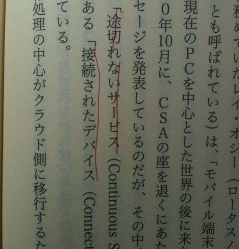

| 「本」を読むことについて[増補版] | |
| 倉下忠憲 | |
| kurashita tadanori (2014) | |
「本」を読むことについて[増補版]
倉下忠憲
読書の価値
読書の価値
「本を読まないヤツは馬鹿だ」
という発言を見かけることがあります。
言いたいことがわからないわけではありませんが、控えめに言ってくだらない発言です。少なくとも上品ではありませんし、真実でもありません。日常的に本を読んでいなくても、聡い人はたくさんいらっしゃいます。物事の勘所をぴたっと掴まえられる人は、「現場」で経験を積んできた人の中にいくらでも見つけられます。
先ほどの発言は、そうした人たちを完全に疎外しています。あるいは発言者の中では、知識の有無だけが人間の能力 を測る物差しになっているのかもしれません。
きっと本を読みすぎてしまったのでしょう。
一昔前では「読書の習慣」は美徳でした。あるいは今でも、親が子どもに読書家になれと求めることがあるのかもしれません。
しかし、「読書の習慣」は本当に美徳なのでしょうか。あるいは、読書家になることが、そんなに大切なのでしょうか。
自明でない価値
最初にお断りしておきますが、私は読書が好きです。読書は良いものだと心の底から感じています。しかし、読書好きであるがゆえに、誤った信念を抱いているかもしれません。自分が好きだから、それが良いものであると認知を歪めてしまう。そんな人間のバイアスが引きおこす弊害もよく見かけます。私の読書肯定も、それと同じものかもしれません。
はたして読書は、自明に良い行為なのでしょうか。もし、良い行為だとしたら、なぜ良いのでしょうか。読書は、その他のメディアでは得られない何かを提供してくれるのでしょうか。
そうしたことをまったく考えないまま、「本を読もう」と他人に勧めるのは、どうにもイカサマ臭がします。特に、勧める相手が若者ならなおさらです。何せ彼らは現代だけではなく、未来にも生きる人たちなのですから。そこでは、物事は新しい意味を持ちえます。
現代は、情報化社会です。あるいは、そこに一歩か二歩足を踏み入れていると言えるでしょう。
インターネットには、これまで発売された本や新聞に匹敵する量の情報があり、今を生きる人は検索という手を伸ばせば、そうした情報を易々と掴まえられるのです。そんな時代に生きる人に、「とにかく本を読んでいればいいんだ」と言ってしまうのは乱暴でしょう。少なくとも、説得力はなさそうです。
そのメディアが持つ価値を――そのメディアだけが持つ価値を提示する必要がありそうです。
「読書家」な人にとって、その価値は自明すぎて説明など不要でしょう。しかし、それが普遍的に自明であるとは限りません。現代にタイムスリップしてきた古代の人々が、鼻紙がわりに一万円札を使ってしまうように、説明しないと理解されない価値というのはあります。読書についても、同じような状況になっているのかもしれません。
情報が溢れそうな時代における「読書の価値」。これについて、あらためて考えてみたいところです。それを一通り考えた後ならば、「ほら、読書っていいでしょ。あなたも本を読んでみませんか？」と胸を張って勧められる気がします。
その第一歩として「よくある質問」に取り組んでみましょう。つまり、あまり本を読んだことがない人が聞いてくるだろう質問について先回りするのです。
たとえば、
「本を読めば、頭が良くなるのか？」
なんて質問はどうでしょうか。
「本を読めば頭が良くなるのか？」
「本を読めば頭が良くなるのか？」
という質問は、存外に難しいものです。これに答えるためには、まず「頭が良いとはどういう状況であるか」を定義づけなければいけません。しかし、その定義が難しいのです。
IQテストの点数で「頭の良さ」を定義できれば話は簡単です。テストの点が良ければ頭が良い。点数が悪ければ頭が悪い。実にストレートな関係で、アルゴリズムでも扱えます。しかし、この定義を採用してしまうと、「頭を良くするためには、IQテストで良い点数を取れるトレーニングをすればいい」ことになってしまいます。
さすがにそれはいびつな話でしょう。
いくらテストで良い点が取れたとしても、それが現実的な生活に役立つとは限りません。であれば、その「頭の良さ」にどんな価値があるでしょうか。
むしろ、現実に存在する「頭の良い人」（あるいは良さそうな人）から特徴を抽出する方が実際的かもしれません。私なら、次のような人物を思い浮かべます。
- 豊富な知識を活用できる
- 優れたアイデアや問題解決の手段を思いつく
- 深い思考と早い決断ができる
- 論理立てた言語化が行える
さて、本を読むことは、これらにどのような影響を与えるでしょうか。
豊富な知識を活用できる
「知識？ いまさら知識を四の五の言うの？」
なんて近未来なセリフが聞こえてきてもおかしくない昨今。たしかに、大量の知識がインターネットには転がっています。それに比べれば、人間が脳内に蓄えられる知識などごくわずかなものでしかありません。必死に知識を暗記しても、となりで検索する人は何の苦労もなくそれらを引き出せてしまいます。
では、知識なんて一切無用で、縦横無尽に検索できる力があればよいのでしょうか。
さすがにそれはいきすぎた考えでしょう。たしかに検索力は必要ですが、検索だけで事足りるとはとても思えません。
- 第一に、全ての情報がネットにあるわけではない点。
- 第二に、ネット情報の信頼性の問題。
- 第三に、ネット情報の断片性。
それぞれについて、少し考えてみましょう。
ネットの外の情報
「たいていのこと」は調べればネットで見つかります。逆に言えば、見つけられないものも存在するわけです。そして、見つけられないものは、見つけられないが故に価値が高くなり得ます。
情報が新しすぎてネットにない、情報が古すぎてネットにない、情報が有用すぎてネットにない。
いろいろな場合が考えられます。きっと、ほかにもあるでしょう。どうであれ、ネットだけに情報源を求めてしまうと、扱える情報が限定されてしまう可能性があります。また、暗黙知と呼ばれるようなDynamic thingsの中に潜む知識もありますが、今のところ、それをネットで見つけるのは難しいでしょう。
しかし、遠い未来では、すべての本は――引いては全ての情報は――、ネットに吸収されるかもしれません。暗黙知も、コミュニケーションがネットに移行していけば、その中で見つけられるようになることもあるでしょう。
有用で貴重な情報はお金になり、秘匿される傾向にありますが、あたらしい経済力学が生まれ、情報をオープンにした方がメリットとなる環境が登場すれば、今よりもはるかに有益な情報がネットで得られるようになるでしょう。
現状では、本でしか得られない情報もありますが、それが今後もずっと続くとは限りません。ここには読書ならではの価値はなさそうです。
情報の信頼性とコスト
インターネットの情報は玉石混淆であり、編集や校正を経てきた書籍とは信頼度が違う、といったことはよく言われます。
しかし、紙の本で出版されている本にも、首をかしげたくなるものはたくさんあります。ジャンルは書きませんが、まったく科学的でないお話が、科学的なジャケットを着て堂々と出版されていることすらあります。
もちろん平均的に見れば、書籍の方が信頼性は高いと言えるでしょう。これは本を読むことのメリットと言えそうです。しかしそれは、結局のところコストの問題なのです。つまり、インターネットで公開すると利益になりくいため、情報を検証するためのコストが賄えない状況が背景としてあるわけです。
これもまた経済力学が変化すれば、あたらしい形が生まれてくるでしょう。ネット情報は数が多い分、玉石混淆感が薄まることはないにせよ、ネットだから信頼性がない、と簡単に言い切れない時代がやってくることは充分考えられます。
どうやらこれも、本の永続的な価値とは言えなさそうです。
断片と文脈
インターネットはデジタル情報の宝庫であり、デジタル情報であるが故に検索が活用できます。頭から文章を読んでいかなくても、自分が欲している情報だけを即座にピックアップ可能です。これによってもたらされる時間的恩恵は計りしれません。しかし、弊害もあります。
必要な箇所だけをピックアップすれば、当然その他の部分はスルーされます。それはつまり、全体の「文脈」もまた無視されてしまうということです。情報の全体像があり、その全体像の中で一つ一つの情報がどのように位置づけられているのかが気にされなくなるのです。言い換えれば、情報が断片化してしまうのです。
そのような状況では、たとえば「本筋ではないし、たいして重要でもな話だが」と断ってある部分が、さも重要な主張であるかのように扱われることもあり得ます。
これは大いに問題です。
しかしこれは、メディアの問題ではなく、メディアとの接し方の問題ではないのか、と疑問に思われるかもしれません。つまり、インターネットを使っていても、丁寧に文脈を追いかけるような情報摂取の作法を守っていれば、こうした問題は起きないのではないか、という指摘です。
その指摘はある側面では正しいのですが、私たちはマクルーハンのメッセージを思い出すべきでしょう。メディア論の大家、マーシャル・マクルーハンは「メディアはメッセージである」という言葉を残しました。そして、そのアレンジバージョンとして「メディアはマッサージである」とも言いました。
私たちはメディアの形式に影響を受け、メディアに載るコンテンツもまたその影響からは逃れられません。私たちの情報摂取は、徐々にメディア色に染まっていくのです。
どういうことでしょうか。
日々膨大な情報に接し、それを検索で引っ張り出すような使い方をしていれば、それ以外の情報にも同じスタイルによる情報摂取を（意識せずに）行うようになるかもしれません。ネット情報だけでなく、テレビや新聞などの情報ソース、人から聞く話や本を読む際などにも、そのスタイルを適用してしまうのです。
つまり、文脈を大幅に切り取り、ときには無視すらして情報を断片的に扱うようになるのです。そこでは、情報の関連性といったものは完全に消失し、ただ断片的な情報群が漂うばかりです。
また、提供されるコンテンツも、検索に最適化された形にシフトしていく可能性があります。つまり、断片的に扱いやすいように、はじめからメディア側が断片的なコンテンツを提供するようになってしまうのです。情報を細分化し、できるかぎり短い文章で切り取る――検索が主要になった世界では、そんな「断片化を意識したコンテンツ」が生み出されやすくなることが考えられます。扱いやすくはあるが、やせ細った情報が大量生産されるのです。
そして、これら二つの要素が相互に影響し合い、私たちの中から文脈というものが少しずつこぼれ落ちていきます。断片化された扱いやすい情報が生み出され、それを摂取する側も断片化に適した脳の使い方をする。全体像といったものはなく、局所的・場当たり的な情報の散乱がそこにあるだけ。きっと、そのような刹那的な情報摂取は心地良いものになるのでしょう。そうした情報が絶えることなく私たちのものに流れ込んでくる環境......。
その環境は、ユートピアなのでしょうか、それともディストピアなのでしょうか。
大量の知識にアクセスできるけれども、そこには何の体系も地平線もレイヤーも世界観も存在しない。家具はあるけれども、それを収納する部屋がないような状況です。
そんな状況でも、クイズ大会では1位を取れるでしょう。しかし、現実世界はクイズ大会ではありません。情報は、文脈の中に位置づけられてこそ意味を持ちます。言い換えれば、知識を活用するためには文脈が欠かせないのです。
検索を使えば、「今の状況に必要な情報をすぐに見つけられる」ようになるかもしれません。しかし、一番の問題は「今の状況とはどのような状況なのか」を認識することです。つまり、コンテキスト（文脈）を把握することです。コンテキストがあってこそ、情報は活かされるのです。
また、自分なりのアウトプットを生み出す際にも文脈は欠かせません。極言すれば、優れたアウトプットは、優れた素材ではなく、優れた文脈によって生まれてきます。設計図がなければ、どれだけ扱いやすい部品があっても完成品は生まれません。情報における完成図や土台となるものが文脈なのです。
断片化された情報を日常的にインプットしているだけでは、その人の文脈は育ちません。逆に、頭から終わりまで読む、という体験を重ねていけば、その人の文脈は広がりを見せるでしょう。あるいは深まりを見せるでしょう。
梅棹忠夫さんの『知的生産の技術』（岩波書店）の中に、本について書かれた一節があります。
どんな本でも、著者には全体として一つの構想というものがあって、それによって一冊の本をまとめているのである。各部分は、全体の文脈のなかでそれぞれしかるべき位置におかれることによって、意味をもっているのである。
つまり、単に情報を知るだけではなく、その情報を含む全体像を知ることができる。あるいはその全体像の中でそれぞれの情報がどのように位置づけられているのかを知ることができる。これが本を読むことのメリットです。そして、情報をネットで検索して使うこととの違いでもあります。
2014年の段階では、まだ情報摂取の作法において「本の洗礼」を受けてきた人の方が圧倒的に多いはずです。だから、文脈の喪失は大きな問題にはなっていません。しかし、デジタルネイティブならぬ検索ネイティブ――頭から終わりまで読むという概念を持たない世代――が登場したとき、この問題はやっかいな課題として立ち上がってきそうな予感があります。
情報や知識は、文脈から独立して役立つことは――クイズ大会を除けば――まずありません。あまたある情報や知識を活かすためには、文脈を持つことが欠かせないのです。
少なくとも、「最初から最後まで読む」ことを想定して作られている本は、文脈がセットになっています。そうした本を読むことは、著者が持つ文脈に触れることにつながります。
これが、読書の効能の一つです。
深い思考が展開できる
深い思考をするためには何が必要でしょうか。
もちろん、脳です。しかし、脳があるだけで思考できるかというと、少々微妙なところです。
深い思考を行うためには、「考え方」を身につけておかなければなりません。考え方なしに、考えを進めることなど不可能です。算数でも「＋」が何を意味するのかが了解できていないと、計算式を展開していくことはできません。これは、概念の展開でも同じです。比較、検証、反証、推理、推測、類推、補強、と何でもよいのですが「考える」メソッドが脳にインストールされていないと、話を前に進めていけないのです。
ありとあらゆる学びがそうであるように、「考え方」のインストールも真似から始まります。だから、日常的に考えごとをする人のそばにいて、聞き耳を立てていれば、「考え方」が身についていきます。昔の日本に存在した「私塾」には、そうした効果があったのでしょう。
では、考える人が近くにいないのなら、どうすればよいでしょうか。それはもちろん、本を手に取ればよいのです。一冊の本には、著者の声がたっぷりと詰まっています。私たちはページを開くことで、その話しぶりに耳を傾けることができます。
つまり本を読むことは、情報を得るだけではなく、文脈に触れるだけでもなく、どのような考え方がそこで繰り広げられたのかというプロセスを知ることもできるのです。別の言い方をすれば、著者の思考の道のりを追体験できるのです。
哲学者のショウペンハウエルは、そのことを批判しました。本を読むことは、自分の頭を休ませ、他人にものを考えてもらうことだ――この指摘はしごくもっともです。しかし、人はそうした体験を経てしか、自分の頭の動かし方を学べないものなのです。だからこそ、最初のうちは徹底的に他人にものを考えてもらい、それを眺めることが必要なのです。
そうした体験を繰り返すことは、私塾に通うのと似たような効果が得られるでしょう。
では、考える力が身につけばそれでよいのかというと、もう一つ押さえておきたいことがあります。
パソコンをイメージしてみましょう。パソコンがあり、アプリがある。これで望む動作は可能になります。しかし、複雑な処理を実行していると、次第にCPUに負荷がかかりはじめ、ファンが回り始めます。それに耐えられないとパソコンがフリーズします。
これと似たようなことが人間の脳にも起きるのではないでしょうか。何かを考えるためには、意識をその対象に向け続けなければいけません。それにはエネルギーが必要です。簡単に言えば集中力がいるわけです。それがなければ、どれだけ優れた「考え方」をインストールしていても、思考を展開し続けることはできません。言い換えれば、知的な体力が必要なのです。
肉体的な体力と同様に、そうした力はトレーニングによって鍛えられます。つまり、知的な体力を要求する行為を繰り返していれば、徐々に上限が上がっていくわけです。自分の思考を一つの方向に維持しておくこと、それはまさに「一冊の本を読む」という行為そのものです。
映像メディアは受け身の姿勢でもインプットできます。しかし、活字メディアは意識的に意味を読み取らなければ先には進めません。さらに、ボリュームある文章であれば、頭の中にその文章世界を組み上げる必要があります。だから、疲れているときには読書はできないのです。
それはつまり、読書は脳に負荷を与えているということです。逆に言えば、本を読むことで何かしらの力が鍛えられるとも考えられます。
※『プルーストとイカ』（メアリアン・ウルフ著 インターシフト）『ネット・バカ』（ニコラス・Ｇ・カー 著 青土社）あたりもご覧ください。
本を読むことは、それも没頭して本を読むことは、「考え方」というソフトウェアのインストールでもあり、知的な体力というハードウェアのトレーニングでもあるわけです。この二つが、深い思考の展開を支えてくれます。
ただし「考え方」が全て省略され、「答え」しか記載されていない本は、この用途には適しません。本であれば何でも良い、というわけではない点は留意しておく必要があるでしょう。
優れたアイデアや問題解決の手段を思いつく
優れたアイデアは、どのようにすれば思いつけるでしょうか。
ヒントは、ジャームズ・W・ヤングの『アイデアの作り方』（CCCメディアハウス）にあります。
この本の中で、著者はアイデアを「既存の要素の新しい組み合わせ」であると断じています。つまり、これまで誰も試みたことない要素の組み合わせの中に、新しいアイデアが眠っているわけです。別の言い方をすれば、異なる文脈が交わるところにアイデアがあります。
複数の文脈を有していなければアイデアを思いつける可能性は低くなるでしょう。あるいは、検索で必要な情報ばかりをピックアップしていても同様です。なぜかと言うと、「必要だ」とわかる情報は、既に誰かが試みた組み合わせである可能性が高いからです。むしろ、まったく関係ないと思っていたところに、アイデアの種は転がっていたりします。
問題解決も、基本的にアイデアと同様です。
何かしらの問題が「問題」となっているのは、二つの状況が考えられます。一つは、問題解決策は存在しているが、それを発見できていない状況。もう一つは、そもそも問題解決の方法がまだ存在していない状況。さらにもう一つ、解決策は存在するのだけれども、コストなどの制約条件によって適用できない、という状況もありますが、これは後者に加えられるでしょう。
前者に関しては、検索型アプローチで問題ありません。そうした情報はネットでもたくさん見つけられます。しかし、困るのは後者です。解決策が存在していないのですから、どこを検索しても見つかるはずがありません。この状況を解決するのが、「アイデア」と呼ばれるものです。
つまり、別の問題領域で使われている解決策を、自分の問題に応用する。それによって、あたらしい問題解決策を生み出す。後者の状況では、こうしたアプローチが必要になってきます。
これは検索型の情報摂取では限界があります。これまで誰も思いつかなかったような組み合わせを試すためには、自分の領域外の――言い換えれば、検索キーワードすら知らないような領域の――知識に触れなければいけません。豊かなコンテンツには、そうした要素がたくさん含まれています。一冊の「本」はその代表例と言えるでしょう。
逆に、断片化されたコンテンツでは、そうした要素はなくなります。無駄な、あるいは余計な情報は切り落とされるのです。しかし、その一見余計に見える情報が、別の領域でアイデアの種として役立つことがありうるのです。だからこそ、当面必要でなくても、一冊の本を頭から最後まで読むことには意義があります。
もちろん、どのような本でも一律に豊かであり、頭から最後まで読む価値がある、とまでは言えないことは説明するまでもありません。
論理立てた言語化が行える
論理立てた言語化についても、「考え方」と同じことが言えます。
論理立てられた文章と多く接していれば、自身のスキルも向上します。ただし、単に読むだけではなく、きちんと論理の筋を追いかけて読むのがポイントです。論理の筋をなぞる、と言い換えても良いでしょう。もし、その際に疑問が生じたならば、著者の言うことを鵜呑みにするのではなく、自分なりの「考え方」を使って、検証してみることも大切です。
ちなみに、流れるようにスラスラと読める文章でも、論理的にはまったく破綻しているものも珍しくありません。そうした文章を論理的に解読しようとしても、骨が折れるだけで実入りは少ないものです。言っていることが全体的にむちゃくちゃに感じられるようならば、別の本を開いてみるのが良いでしょう。
スキル以外のもの
ここまで「本を読む」という体験から得られる効果について考えてきました。
どうやら本を読むことには、「頭の良さ」に何らかの貢献がありそうです。つまり、「本を読めば頭が良くなるのか？」という質問への答えは、イエスになります。もちろん「頭の良さ」の定義を変えてしまえば、この答えは一瞬でノーになってしまいます。それでも、「本を読むこと」が何かしらのスキル向上に役立つことは間違いないでしょう。あとは、そのスキルが有用なのかどうかの判断だけです。
私はこれらのスキルは、市民として――もっと言えば情報化社会を生きる市民として――たいへん有用だと感じます。しかし、私のこの考えが絶対的であると断じることも難しく感じます。有効な証拠もありません。もし、ここまで挙げてきたスキルに一切有用性を感じないのであれば、読書について時間を投下するのは止め、別のことに時間を使った方がよいでしょう。
また、非常に残念ながら、最初に挙げた「頭の良い人の印象」の中には、倫理観や、他の人に共感できる力は含まれていません。とても頭の切れる悪人、というのも確かに存在します。頭さえ良ければよい、というものでもないでしょう。
では、そうしたものはどうすれば身につくかと言えば、やはり人生経験を重ねることが第一でしょうし、それを代替する文学にも役割はありそうです。
以上のようなことを考えながら、2013年に『ソーシャル時代のハイブリッド読書術』（シーアンドアール研究所）という本を書きました。この本は、読書に関するノウハウを紹介するという体裁を取っていますが――そして実際にそれを紹介もしていますが――、現代でなぜ読書をする必要があるのか、という点にも触れています。
もちろん、多くを語れたわけではありません。ノウハウに寄り添うような形で、本を読むことの大切さ、本を読むことで得られるものの重要性を紹介するに留まりました。
それでも日常的なインプットが、ウェブ情報の断片的な摂取になっている人に、読書の価値のさわりを提示できたように思います。
次にこの『ハイブリッド読書術』について触れてみましょう。そこには「本をどう読むのか？」という質問に対するヒントが眠っています。
「３つの多読」について
『ハイブリッド読書術』は、タイトル通り「ハイブリッドな読書術」がメインテーマです。速読と精読、アナログとデジタル、一人読みと複数読みといった方向性が異なる手法を、それぞれのメリットを意識しながら活用する。そんな内容になっています。
しかし、この本には、裏のテーマもあります。それが次の「３つの多読」です。
- 「読書量を増やす」
- 「読む本のジャンルを広げる」
- 「一冊の本を何度も読む」
「読書量を増やす」
簡単に言えば「もっと本を読みましょう」なのですが、もう少し丁寧に言い直すと「インプット全体における読書の割合を増やしましょう」となります。
これは「読書さえしておけばよい」という話とはまったく違います。やはりインターネット経由の速度ある情報は貴重です。しかし、そればかりに偏りすぎていると、情報摂取はいびつなものになりかねません。本をじっくり読んでいくことには、素晴らしい独自の価値があります。情報摂取のバランスを取るためにはいくつかのタイプのインプットを心がけた方がよいでしょう。
また、「インプット全体における読書の割合を増やす」なので、読書の量を増やせば、別のインプットを減らさなければなりません。でないと、情報の海で溺れてしまいます。「もっと知識を！」とばかりにインプットを行いすぎるのもバランスが悪いものです。自分の思索を広げたり、何かを書いてみたり、あるいは実行してみる時間も必要でしょう。
読書時間の代わりに何を減らすかは、もちろんその人の自由ですが、偏りすぎない配慮が求められます。
「読む本のジャンルを広げる」
いろいろな本を読みましょう、ということ。
手に取りやすい、読みやすい本ばかりを読んでいると偏りが生じてしまう恐れがあります。その偏りこそが個性だ、と主張することもできますが、開き直りというよりも、子どもっぽい言い訳に聞こえます。
まずは、自分の専門ではない分野の本にアンテナを広げてみることです。また、自分の考えとはまったく逆の主張をしている本もチェックしてみることもお薦めします。鉄というのは、叩かれて鍛えられるものです。あるいは、実用書とはまったく関係ない本にも、関心を持ってみるとよいでしょう。そうしたものが開くドアは必ずあります。
そどん欲に吸収していると、やはりアイデア発想力というのは上がってきます。
「一冊の本を何度も読む」
おそらく、これがもっとも大切です。
どれほどわかりやすく書かれている本でも、一回読んだだけで理解した気持ちになるのは、さすがに傲慢というものでしょう。たいていの場合は、大まかに「知った」というだけで、「理解した」まではたどり着けていないのではないでしょうか。何度も読む、というのは、理解に至る道のりとしてごく真っ当なルートです。また、時間をおいて読むことで、一つの本を別の視点から読むことも可能になります。
世の中には、読んでも読んでも汲み尽くせない本があるものです。そういう本との出会いは特別な体験であり、まるで親友を得たような感覚がするかもしれません。
「良い本」の一般的な定義は難しいものですが、何度も読める本は自分にとって良い本だ、ということは言えそうです。
しかし、「世界中に住む人々：親友になれる人」の比率と同じぐらいに、そういう本を見つけるのは簡単ではありません。だからこそ、読書の数を増やし、できるだけ多様なジャンルの本に触れることが重要です。閉鎖的なコミュニティに閉じこもっていたのでは、出会いのチャンスは限られてしまいます。
３つの多読の効能
少なくとも、本を読んだからと言って、「年収が10倍」になったり「一瞬で1兆円稼いだり」はできません。もしかしたら、ごくごくごくごく稀にそういうことも起こりえるのかもしれませんが、誤差と見分けが付きませんので気にする必要はないでしょう。
ただ、そうした誤差もすべて含めた上で、読書は人生を豊かにしてくれる可能性はあります。スキルの向上だけではなく、人生観に影響を与えるのです。
たとえば年収が10倍にならなくても、自分の人生に納得感を持って生きていける。あるいは年収が10倍になっても、年収が半分になってしまった人のことを考えられる。はたまた「成功したい」と願ったときに、ふと「そもそも成功って何だろうか、自分の人生にとってどんな意味があるだろうか」と足を止めて考えられる。
そうしたことができる力は、波のように変化する外部環境に依らない、むしろそうしたものに抗する武器となってくれます。それはおそらく、これからの社会を生きていくうえで、欠かせない力となっていくでしょう。
もちろん、ただ本を読めば良い、というわけではありません。「どのように本を読むのか」が大切なことは、これまでも書いてきましたし、「どんな本を読むのか」という難しい課題も避けては通れません。
さて、一体「どんな本を読んでいけばいい」のでしょうか。本章の最後に、この質問について考えてみましょう。
まっすぐではない読書道（みち）
本の読み方は、一直線なものではありません。
それは一冊の本を行きつ戻りつしながら読む、という話だけではなく、本を読むという全体的な行為にも言える話です。
ある本を読む、別の本を読む、途中で挫折する、また別の本を読む、前の本に帰る、やっぱり挫折する、別の本を読む、最初に読んだ本をもう一度読む、別の本を読む、挫折した本を読む、なんとか読める、別の本を読む、最初に読んだ本をもう一度読む......。
こんな感じで進んでいきます。
どんな本を、どんな風に、どんな順番で、何度読むのか。そんなのはまったくの自由です。そして、まったくの自由でなければなりません。
誰かが提示した教養書100冊を頭から順に読んでいけば、教養スキルが手に入る、といったものとは全然違います。読書という行為はカリキュラムに落とし込むことはできません。それは恐ろしいほどに個人的な行為であり、個人的な行為であるからこそ意味を持ちえます。
面白い本を誰かに教えてもらうのは全然構いませんが、「何を読むのか」を最終的に決めるのは自分自身です。その決定権を譲渡すると、読書の面白さは薄まっていきます。本を読む意味も消失していくかもしれません。
決定権を自分が持ってしまうと、その責任を負うのも自分になります。もし、選んだ本がつまらなかったとしても、「まーしゃーねーな」とぐっと腹に飲み込まなければいけません。誰かのせいにはできないわけです。そこには、多少のしんどさがあるかもしれません。しかし、面白さというのは多少のしんどさと隣り合わせです。ずっと無敵状態のアクションゲームなんて、二面ぐらいで飽きてしまうでしょう。
あるものを手にするとき、別のものを同時に手にすることになる、というのはよくあることです。その二つは、望まれていないかもしれませんが、セットなのです。片方だけを手放したくても、それは叶わぬ願いとなります。
歩く上で気をつけたいこと
どんな本を読んでいくのかはまったくの自由ですが、読書道 の歩き方には、いくつかのポイントがありそうです。
- 良い本には何度も触れること
- 新しい話題に関心を開いておくこと
- ノイズをゼロにしないこと
ここに「自分の読書の趣味を決して他人に押しつけないこと」を加えておいてもよいでしょう。なにせ読書は個人的な行為なのですから。
ここまで本を読むことの価値について考えてきました。本は、特殊なメディアであり、その力を引き出すためには特殊な接し方が必要とされます。新聞と絵巻物の読み方が違うように、本の読み方にも独自性がある、と考えておいた方が良いでしょう。
次の章では、「本」という固定物、言い換えれば「本」というまとまりについて考えてみましょう。
「本」というまとまり
「本を読む」ということについて
本は、一冊のまとまったコンテンツです。作り上げられた一つの世界であると言えるでしょう。しかしながら、そうした本は断片的素材から生まれています。バラバラに存在する素材を、一つの命題、言い換えればコンテキストでまとめたものが本です。
では、本を読む人はどうでしょうか。本を読む人は、まず一冊を通して読むことで本の全体像を受け取ります。しかし、それだけではおわりません。読書メモなどを駆使し、自分の気になるところをメモに残したりもします。これは大きな一本の木から、小ぶりな枝を切り取るようなものです。
ここで、思考実験をしてみましょう。
原稿用紙ではなく、カード一枚一枚に内容を書いていく。そして、そのカードの束を「本」としてしまう。そうすることで、読者は自分が気になった部分のカードを、すっぽりと抜き出し、自分のカードボックスに入れることができます。
これは面白いイメージです。そして、「本を読む」という行為の本質を表現しているような気もします。
まず確認しておきたいのは、「どうせ読者の手でバラバラにされてしまうのだから、最初からバラバラに散らばせておけばいいじゃん」ということには、ならない点です。
バラバラに散らばった状態では、その全てに目を通すことにはなりません。とりあえず一つの文脈（それは著者が育んだもの）に沿って、事例なり話題なり証拠なり論説を並べていく。読者も、そのガイドに沿ってそれに触れていく。そういう軸となるものが必要なのです。
でも、その軸は著者の中にある軸でしかありません。読み手は、読み手で自分の軸を持っています。
『ハイブリッド読書術』では、「本を読むときに線を引きましょう」と書きました。目的はさまざまですが、要点は「自分の心が動いたところを後から確認できるようにする」ことです。
「自分の心が動いたところ」を拾うというのは、本の中に含まれている情報を自分の中にある文脈で拾う、ということです。
そして、その行為はそこでは終わりません。
ある本を読んで、自分の文脈で情報を拾う。また別の本を読んで、自分の文脈で情報を拾う。またまた別の本を読んで、......
と繰り返していくうちに、その人の文脈がすくすくと育っていきます。
そして、ある一定のラインを超えたところで、その人が読んできた本を書いた著者たちと同じように、自分の文脈で情報を並べることになるのです。それは「本を書く」という行為ではないかもしれません。誰かに向かって考えを述べる、ということもあるでしょう。あるいは他の何かもありそうです。
ともかく、そこには何かしらのアウトプットが生まれてきます。
誰かが何かを積み重ねて並べる→
受け手はそこから何かを抜き出す→
受け手は抜き出すことを続けていく→
やがて受け手が、積み重ねる人になる→スタートに戻る
こういうサイクルがぐるぐると回っているのです。
エントロピーという概念があります。「乱雑さ」を表す物理学の言葉です。
この宇宙では、何もしなければエントロピーは増えていきます。乱雑な度合いが、どんどん増えていく。簡単に言ってしまえば、片付けなければ部屋はどんどん散らかっていく、というようなことです。
たとえばペンがペンスタンドに刺さっている状態を「整理されている」状態としましょう。しかし、部屋の空間の中でペンが存在できる場所はほかにいくらでもあります。机の上でも、床の上でも、椅子の下でもどこにでも存在可能です。
仮にペン300カ所ぶんのスペースがその部屋にあるとしたら、「整理されている状態」になるのは1/300しかありません。残りの299は散らかっている状態です。だから無作為にペンを動かし続ければ、基本的に散らかった状態にしかなりません。
物理学的には宇宙的な乱雑さがどんどん増えていけば、やがて「エネルギー」が生み出せなくなってしまう、というようなお話があるのですが、それは横に置いておきましょう。
ともかく、エントロピーは増大する方向に動いている。しかしながら、不思議なことにこの宇宙には生命というものがあります。私たち人間は、どう考えても物質の秩序で構成されています。生命が誕生するとき、エントロピーは減少しているのです。
しかし、その生命が尽きるとき、人は土へと還り、エントロピーはプラスの方へと動いてきます。つまり、限られた時間だけの反抗なのです。生命というものが維持されている間、その内側ではエントロピーは増大しない。そして、その生命は、新しい生命を生み出す。一つの反抗が終わり、また別の反抗が生まれる。
構築と分解。新しい構築と新しい分解。そのサイクルがゆっくりと続いてきているのです。
本を書くことと読むことの関係性も、これに近いのかもしれません。
そうしたことを踏まえると、
- 著者は一つの体系なり自分の文脈でコンテンツをまとめること
- 読み手は読み手で、自分の体系なり文脈でそれを「摂取」すること
この二つは、とても大切なことだと感じます。
本というまとまり
ネット上には、たくさんのブログがあります。その大半は、名も無き――実際は名前があるので、あまり有名でないが正確でしょうか――個人によって運営されています。
また昨今では、セルフパブリッシングなるものも登場しはじめました。電子書籍を自分で作成し、自分で販売する行為。それがセルフパブリッシングです。
どちらも、HTMLによる表現を使い、電子ベースでのメディアとなっています。では、この二つのメディアは近しいのでしょうか。それとも縁遠いのでしょうか。
少し考えてみましょう。
二つのメディアの共通点
ブログとセルフパブリッシングは多くの共通点を持っています。
明らかな共通点は、舞台がインターネットという点です。一個人が全国、あるいは全世界に向けて発信できる。これが一番大きな共通点でしょう。そこに大いなる可能性が眠っている点も同様です。
さらに、リフロータイプが主流というのも共通しています。ブログはCSSで固定しない限り、フォントサイズは読む側が自由に変更できます。リフロータイプのEPUBも同様です。読み手側にデザインの主導権があるわけです。
それに対してPDFは、基本的に単一のサイズです。もちろん拡大も可能ですが、EPUBファイルの文字サイズを大きくするのとは少し違っています。PDFファイルは拡大してもデザインは変わりませんが、EPUBファイルであれば、一行の文字数が変わってくるので見た目もずいぶん変わってしまいます。
そういう視点で捉えれば、紙の本の電子的な継承者はEPUBよりも、むしろPDF形式と言えるでしょう。逆に言えば、EPUBファイルはまさしく電子書籍なのです。紙の本とは違う、まったく新しいフォーマット。ウェブ親和性があるフォーマット。そういう認識で良いと思います。
また、デザインの主導権が読み手側にあることで、作り手がデザインに凝る必要があまりない、というのもポイントです。もちろん、凝ってもよいのですが、ブログであればRSSリーダーで読まれたらブログ側のデザインなどほとんど意味をなしませんし、リフロータイプのEPUBでも凝ったデザインは簡単ではありません。
これはある種の欠点でもありますが、書き手がコンテンツの中身以外にそれほど時間を投下しなくても良い、というメリットでもあります。
こうしてみると、メディアのフォーマットとしてはずいぶん近しい部分が多いのですが、違いもやっぱりあります。
一つには、無料で読まれることが前提のメディアと、販売されることが前提のメディアの違いがあるでしょう。ただし、これはnoteという課金可能なツールの登場で境界線が曖昧になっています。なので、ここではスルーしておきましょう。
もう一つ、大きな違いが、コンテンツのまとまりです。
ブログは、基本的に一つ一つの記事が独立しています。読む人は、そのブログに掲載された一連の記事を読むのではなく、検索して発見した、あるいはその日更新された最新の記事だけを読みます。もちろん書く方もその記事だけが読まれることを前提に書きます。2000字の記事なら、その2000字で言いたいことを言うわけです。
ある意味で断片化（フラングメント化）させるわけです。
メディアの特性上仕方がないわけですが、2000字で言えることには限りがあります。いや、表現としては、2000字で言い切れるように言いたいことを――盆栽の手入れのように――そぎ落とすと言ってよいかもしれません。
一つ一つの記事が独立して読まれるブログが背負った宿命のようなものです。
でも、それらの記事をいくつかあつめて電子書籍にすれば、不思議と全体観・全体像みたいなものが生まれてきます。
これは、セルフパブリッシングで『Category Allegory』という本を作ったときに強く実感しました。一つ一つの記事もそれなりに面白いのですが、それをまとめると何か違ったものが立ち上がってきます。それが文脈と呼ばれるものなのでしょう。
仮に10編のショートショートがあるとして、それぞれをブログで読むのと、それをまとめた電子書籍で読むのとでは、「読書体験」はかなり違ってきます。
今はまだ、その違いをはっきりと記述することはできません。違うことはわかっているのですが、どこがどう違うのかをうまく腑分けできないのです。
でも、この違いは「本作り」においてかなり重要なファクターであるような気がしています。いくらでも検索すれば情報が見つけられる時代において、わざわざ「本」を作ること、そしてわざわざ「本」を読むこと。その根源に関わる要素がそこに潜んでいそうです。
時間が経過してなお、残っているもの
『村上春樹、河合隼雄に会いにいく』（新潮文庫）という本があります。
その中で村上春樹さんは、小説についてこんなことを書かれています。
最近小説が力を失ったというようなことが巷間よく言われるわけですが、ここでも言っているように、僕は決してそうは思いません。小説以外のメディアが小説を越えているように見えるのは、それらのメディアの提供する情報の総量が、圧倒的に小説を越えているからじゃないかと僕は思っています。
たしかに小説に比べると、あたらしいメディアが持っている情報の量はとても多いものです。それから伝達のスピードが、小説なんかに比べたら、もうとんでもなく早いですね。ちまちまページを読み進めていったり、空が赤みを帯びるまで本に没頭していたり、なんて必要はありません。ただぼーっと眺めているだけでも、短時間に大量の情報が私たちの目に（あるいは脳に）入り込んできます。
だから、小説なんてメディアは時代遅れだ。そんな風に感じることもあるでしょう。でも、本当にそうなのでしょうか。早く・多く・手軽なものが、常に善なのでしょうか。
でも僕は小説の本当の意味とメリットは、むしろその対応性の遅さと、情報量の少なさと、手工業的しんどさ（あるいはつたない個人的営為）にあると思うのです。それを保っている限り、小説は力を失わないのではあるまいか。時間が経過して、そのような大量の直接的な情報が潮が引くように引いて消えていったとき、あとに何が残っているかが初めてわかるのだと思います。
時間が経過してなお、残っているもの。
非常に残念ながら、それが何なのかは時間が経ってみないとわかりません。短期間では判断できないのです。そうしたものを評価するためには、時間的厚みを持った評価軸が必要です。でも、それはあたらしいメディアが持つ価値観とは相容れないのかもしれません。
私たちに押し寄せてくる圧倒的な情報の量は、言葉通り圧倒的であり、時間が経って何も残っていなくても次々に押し寄せてくる情報がそのことを意識の外へと押し流します。たとえ底に穴が空いていても、蛇口を開きっぱなしにしておけば、一見水は溜まるのです。
でも、何かの拍子に蛇口が閉じてしまったら、どうなってしまうでしょうか。
読むメディアの在り方
春樹さんが小説のメリットとして挙げられている「対応性の遅さと、情報量の少なさと、手工業的しんどさ（あるいはつたない個人的営為）」は、「読書すること」（読むこと）全般に敷衍できる要素も含まれているでしょう。
逆に、小説的なものが、こうした要素からどんどん遠ざかってしまっている傾向もどこかしらあるのかもしれません。
ブログというメディアは、どちらかというとあたらしいメディアに属するとは思うのですが、少なくとも自分のブログに関しては、「読むメディア」としての在り方を考えていきたいところです。もちろん、あたらしく生まれてくる電子書籍という「読むメディア」でもそれは同様です。
次の章では、本の読み方を飛び越えて、「本」そのものについて少し考えてみましょう。
「本」についてのミニエッセイ
読書伝播率が低い本がもたらすもの
出生率という概念があります。
「一定人口に対する、その年の出生数の割合」をあらわす数字で、これが一定値以上だと人口は増えてゆき、それより小さいと人口は減少に向かってしまう。そういうパーセンテージです。
単純に考えて、一組の夫婦がひとりの子どもしか生まないならば人口はどんどん減っていくでしょうし、四人の子どもを産むのならば、増えていきます。特に難しい話ではありませんし、直感にも反しません。
ふと考えてみると、出版業界にも同じような数字を持ち出せるような気がしてきました。読書伝播率とでも呼べるような数字です。
一冊の本から次の本へ
ひょんなことから、あなたは一冊の「本」を手にしました。生まれて初めて買った「本」です。
あなたはその本に大変な感銘を受け、雨が降ろうが槍が降ろうが、なにがなんでもその続編を購入することを決意しました。こういうとき、その読書伝播率は100です。逆に、その本に大変な失望を受け、「もう本なんて買わないよ絶対」と思ったとしたら、読書伝播率は０になります。
仮に読書伝播率が50であるとすれば、その人が次の本を買う確率は50%。世の中のすべての本の読書伝播率が50だと仮定すると、四冊目の本が売れる可能性は、
一冊目(50%) × 二冊目(50%) × 三冊目(50%) × 四冊目(50%)
で、6.25%。かなり難しいと言わざるを得ないでしょう。
逆に、すごくすごく面白くて続編とそのまた続編まで買う固い意思が宿ったとすれば、読書伝播率は200となり、世の中の本はどんどん売れまくることになります。
※もちろん以上の話は極度に単純化しています。あくまでも思考実験のためのモデルとして捉えてください。
ポイント１
注意したい一点目。
それは、読書伝播率はその本がすごく売れたかどうかとは関係していない、ということです。ベストセラーであっても、読書伝播率が低い、ことは十分にあり得ます。その本は売れたけれども、後続の本は......ということですね。
逆に、販売部数が低くても読書伝播率（以降RS）が高い本の可能性も考えられます。
数字上は、RS１の本が100万部売れるのと、RS100の本が1万部売れるのはイコールです。どちらも次の本は1万部売れることになります。しかし、その次はどうでしょうか。計算式は省略しますが、続編もまたRS１ならば、本の売り上げは急激に低下してしまいます。逆にRS100を維持できるならば、そのまた続編も同じだけ売り続けられるでしょう。
ポイント２
注目したい二点目。
RSを明確に定義しないまま話を進めていますが、それを「一人の人間の次回購買活動に影響を与えるもの」にだけ限定する必要がないことはあきらかです。社会的動物である私たちは「ねえ、この本面白いから読みなよ」と誰かにアドバイスすることはよくあります。あるいは「あぁ、それだったらこの本がいいんじゃない」なんてことも。
つまり、
一冊の本が売れる→その本とは違う別の本が売れる 一冊の本が売れる→その本が別の人に売れる
こうした二つの伝播方向があるわけです。後者はすでにソーシャルマーケティングの範疇に入っているうえ、「誰が、どのように伝播させるか」によって影響力の大きさも変わってきてしまうので、今回はスルーしておきましょう。
一点付け加えておくと、当人が別の本を買う動機付けを生むものと、別の人に勧める動機付けを生むものは完全に同じではありません。詳しく考えるならば、垂直方向と水平方向に分解した方がよいでしょう。
※言うまでもなく、両方の値が高い本は、出版社・出版業界において宝のような存在です。
RSの低い本
では、RSの高さ・低さはどのように決まるのでしょうか。
もちろん、わかりません。
なにせ、思いついたばかりの概念です。ただ、いくつかのことは言えそうです。
まず、「面白くない本」のRSは低くなります。ただし、何をもって「面白い」かを決めるのは完全に読者依存なので、どうこうしようはありません。
さらに「閉じた本」は、RSがさほど上がりません。表現を換えれば、袋小路に入っている本。その本を読んでも、なんら知的好奇心が刺激されない。興味・関心のアンテナが広がらない。せいぜいが、同じ著者の続編を待つぐらい。そういう本のRSは低くなりそうです。
哀れな嘆きをあげないために
売り上げを作るというのは、たいへん重要なことではありますが、RSを高める要因を無視してしまうと、短期的に売り上げは作れても、「本を読む人」がどんどん少なくなっていく可能性があります。結果的に、業界全体が栄養失調な状態に陥ってしまうでしょう。
そんな状況で、「最近の人は本を読まない」と嘆いたとしても、一体誰のせいなんだ、と周りからと笑われるだけです。
「本」というものが唯一の娯楽、唯一の情報源であった時代では、とっくの昔に終わりを告げている中で、変えてはいけないものと、変わらなければいけないものを適切に見定める必要があるのでしょう。
本の売れ行きとメディア的価値
フレディック・ルヴィロワの『ベストセラーの世界史』という本を読んでいると、本の売り上げは「作られる」ものなんだということがよくわかります。
つまり、すごく売れる本は、すごく売れるだけの価値があるから、すごく売れる、という構図ではないわけです。マーケティング的施策や周りの状況といったものが、売り上げには多分に関わってきます。
しかし「作られる」ものであっても、ベストセラーの方程式は誰も知りません。知っているように感じられる人もいますが、実際は怪しいところです。そういう人の発言を検証するためには、累積的優位を取り除かなければならないのですが、それが難しいのです。
たとえば、たまたま大ヒットを生み出したAという人がいたとしましょう。その人の次作も、次々作もヒットしたとします。そうすると、この人はマジックの種を知っているような気がしてきます。
しかし、次作のヒットは、一発目の作品がヒットしたおかげ、という可能性もあるのです。つまり「あの○○が送り出す超期待作！」みたいな宣伝ですね。まったく質が等しい他の作品があったとしても、Aさんの次作の方が、取り扱ってもらいやすく、宣伝文を書きやすく、買い手の目に留まりやすい効果はあるでしょう。その効果のおかげで、売り上げが作れた、という可能性を排除しきれません。だから人気者が確信している「方程式」は、ほんとうのところどうなのかはわからないわけです。
もちろん、ほんとうなのかもしれませんが、だったら、その人は永遠にヒット作を生み出せるでしょうし、そのコツを聞いた人も同じようにヒット作を生み出せるはずです。が、これまでの販売の歴史を眺める限り、両方とも相当に怪しいものがあります。
「本」というメディアの価値
私は別に「マーケティングが作品の質を歪めてしまう」的な話をしたいわけではありません。
なんといってもビジネスなのですから、売ってナンボな姿勢を間違っていると断言することはできないでしょう。事業を継続していくことは、重要な課題です。つまり、売り上げを作ることは大切なのです。
でも、売り上げが「作れる」ことを考えると、質がソコソコの作品でも大々的に売り出せばそれなりの数字をたたき出すことができます。ものすごい宣伝をして、売り上げを作る。その売り上げを宣伝材料にして（「ただいま、○万部！」）、さらに宣伝を重ねる。それが売り上げにつながり......、といった累積的優位のサイクルをぐるぐる回していくわけですね。
それはたしかに有効な手段なのかもしれませんが、メディアとしての「本」を考えた場合にどうなんだろうか、という気もやっぱりしてきます。
現代では、本以外にも多数のメディアがあって、おそらく子どもたちは本よりも先にそうした多数のメディアに触れることでしょう。今はまだ絵本がありますが、それも時代を経れば変化していくかもしれません。学校の教科書も同様です。
で、本にまったく触れたことのない人が、はじめて読んだ本が、大々的に売り上げを宣伝された本であったとしたら。で、その質がソコソコレベルだったら。
「ものすごく売れている本でも、こんなものか。それに1500円も払わなきゃならないし。本なんて別に読まなくていいな」
なんて思ったりはしないでしょうか。
本にまったく触れたことのない人であれば、「ものすごく売れている本」が本の真なる実力（一番高い質）を体現している、と思ってしまうかもしれません。で、そのラインで本というメディアをジャッジしてしまう。
本をたくさん読む人であれば、あたりはずれは理解していますし、そんなに面白くない本にぶつかったとしても、それで読書から遠ざかることはないでしょう。でも、すべての読者がそうであるとは限りません。
何を増やすのか
本が売れなくなっている、という嘆きの声が聞こえてきますが（実際の数字はわかりませんが）、そもそもとして読書好きの人を増やせているのでしょうか。本の価値を認めている人を増やせているのでしょうか。本を売ることに必死になりすぎて、本を読むことの価値を伝え忘れてはいないでしょうか。ドラッカー風に言えば、ノンカスタマーに注目しているのか、ということです。
もちろん、「本を読まないやつはダメだ」みたいな煽り文句は厳禁です。それは逆効果にしかならないでしょう。
「ひとり読み」を重ねる新しい読書について
次の本を読んでいると、新しい本と読書についての思索が浮かんできます。
『本は死なない Amazonキンドル開発者が語る「読書の未来」』（ジェイソン・マーコスキー著 講談社）
電子書籍の登場によって、紙の本が駆逐される。そう考えると悲しいものがありますが、別の見方もできるかもしれません。それは、徐々に読まれなくなってきている本を電子書籍が救う、という視点です。もしKindleの登場で、これまでよりも本を買うようになったり、あるいは読書時間が増えた、という方がいらっしゃるならその視点に同感してくださるでしょう。
そして電子書籍の普及は、新しい読書の形を生み出す可能性もあります。
マイペース・情報摂取
本の長所は自分のペースで楽しむことができる点だろう。急がず自分のペースで読み進め、最初から最後まで順番に読む必要はないので、章を飛ばしたりすることもできる。
読書のメリットはここでしょう。
じっくりと読んでいくことも、飛ばし飛ばしに読むこともできます。わからないところは繰り返し読んでもいいし、辞書などの別の本を参照して読み進めることも可能です。
一対一で行う対話であれば、わからないところを質問できますが、何度も同じことを聞き返すのは難しいものがあります。一週間後、一ヶ月後にもう一度聞き返すのも無理があるでしょう。読書は完全に自分のペースに合わせて、情報摂取を進めていくことができます。
オリジナルな「読み」
それはとりもなおさず、読書が個人的な作業であることも意味しています。個人的な作業であるからこそ、自分だけのペースで進めていけるのです。
また、それぞれの読者は、著者が提示した情報から自分なりの世界を立ち上げていきます。その世界は、必ずしも著者がイメージした世界と同一とは限りません。むしろ、著者を含めた全ての人が少しずつ違った世界を立ち上げる、というのが本当のところでしょう。
それは小説だけの話ではありません。「どう読むか」は個性的な要素なのです。
他の人の「読み方」に触れる
読書がそれぞれ独自の世界を立ち上げる（あるいは、独自の読み方をする）という読書の本質は、電子書籍であっても代わることはありません。それは紙の本が一冊もなくなり、すべて電子書籍に置き換わったとしてもそう言えます。
むしろ、世の中の情報摂取がすべて断片的なものになってしまったときこそが、「本が死んだ」ときです。逆に言えば、まとまった形の情報が摂取されている限り、そこに読書のエッセンスは保存されています。
しかし、電子書籍による読書は、この個人的な読み方にプラスアルファの要素をもたらすことが可能です。
たとえば、以下のページをご覧ください。
»本は死なない Ａｍａｚｏｎキンドル開発者が語る「読書の未来」
このページでは、『本は死なない』（Kindle版）の「Shared Notes & Highlights」がフィードのように流れています。つまり、他の人の読書メモとハイライトを確認できるのです。
また、「Popular Highlights」といって、人気のハイライト箇所を知ることもできます。紙の本の読書では、こうしたことは不可能ではないにせよ、簡単ではありませんでした。
電子書籍の出現によって、それは個々人が自分一人で楽しむという枠を越え、世界規模で他者とのつながりを構築できる文化へと変貌しつつあるのだ。
残念ながら日本語の本では、この「世界規模」の感覚はまだ得られないかもしれません。そのあたりは機械翻訳などの技術の進歩を待つしかないでしょう。しかし、たとえ日本に限定していても、他の人の共感ポイントや感想にアクセスできるのは、これまでの読書にはなかった体験です。
他の人の「読み方」に共感して思いを強めたり、面白さに気付かなかったものを発掘したり、感想に疑問を感じて、そこから問いを深めていったり、といった読み方ができるようになるのです。
また本書では、#burningthepage というツイッターのハッシュタグも準備されています。このハッシュタグを使うことで、他の読者や著者と交流することも可能です。
新しい読書
こうした体験を、著者のマーコスキーは「Reading 2.0」と読んでいます。私は、拙著で「ソーシャルリーディング」と呼びました。
「ソーシャルリーディング」という表現は、言葉だけ聞くと誤解を生むかもしれません。つまり「みんなで本を読む」行為に思えるのです。でも、それは実体ではありません。
「Reading 2.0」でも「ソーシャルリーディング」でも、ベースにあるのは「自分（ひとり）で本を読むことです。他の人の読み方に盲目に従ったり、多数決で本の価値を決めたりすることとは違うのです。
個々人がそれぞれ独自の読み方をし、それを重ね合わせることで、ひとり読み以上のものを生み出す。それが新しい読書の形となっていくでしょう。
さいごに
紙の本でも、こうしたことは――たとえば読書会のような形で――実現可能ですが、電子書籍ではそうした読み方が、ごく普通の「本を読む」という行為の一部に組み込まれるようになっていくでしょう。
そうした本の読み方が一般的になった世界での、（少々大げさな表現を使えば）知の在り方がどのようになっていくのか、というのが興味あるところです。
(初出 シゴタノ！ 2014年7月13日)
偉大な小説の時代が終わったんなら、新しくはじめればいいと思う
inspired by偉大な小説の時代はもう終わった？ 時間不足と中断の時代の作品と読書
（Lifehacking.jp）
ここ最近で、長編作品をじっくりと読んだのはいつだっただろうか。
2013年4月には『色彩を持たない多崎つくると、彼の巡礼の年』を朝一番にゲットし、そのまま一日かけて読んだ。でも、これは長編とはいえども大作ではない。もっとさかのぼると2009年の5月に『1Q84』のBOOK1とBOOK２を読んでいる。これはのめり込むように読んだ。まさしく没頭したと言ってよい。
そこから5年の歳月が過ぎ、そんな読書体験はほとんどなくなった。何かが変わってしまったのだ。もちろん、それは私に関する何かの変化だ。作品が悪いわけではない。
大作との距離感
偉大な小説と聞いてまず思い浮かぶのは『カラマーゾフの兄弟』である。
人の名前もさることながら、物語がものすごく長い。でも、20代序盤のころは、そんなことは全然気にならなかった。むしろ、ハードモードに挑むゲームプレイヤーの気持ちがしたものだ。
でも、いま『カラマーゾフの兄弟』を手に取るかというと、かなり微妙である。長すぎる。そんなものを読むような時間的、心理的余裕はないような気がしてくる。妻から誕生日プレゼントにもらった『巨匠とマルガリータ』と『ハワーズ・エンド』も、時間ができたら読もうと本棚に置いておき、いつしか奥の方へと移動してしまった。
時間がない？
それは嘘だろう。私は毎日のように益体のないブログを読み、タイムラインを眺めている。文字を読む時間がないはずがない。
しかし、『それでも、読書をやめない理由』（柏書房）でデヴィッド・L・ユーリンが指摘している次の点は重要だろう。
本を読むにはある種の静けさと雑音を遮断する能力が必要だ。過剰にネットワークが張りめぐらされたこの社会では、それを得ることは次第に難しくなっているようだ。
たしかに本を読むには、ある種の結界を張るような力が必要である。大作であればあるほど、要求される力も大きくなる。だから、私は読む前から怖じ気づいてしまうのだ。そんな力は今ないだろう、と。
Twitter病
実際読み始めても問題はある。
2007年以前ではまったく考えられなかったのだが、Twitterが気になってきてしまうのだ。タイムラインを確認しないために抑制が必要なくらいである。結局、本の世界とタイムラインを行ったり来たりしてしまう。それはそれで新しい体験であるとも言えるし、何かが失われてしまったとも言える。
鵜呑み
「鵜呑み」という言葉がある。英語で何というのかはわからない。ともかく、食べ物を噛まずに飲み込んでしまう行為を指す。それが転じて、誰かの話をその真偽を確かめずに受け入れること、といった使われ方もする。
「鵜呑み」の良いところは、時間がかからないことだ。するっと飲み込んでしまえば、目の前から餌は消えて無くなる。逆に言おう。捌こうとする情報の量が多くなればなるほど、私たちは鵜呑みを迫られることになる。
本を読んでいるとき、Twitterが気になるのは、悪い面と良い面があるように思う。もし誰かからのリプライが来ていないかが気になっているなら、それはあまり良くないことだ。読書の最中にそれは必要ない。しかし、もし読書の最中に考えたことをつぶやきたいと思っているなら、それは悪くいないと思う。全然悪くない。それは、本の欄外に読書メモを書き込むのと同じようなことだからだ。鵜呑みではなく、自分の頭を働かせている。
ライトノベルという箱を使う
話を元に戻そう。
私は今確かに『カラマーゾフの兄弟』を手にするようなことはしない。しかし、それは文字を読んでいないのとイコールではない。
たとえば、『ソードアート・オンライン』というライトノベルは、現在14冊発売されている。それを積み上げればちょっとした山である。もちろん、私は全巻読破済みだ。さらに、同じ作家の『アクセル・ワールド』にいたっては16冊も発売されている。両方合わせれば30冊だ。
読んでいる方はご存じだろうが、この二つの作品は別の世界でありながらも共通した要素を持っている。それは、あるシリーズの登場人物が別のシリーズに登場する、といったものではない（出てくる場面もあるのだが）。私たちが生きていく上で大切なもの――作品中では"シンイ"と呼ばれている――を、違った視点から眺めているのだ。
別の見方をすれば、著者はあるコンセプトを表現するために、重厚な一つの作品を使うのではなく、二つの作品の合わせ技を駆使しているとも言えるだろう。それも、エンターテイメントの舞台の上で。
私は、これをとても現代的な手法だと感じる。
ブログだって
現代にはブログがある。そして、ブログは本とは違う。先ほどあげた『それでも、読書をやめない理由』でもブログはあまり好意的には扱われていない。
でも、本当にそうなのだろうか。紙で綴じられた本だけが有するものがあり、ブログはその代わりを決して担えないのだろうか。ユーリンは読書について次のように述べている。
それはつまり、本とは一対一で向かい合うものであるという意味において基本的に関わり合いそのものであり、本は背景を必要としており、作家の立場や環境を映し出すとともに、ひとつの状況、ひとつのストーリーを提示する、ということだ。
現代の情報摂取は、どんどんと「背景」をはぎ取ったものへ移行している。TwitterでRTされた記事を読むのは、背景ゼロの情報摂取である。キュレーションメディアでも同様だろう。
しかし、RSSに登録して、毎回そのブログの記事を読むのはどうだろうか。
私が10年以上も運営しているR-styleというブログを読む人は、もちろん始めてという人もいるだろう、でも、そういう人ばかりでもないはずだ。むしろ、R-styleはリピーターの割合の方が多いかもしれない。つまり、読む段階で、これがR-styleの記事である、ということを意識して読んでいる人が少なからずいる、ということだ。
そうした人の中には、私が物書きをやっていたり、村上春樹が好きだったり、ライトノベルを書いていたりするのを知っている人もいる。そういう人たちは、ブログに書かれた文章や言葉を、すこし深く（あるいは立体的に）捉えるかもしれない。
一週間前にこの人はこういうこと書いていたな、と知っているだけで、情報の受け取り方は微妙にでも変わってくるものである。ブログというメディアは、アクセス経路が検索であれば、どうしても断片的に読まれてしまう。それはブログ・メディアが背負い込んだ宿命とも言えるだろう。でもそれは、全ての読み手に対して同じ、というものでもない。
本は背景を必要としている。でも、背景を与える方法は一つとは限らない。
さいごに
新しい時代には、新しい「本」の在り方があるように思う。
そして、書き手たる存在は、既存の体制にあぐらをかいて本を書くのではなく、どうすれば読者にメッセージを届けられるのかを、真摯に追求すべきである、とも思う。
本との出会い
「新しい本」との出会い方
「本を買うときに、絶対に失敗しないためには？」
と聞かれたら、「本を買わないことです」と答えるしかありません。
程度の差はあれ、本を買うことには博打的な要素があります。残念ながら絶対に失敗しない方法はありません。
しかし、失敗する確率を減らすことはできますし、成功する（アタリの本を買える）可能性を上げることも可能です。
本の買い方を点検してみる
自分の「本の買い方」を分類してみると、次の3種類が出てきます。
- 定点購入
- 分野探索
- 新規開拓
定点購入
「この作家の新作は絶対に買う」
というような本の買い方です。（財布の中身以外は）購入に関して判断が入る余地はありません。ハズレ本に遭遇する確率も低いと考えてよいでしょう。
必要なのは、その新刊の情報を見逃さないことです。
書店に行くたびに新刊やその作家の棚をチェックしてもいいですが、たとえば「新刊.net」を活用することで新刊情報を漏れなく受け取ることもできます。
分野探索
「この分野に興味がある」
というときの本の買い方です。仕事で必要な知識を得るためや、知的好奇心を満たすためなど、理由はいくつか考えられますが、どちらにせよ好きな作家の本を買う場合とは違ったアプローチが必要です。
キーワードによる検索で本を「サルベージ」し、レビューや軽めのチェックでそれらを「トリアージ」し、読んだ本から関連書籍を「バラージ」していきます。
すでに「この分野ならこの本を読め」というリストがあるのならば話は簡単です。あるいは、その分野の専門家にアドバイスをもらえれば、ハズレな本と出会う確率をぐっと下げされます。
新規開拓
「......」
という言葉にできない本の買い方です。新しい分野に興味の根を拡げるため、あるいはセレンディピティを求めて、と何かしら理由を付けることはできますが、実体とは少し異なっているでしょう。「何だか気になったから」という理由で買う本です。
ジャケ買い（カバー買い）、タイトル買い、他人のオススメ買い、ランキング買い、......
こうした本の買い方は、博打的要素が多分にあります。言い換えれば、アタリハズレの幅が大きいわけです。とんでもなくツマラナイ本を買ってしまうこともあれば、想像もしなかった面白い本（あるいは新規分野）と出会えることもあります。
本の購入における成功率を上げたければ（あるいは失敗率を下げたければ）、この買い方の「精度」を高めるのが一番です。
「他人」を選択する
しかしながら、「精度」を高めるといっても、一体どうすればよいのでしょうか。
ジャケ買いやタイトル買いは、「センス」の問題であり、失敗と成功を積み重ねていくのが一番の近道です。また、ランキング買い（あるいはセールだから買い）は、個人的経験からいって失敗の確率が高いので、そもそも避けるのが賢明かもしれません。
では、「他人のオススメ買い」はどうでしょうか。
この買い方の成功率は「他人」の選択に大きな影響を受けます。そこで登場するのがソーシャルメディアです。
これまでの「他人」は、知人か著名人に限られていました。しかしソーシャルメディアでは、それが「共通の趣味を持つ人」にまで広がります。そして、そういう人のオススメ本を知ることができます。
難しい統計データを持ち出さなくても、「自分が面白いと思った本を面白いと思った人が面白いと思う別の本は面白い可能性が高い」ということは言えるでしょう。
実際、私が最近買った『マッチ箱の脳(AI)』と『タテ社会の人間関係』という二冊の本は、ソーシャルメディアでその存在を知ったのですが、予想以上に面白い本でした。こうした「新しい本」は、自分のパターンにはまり込んでいるだけでは、なかなか出会うことができません。おそらく、ソーシャルメディアで見かけていなければ、買うこともなかったでしょう。
もちろん、「他人のオススメ」でも、絶対に面白いという保証は得られません。しかし「他人」をうまく選べば、オッズの低い賭けにはなりそうです。
さいごに
これから電子書籍、とくにセルフパブリッシングで作成された本が多数発売されるようになると、書き手として「いかに本の存在を知ってもらうか」を考えるのが重要になってきます。
同時に読み手にとっても「いかに面白い本の存在を知るのか」が課題になるでしょう。
自分の好きな本、自分にとって必要な本、自分を未知の領域に連れて行ってくれる本。
それぞれの役割に合わせた本の探し方を知っておくとよいかもしれません。
(初出 シゴタノ！ 2013年8月25日)
新しい本との出会いと書店の役割
前回は、「新しい本」との出会い方について書いてみました。
- 定点購入
- 分野探索
- 新規開拓
の３つでしたね。
今回は、この中の「新規開拓」における書店の役割について考えてみましょう。
書店の５つの役割
残念ながら、必要な本が分かっているとき、リアル書店はネット書店に対してほぼ優位性を持ちません。圧倒的な在庫量・柔軟な検索・関連する書籍の提示は、本を買う上での強力なサポートです。
しかし、リアル書店がまったく用済みかというと、もちろんそんなことはありません。特に「新規開拓」については、書店の役割は非常に大きいものです。たとえば以下のような「機能」が考えられるでしょう。
- 表紙をザッピングできる
- 中身をチラ見できる
- セレンディピティーのシャワーを浴びる
- 企画によるボーリング
- 書店員によるキュレーション
表紙をザッピングできる
本を「カバー買い」する人が結構いるようです。カバーだけで買うのか、カバーで興味を持って中身を確認してから買うのかはわかりませんが、本選びの重要な要素であることは間違いないでしょう。
書店では、そのカバーをザッピングすることができます。ようするにカバーだけを見ながら歩き回ることができるわけです。ネット書店だと案外これが難しいのです。一覧形式だと画像が小さく、個別表示だと一覧性が失われてしまいます。書店と同じようにはいきません。
中身をチラ見できる
「新規開拓」の本を買う場合、博打的要素を減らすためにも中身を確認しておきたいところ。
ネット書店だとそれが少々難しいのです。もちろん中身を確認できる機能はありますが、紙の本のように「パラパラ」と瞬間的には行えません。
ザッピングとこのチラ見の存在によって、リアル書店ではかなりの速度で「新しい本」の感触を確かめていけます。新規開拓作業にはぴったりです。
ネット書店では、そういう要素が少なく、むしろ「レビュー」的なものの存在感がアップしてしまいます。しかし『ハイブリッド読書術』でも触れましたが、レビューはあくまで「参考情報の一つ」でしかなく、それだけで本の判断をしてしまうのは危険です。
セレンディピティーのシャワーを浴びる
ネット書店は「探している本を探す」ことは得意ですが、「思いも寄らなかった本」との遭遇には向いていません。
しかしながら、アイデアというのは「既存の要素の新しい組み合わせ」です。それはつまり「予想外の出会い」の中にアイデアの種が潜んでいるということです。
そういう意味で、何かしら問題意識を持って書店内をぶらぶら歩き回るという行為自体が、一種の発想法と言えるでしょう。特に、自分の専門分野とは関係ない書棚を歩き回るのがコツです。これはネット書店では――今のところ――体験しにくいものです。
企画によるボーリング
書店によっては、ときどき企画として関連書籍を集めた棚を作っています。
ネット書店でも一冊の本に対する「関連する書籍」が提示される機能はありますが、それは「関連性が高いもの」が選ばれているでしょう。ある本から「やや遠い位置」にある本は表示されにくいのです。
書店の企画展開棚では、最新の本だけではなく「あっ、こんな本もあったんだ」という本も並べられます。もしかしたらネットの「関連する書籍」では弾かれているかもしれない本です。
そういう本と出会えるのも、リアル書店の面白さの一つです。
書店員によるキュレーション
書店によって、何が「イチオシ」に選ばれているかはわかりませんが、書店員さん自らがオススメしている本は、ある種のキュレーションと呼べるでしょう。
本を扱うことを仕事にしている人からのオススメというのは、面白い本である可能性がぐっと高くなります。そういうオススメに出会えるのは、もちろん本を扱うことを仕事にしている人の職場ならではです。
書評家というのは、それが仕事になっているので、「紹介するために紹介している」感がたまに出てきますが、本を売る人の場合、「これを知って欲しいから紹介する」という熱量がそこはかとなく出てきます。そういう熱量に触れられるのもリアル書店での心地よい体験です。
逆に言えば、営業からプッシュされたからとか、今話題になっているからという理由の「オススメ」は、ネット書店のランキングとさほど差別化できないとも言えます。
さいごに
『ハイブリッド読書術』の中で、書店の機能を「本と出会える場所を提供すること」と定義しました。
単に「買う」機能だけならば、圧倒的にネット書店が有利なのは間違いありません。しかし、リアル書店が淘汰されてなくなってしまったら、読者（というか本を買う人）は目に見えないデメリットを負うことも考えられます。
そうしたことは後から気がついても手遅れなので、あらかじめ私たちがそこから得ているもの、代用できないものについて考えておくのは大切なことでしょう。単一の基準（この場合は利便性）だけで全てを判定してしまうのは、なかなか危険なことです。
(初出 シゴタノ！ 2013年9月1日)
文脈を飛び越える本との出会い方
皆さんはどのようにして読む本を選んでおられるでしょうか。
今までは書籍は本屋で購入するのが当たり前でした。最近ではAmazonなどのネットショップが勢力を伸ばしてきています。そして電子書籍も徐々に普及しつつあります。そんな変化も踏まえて、どうやって本を探すのかを考えてみたいと思います。
本屋の場合
普通の本屋さんの特徴は「最新刊」「売れている本」「話題の本」が見つけやすいことことです。しかし、これは逆に言うとそれ以外の本が見つけにくいということでもあります。本棚に突っ込まれフラットに並べてあるだけの状態ではなかなか目に留まりません。
知的生産がいくつかの情報の組み合わせで成り立つものとするならば、「売れている本」「話題の本」ばかり読んでいては「新しいアイデア」はなかなか生まれにくいでしょう。
また、タコツボ的に自分の興味ある本ばかり読むというのも同様です。「経済学」の本ばかり読むよりも、「環境学」や「生物学」などにも触れることによって、新しい視点から「経済学」を見つめ直すことができるかもしれません。例えば最近話題の「行動経済学」は古典的な経済学の文脈の中からでは決して生まれてこなかったでしょう。
ネットショップ
Amazonなどのネットショップでは一般の本屋と比べて品揃えは大変豊富です。それが魅力の一つといってもいいでしょう。しかし、そこでは「検索」が基本です。探せば見つかりますが、探さなければ見つかりません。
ネットショップでは「検索」に加えて、「おすすめ」という機能もあります。自分の購入履歴から類似の本を提示してくれたり、あるいは同じ本を買った人の購入履歴から関連する本を提示してくれる、という機能です。
これは、ある分野の本を収集する場合には非常に便利に使えます。一冊の入門書から類似の本を探す事ができます。また著書の名前で検索を書けて見つけた本から関連する本を探して、また検索・・・という方法を使えばいくらでも本は見つかるでしょう。
しかしこの「検索」＋「おすすめ」システムでは新しい本を見つけることはできません。この場合の、「新しい本」とは「文脈を飛び越えるような本」のことを意味しています。
文脈を飛び越える
「文脈を飛び越えるような本」とは何でしょうか。「読んだら興味を覚えるはずの、しかしまだ今のところは興味の無い本」と言い換えてみたところで、まだ掴まえにくいかもしれません。
簡潔に表現すれば、「自分の新しい関心のドアを開いてくれる本」、ということです。
こういう本は普通の本屋さんやネットショップではなかなか出合うことができません。限られた時間で本屋を探索する場合は、まず自分の興味ある分野のコーナーから見て回るでしょう。これでは「未知の本」と出会える確率はあまり高くなさそうです。
ネットの検索やオススメでも検索軸は「自分の（現在）関心ある本」であって、未知なる本はその対象外です。
自分の関心という文脈において本を探す場合、その外に広がる本との出会いは絶望的です。
書評ブログやソーシャルメディア
「文脈を飛び越える本」との出会いの可能性があるのが「書評ブログ」やTwitterのような「ソーシャルメディア」といった存在です。
"餅は餅屋"という言葉がありますが、読む本については読書を数多くこなしている人に聞くのが一番です。書評ブログを継続的に更新されている方は本当に数多くの、そしてあまたのジャンルの本を読んでおられます。
それらのブログの中では、本屋でタイトルを見ただけでは手に取ることもなかったであろう本たちが、要約と共に「どんな風に読んだのか」といったところまで踏み込んで紹介されています。
今まで興味が全然なかった分野でも、「どんな風に読んだのか」という点に関心を持てる本が、「文脈を飛び越える本」というわけです。
例えば私の場合だと、とあるBlogで『経済は感情で動く』（マッテオ モッテルリーニ著 紀伊國屋書店）という本の書評を読むまでは、「行動経済学」というジャンルの存在すら知りませんでした。それが今では関心の高いジャンルの一つになっています。こういう例は多分私だけではなく、多くの方が経験されているのではないでしょうか。
普段からそういったブログの情報に接しておけば「文脈を飛び越える本」との出会いの確率は高まります。もちろん、現在関心のある分野のブログをチェックしておけば「面白そうな本」も知ることができます。
まとめ
現在では、本と読者をつなぐものは本屋だけありません。特に「紹介」という役割は本屋において限りなく小さくなってきています。
さらに電子書籍を考えてみると、そこには「本屋」が存在しません。ネットショップとブログやソーシャルメディアが流通と紹介の役割を担うことになります。そういった環境においては、有益な書評ブログを知っている事が良い本を知るための手段となっていくでしょう。
本との出会いがそういった新しい流れに向いていくことは悲観すべきことではないと思います。「文脈を飛び越える本」や「面白くても話題になっていない本」との出会いが増えるのだとすれば、それは喜ぶべきことなのではないでしょうか。
(初出 シゴタノ！ 2010年4月18日)
本選びの嗅覚を上げる「実験」
マイク・モラスキーさんの『日本の居酒屋文化』（光文社新書）では、居酒屋に関する「実験」が紹介されています。
ひとり呑みに慣れてしない読者にとって、この小さな冒険はかなり度胸が要るように感じられるかもしれないが、数回実行するだけでも、居酒屋に対する嗅覚が格段と上がると思う。
居酒屋への嗅覚をアップするこの「実験」は、本選びの嗅覚アップにも応用できるかもしれません。
実験：ステップ１
実験は二段階に分かれています。まずは「ひとり呑み」段階。
- 住んでいる都市のなかで一度も降りたことない駅やバス停で降りる
- しばらく歩きまわり、街の雰囲気を把握する
- 自分の嗅覚だけで、よさそうに思える居酒屋に入る
- チェーン店居酒屋を選んではいけない
- 事前に居酒屋ガイドやネット情報を調べたりもしない
以上の手順を踏み、お店を選びます。
お店に入ったら、なぜそのお店に惹かれたのかを、なるべく細かく思い起こしてください。「なんとなく選んだ」の、なんとなくを分析するのです。
あるいは、このお店は失敗だと思ったら、どこが気にいらないかを考えてみてください。記憶を巻き戻して、入店する前にその「兆し」がなかったかを思い出してみてください。
つまり、直感でお店を選び、それを検証するのがこの「実験」です。
以上の「実験」を三、四回繰り返すと、次のステップに入ります。
実験：ステップ２
ステップ２では、ステップ１と同じことを「呑み友」と行います。
新しい街で、嗅覚だけで居酒屋を選ぶポイントは同じですが、今度は選ぶ際に「相棒」と相談するのです。
お店選びは相棒と相談しながら、お互いに気づいた点を細かく挙げることがミソである。
これによって、相手がどんなポイントをチェックしているのか、そこから何を読み取っているのかがわかるわけですね。それを知ることは、自分の居酒屋選びの引き出しを増やすことにつながるでしょう。
ステップ１
で、この「実験」を本選びに応用してみます。
- 書店でふだん立ち寄らないジャンルの書棚に向かう
- しばらく歩きまわり、書棚の雰囲気を把握する
- 自分の嗅覚だけで、よさそうに思える書籍を購入する
- ベストセラーを選んではいけない
- 事前に書評記事やAmazonレビューを調べたりもしない
居酒屋選びと同じように、できるだけ「外観」だけで選びましょう。
目次を確認するのは、ギリギリセーフです。あれは居酒屋の外に提示してあるメニューみたいなものなので、「外観」に含めても問題ないでしょう。しかし、それ以上の立ち入った内容は確認しないまま、本を選んでみてください。
くれぐれも言っておきますが、これは「実験」です。つまり、失敗する可能性があるということです。全然面白くない本を買ってしまうことになるかもしれません。だからこそ、嗅覚が磨かれることにもなります。失敗と成功の両方を体験しないと、その間に潜む差異を見極めることができません。
本を買い、中身をパラパラと確認したら、振り返りを行いましょう。どこに惹かれたのか、あるいはどこが気に入らないのかを考えます。居酒屋と同じように「兆し」を確認するのもよいでしょう。
そうやって、自分の「ツボ」を押す本を見分ける嗅覚を磨いていくのです。
言うまでもありませんが、これは「自分が面白いと思える本」を見分ける力を鍛えるための方法であって、隠れたベストセラーを発掘する方法ではありません。それにはそれの訓練が、また別にありえるでしょう。
ステップ２＆ さいごに
基本的に読書を好む人は、一人で書店を歩き回るものだとは思いますが、「読み友」と連れだって書店を巡ってみるのも面白いかもしれません。
実験のステップ２と同じように、雑多なジャンルの書棚を巡りながら「この本面白そう」「いやいや、この本が」といったやりとりを行うのです。きっと、本の選び方の引き出しが広がることでしょう。
もちろん本選びの「嗅覚」を鍛えたところで、失敗本に遭遇する確率がゼロになるわけではありません。それでも、ずいぶん数は減らせるはずです。たとえば「こういうタイトルの付け方をしている本は、自分のセンスとは合わない」ということがわかるわけです。また、誰にも紹介されないような本を「発掘」できるようになるかもしれません。
普段買い慣れている書棚から抜けだして、何一つ事前情報を持たないで本を買ってみる体験は、なかなかスリリングです。それに新しい出会いの可能性もあります。
本を買い慣れていない方は、一度「実験」してみてはいかがでしょうか。
(初出 シゴタノ！ 2014年4月13日)
棚の向こうに、見える人
「新品」の書店に足を運ぶのは、独特の楽しさがあります。
それは、出来たばかりの書店と、初めて訪れた書店の、二粒の楽しさのおかげでしょう。この二つは、微妙に位相が異なっています。それはさておき。
まずは、何も考えずに店内をぶらっと巡ります。児童書の充実っぷりに驚かされながら、趣味・実用・教養・科学・ビジネス・小説と棚をチェックして回ります。
棚をチェック？
そう、チェックです。「新品」の書店に足を運ぶとき、「買いたい本」を探す意欲は私の中でそれほど高くはありません。もちろん、面白そうな本を見かけたら、その他の書店と同じようにレジに持って行くわけですが、それは副次的なイベントです。むしろ、どういう棚が作られているのか、に興味の矛先は向いています。
- 他の書店にないジャンルの棚はあるか
- どの棚に力を入れ、どの棚がそれなりなのか
- どんな本が揃えられているのか（あるいは置かれていないのか）
- どんな風に本が陳列されているのか
といった興味です。
その興味は、お店の「棚作りのレベル」を確認しようという意図につながっています。ようは、「よく行く書店」なのかそうでないのかを見極めたいのです。
やはり、足を運ぶのであれば、良い本との出会いが期待できる書店を選びたいと思うのは自然なことでしょう。読書生活において、優良な書店は大切なパートナーなのです。書店の見極めは、読書生活において重要な要素を占めています。
『ハイブリッド読書術』でも、書店を見分けるポイントをいくつか紹介してありますが、この本は読書初心者向けなので、踏み込んだ要素は割愛しました。たとえば、ある程度本を読んでいないと判断できない棚の良さ、といったものがあります。
「ほう、この本をわざわざ置いてあるのか」「なるほど、あえてあの本は外してあるんだな」といったことです。「へぇ、ここにそれを置きますか」という驚きなどもあるでしょう。
書店はメディアである
という言葉もありますが、ある程度読書量が増えてくると、その棚を作った人のメッセージが見えてくることがあります。
もちろん、そのメッセージはNull、つまり空っぽであることもあります。つまり、単に本を棚に差し込んだだけ、という切ないメッセージです。これはまあ、忙しい書店員さんにしてみれば、致し方ないのかもしれません。しかし、時々ハッとさせられるような棚に遭遇することもあります。
このジャンルに興味がある人に、こんな本を読んで欲しい。
そういう意図が伝わってくる棚です。言い換えれば、その本棚の前に立つ「読者」がきっちりとイメージされている棚です。
一応小売業の経験者として言わせてもらえば、そういう棚を作るのは結構な手間ですし、なんといっても楽しい作業です。本を読むのがあまり好きではない、という人にはそんな棚は作れません。
そんな興味深い棚は、私たち――読書好きの書店員と購入者――に、それぞれ一方通行の相互確認をもたらしてくれるのかもしれません。棚の向こうに、人が見えるのです。
さいごに
『スペンド・シフト』（ジョン・ガーズマ著 マイケル・ダントニオ著 プレジデント社）という本では、消費は「企業に対する消費者の投票」として捉えられています。
すると、そういう棚が存続していくように願うのならば、できるだけそうした棚が存在する書店で、一冊でも二冊でも本を買うことが必要なのでしょう。あるいは、そういう消費が増えるように、お店の情報をシェアするのもよいかもしれません。
それは、
「安く売ってやったら、おまえら買うんだろう」とか「とりあえず置いておけば、売れるだろう」
という歪んだ思想への静かな反旗、と表現するのは少々大げさですが、評価軸を一つに限定させないようにする上では重要なことかと思います。
とんでもない驚異の影響 あるいは書店の在り方
リアル書店と電子書籍の話がいろいろ持ち上がっているようです。
一人の本読みとしても、一人の物書きとしても興味深い話ではありますし、マーケティング的にも関心を寄せたくなります。
どういう形が良いのかは、これから議論が深まっていくことでしょうが、一つだけはっきり感じるのは、遅いというか後手に回っているという印象です。ビジネスのスピード感が若干乏しいというか、「こうこられたから、（仕方なく）こうするか」という感じを受けます。
こういうのを日本企業的な体質、と括ってしまってもよいのですが、それとは別にふと思ったことがあります。
それは、「電子書籍」が現実感を持ってきたときに、ちょっと煽りすぎてしまったのではないか、ということです。
衝撃が強すぎた
少し前ですが、電子書籍が普及すれば紙の本はなくなる、みたいなインパクトの強いメッセージが流れていました。
落ち着いて考えれば、それは実体のない話ですが、実体がないが故に想像力を刺激します。影は、頭の中でどんどん成長し、「とんでもない驚異」へと変化していくのです。
そういう驚異に直面したとき、人が取る行動はだいたい二つです。断固として攻撃するか、徹底的に無視するか。「うまく共存しよう」という発想はなかなか生まれてきません。
なにせ、「とんでもない驚異」なのですから仕方ないでしょう。おそろしく凶暴な火星人が地球に到着するというニュースを受けたら、「徹底抗戦」か「そんな話は嘘だ」というリアクションになってしまうでしょう。
もし、「たまに怒るかもしれないけど、まあ普通の生命体だよ」ということが分かっていれば、「じゃあ、火星人地区でも作りますかね」みたいな話が出てくるかもしれません。でも、なかなかそうはいかないものです。
もしかしたら、ITに疎い人が――意思決定の現場に――多かったのかもしれません。そうであれば、「とんでもない驚異」は想像力の中で、さらにその驚異を増してしまいます。まあ、その辺の話には踏み込まないようにしておきましょう。
ともかく、「うまく共存しよう」という姿勢がもっと早くからあれば、速度感もまた違ったものになっていたかもしれません。逆に言えば、今からでも新しい道を見つけられる可能性は十分あるように思います。今までがダメダメでも、これからがダメダメであるとは限りませんので。
書店、ハイブリッド、共存
拙著『ソーシャル時代のハイブリッド読書術』では、読書に関係して書店の話も（少しだけ）書きました。
リアル書店とネット書店は、ユーザーからみて使い分けのできる存在です。使い分けができるなら、共存の可能性は十分あります。
上の本では、リアルの書店を「本と出会える場所」として捉えました。「本と出会える」をどう解釈するかは、たくさんの余地があります。そして、それは書店の多様性を担保することでもあります。ただ、一つ言えるのは「読者と本との出会いをデザインする」のが書店の役割だ、ということです。
その視点さえしっかりしていれば、その中で（あるいは延長線上で）、電子書籍という商材もうまく使えるはずです。あとは、書籍を取りまくその他の業界が、それをサポートできるかどうかの話です。
きっと、「書店はいかにあるべきか」を真摯に問わないまま、（何かしらの都合で）電子書籍を書店に持ってきても、それは機能しないでしょう。それをどのように位置づけたらいいのかわからないのですから、仕方ありません。
しかし、辞書を引くように「書店はいかにあるべきか」という問いに答えることはできません。それは結局、ドラッカーのいう「顧客を創造する」ということだからです。
希望は、ある
コンビニで働いていたときは、やっぱり客数が気になりました。客数が落ち込めば、将来的な売り上げに不安材料が出てきます。逆に客数さえ増えていれば、客単価が上がっていなくても希望は持てます。何かのきっかけで売り上げが作れる可能性があるからです。
リアル書店を見てみれば、結構の人がそこに足を運んでいるように感じます。私はしょっちゅう書店に行きますが、なんだかんだで多くの人が書店をうろうろしています。もちろん、それが「お客さん」かどうかはわかりません。はなから本を買うつもりのない人もいるでしょう。しかし、「見込み客」も少なくないと思います。
来店する人がいて、それに見合う売り上げが立っていないのだとすれば、何かが足りていないのでしょう。それは先ほど出てきた「出会いのデザイン」です。
しかし、逆に言えば来店する人がいるかぎり、可能性はまだまだあります。むしろ、今後面白いことになっていく希望すら垣間見えます。
さいごに
「書店は、紙の本が置いてある場所」という定義をまるっと白紙にして、何か別のものを立ち上げられれば、今後も続くビジネスになるかもしれません。
もともと小売業＿＿というかビジネス全般＿＿なんて自由なものです。コンビニも「日用雑貨が置いてある場所」であれば、これほど広まることはなかったでしょう。やはり「便利な場所」を追求し続けてきたからこそ、今のような多機能化が実現したという部分があります。
もし、「本と出会える場所」を、「＜ 本＞ と出会える場所」に変換すれば、また違った広がりがでてくるでしょう。あるいは「＜ 面白い情報＞ と出会える場所」に変換すれば、何でもあり状態になるかもしれません。それもまた一興です。だいたい、全国の書店が一様に同じ在り方である必要はありません。むしろ、それはそれで不自然でしょう。
これからどのような変化が起こるのかを予測するのは、たぶんあまり意味がありませんが、「人が情報を欲する気持ち」と「場所が持つ力」の二つは変化しないように思います。あとは、それをどのように結びつけるのか、ということですね。
読書好きが、書店の本棚を眺めて憂鬱になるとき
最後に書店でドキドキしたのはいつだろうか。
駅前の書店を歩き回りながら、そんなことを考えました。つまり、その書店の棚にほとんど何も魅力を感じなかったのです。
昔は違った、などと長老めいたことを言いたいわけではありません。昔の書店だってあまり代わり映えはなかったのだと思います。ただ、私自身の読書経験が浅かったので、そこに本が並んでいるだけで魅力的に見えたことはありそうです。
私も年を重ね、時代は変化しました。しかし、書店はどうなのでしょうか。
一部の書店を除いて、新刊コーナーに平積みされている本はほとんど同じです。こっちいっても、あっちいっても代わり映えがしません。書店を回るのが好きな人間にしてみれば、無限のラビリンスに閉じ込められたような気分になります。もし、コモディティーというのを直接目で確認したければ、新刊コーナーにいけばいいのです。
では、新刊コーナー以外はどうでしょうか。これはもう、「本を置いてあるだけ」だです
かなり厳しい言い方だとは思います。でも、それは紛れもない事実です。簡単に言えば、「本を売りたい」という気持ちがみじんも伝わってこないのです。当然、物欲が刺激されることもありません。
昔は、そういう本を置いておくだけで書店というビジネスが成り立っていたのかもしれれません。本を置いておけば、売れる。それは読者と本との接点が書店しかほとんど存在しなかったからです。しかし、それはとっくに過ぎ去った昔の風景でもあります。
Welcome to Kindle Store!
「電子書籍元年」がいつなのかしれいませんし、それをここで定義するつもりもありません。
でも、あなたが気になる本の名前を知って（あるいは誰かのブログで読んで）、Googleさんにお伺いを立てれば、かなりの確率でAmazonのページが上位に表示されるでしょう。
そのページで概要とレビューを確認し、購入のボタンをワンクリックすれば即座に自分の端末にダウンロードできる時代がやってこようとしているのです。kindleなんて持ってないし、買うつもりもない？ あなたの手にあるそのスマートフォンが「自分の端末」なのです。
本の情報を知って、物欲がホットゲージに入っているその時に、本がすぐに手に入ってしまう環境が整いつつあるのです。
私のように読書好きの人間が、書店の棚を見て物欲を刺激されないとしたら、普通の人ははたして本を買いたくなるのでしょうか。考え始めると気分が憂鬱になってきます。
もちろん、事情はわかります。新刊は山のように入ってくるし、人の数も足りないのでしょう。スペースはいつだって不足気味です。私もコンビニ時代に少量とは言え雑誌の販売に関わっていたので、昨今の出版状況に思いを巡らせることはできます。
しかし、本が好きで書店に勤めている人間の割合はいったいどのぐらいなのだろうかとふと気になることがあります。もちろん、現場をせめても仕方ありません。でも、現場が動くことで変わるものもあるかもしれません。なんといっても、私は理想主義者なのです。
たった1枚のPOP。それが本読みの心を動かすことがあります。たった数冊の配置。それが未知の本とのキューピットになることもあります。もし、そんな体験をしたら、私はその書店にもう一度足を運ぶことでしょう。なんといっても、私は理想主義者なのです。
もし、あなたがビジネス書の担当で、『ワンクリック』（リチャード ブラント著 日経Bp社）という本を売る場合、どのように展開するでしょうか。一体どんな本を一緒に陳列するでしょうか。私は、こういうことを考えるとワクワクしてきます。電子書籍について、Amazonという会社について、流通革命について、ビジョナリーについて、いろいろな関連性が浮かんできます。その関連性に基づいて本を陳列していけば、面白い売り場できそうです。
この売り場で、「売られているもの」は一体なんでしょうか。直接的には本を売っています。それは間違いありません。メソッドという会社が、洗剤を売っているというのと同じ意味でまったく正しいことです。
でも、実際はそれだけではありません。その本棚でしか提供できない体験が、売り物になっているのです。
ただひたすらに「本が置かれた」だけの棚をみると、私はいつもリリース情報しか流さない企業のTwitterアカウントを思い出します。そんなものは、別に見たくないのです。
私たちが、つまり本を買う人々が「わざわざ書店に足を運ぶ意味」をきちんと考えないと、書店という形態はどんどん、どうしようもない方向に流れていくのではないでしょうか、
でもそれは、現代におけるしがない物書きにも言えることなのかもしれません。
私の読書術
読書習慣を根づかせるための工夫
「読書を始めてみたけれども、その習慣がなかなか続かない」
そんな状況があるかもしれません。
佐々木正悟さんのブログ「ライフハック心理学」におもしろい記事があります。
難しい課題に取り組んだり、セルフコントロールを実現するためには認知資源が必要である。しかし、その認知資源は任意に使用できるものではない、といったところでしょうか。
つまり、何かの行為を発生させるにはMPが必要だが、MPがあるからといって、それを自由自在に使えるわけではない、ということです。
ゲームの中では、「ここはメラミを使おう」と判断できたとしても、現実の世界で「ここはぐっと集中しよう」と思ってもなかなかうまくいかない場合は多いでしょう。注意資源の振り分けは、自意識のコントロール下には置かれていないわけです。
だから、読書をしようと思っても、うまく注意が振り分けられないことは十分あり得ます。特に不思議な出来事でも、落ち込む出来事でもありません。人間としてありふれた現象です。
だからといって、えいやっと匙を投げる必要もありません。環境を整えれば、ある程度の対策が可能です。
パターンを探る
自分がいつ本のページをめくっているかを振り返ると、一定のパターンがあることが見えてきました。
そのパターンはおおよそ次の３つに分類できそうです。
- 時間
- 場所
- タイミング
時間
一つのパターンは時間です。
主に、昼食後と夕食後から就寝までの間によく（というか毎日）本を読みます。夕食後は難しい本は避けて、ライトな小説を手に取ることが多いです。
場所
もう一つのパターンは、場所になります。
基本的には電車や新幹線がこれに当たります。また、読書の用のカフェ（そういうカフェではなく、単に私が自分で認定しているだけです）もこのパターンに入れることができるでしょう。
タイミング
最後がタイミングです。
「時間」と似ていますが、こちらは定時ではなく、特定のスケジュールに付随する要素と言えるでしょう。ごく簡単に言えば、待ち合わせまでの時間です。また入浴中もだいたい本を読んでいます。
具体的な対策
こうしたパターンの中では、「よし、本を読もう」と強く決意しているわけではありません。むしろ、自然に本に手が伸びているような感じです。その自然な感覚のまま、ぐっと本に集中することができます。
スーツに着替えれば自然と気持ちが切り替わるように、服装、時間、場所などがトリガーとなって私たちの気分が変化することはよくあります。私たちの周りを取り囲む環境、あるいはムードといったものが、私たちに作用し、認知資源の振り分けに影響を与えているわけです。
直接的に認知資源のマネジメントができないとしても、自分を取り囲む環境をデザインすることで間接的に認知資源の振り分けを設計することができるかもしれません。
そうした発想をベースにすれば、
- 毎回同じ時間に、本を手に取るようにする
- 毎回同じ場所で、本を読むようにする
- 毎回同じタイミングで、カバンから本を取り出すようにする
といったことを繰り返していくと、読書が「習慣」となっていくことが考えられます。
少なくとも一日10冊読みましょう、といったアドバイスよりは取りかかりやすいでしょうし、続けやすいのではないでしょうか。
さいごに
もちろん、上の方法にまったく問題がないわけではありません。「本を読む」という行為をいかに思い出すのか、という難しい課題が残っています。
最初の3日ぐらいは気合いとモチベーションの残り火でなんとかなるでしょうが、それ以降は何らかの仕組みが必要です。こういう時に、タスク管理やルーチン管理の仕組みを持っているとなかなか便利です。
もしそういう仕組みがないのならば、机の上の必ず目に入る位置に本を置いておくなり、スマートフォンのホーム画面に電子書籍アプリを置いておくとなりしておくとよいでしょう。泥臭いやり方かもしれませんが、視覚的効果は使い勝手がよく効果的でもあります。
なんにせよ、物事の導入部分はたいてい勢いだけで片付けられますが、それを継続していくとなると何かしらの工夫が必要になってきます。もちろん、工夫なしで進められるにこしたことはありませんが、ちょっと躓いているのならば、習慣づけの工夫を試みてみるのもよいでしょう。
（初出 シゴタノ！ 2013年4月7日）
本の内容を刻み込む4ステップ読書術
本を読んでも、内容が頭に残らない。そんな話をよく聞きます。しかし、一度読んだだけで完璧に暗記できる方がむしろ不自然です。忘れていても当たり前ぐらいに思っておいた方がよいでしょう。
では、内容を頭に刻み込むためにはどうすればいいのか。鍵を握るのは、読書後の行動です。
一番簡単なのは、何度も何度も読み返すことですが、他にも方法はあります。今回は、私が意識している読書術を紹介しましょう。いくつかのステップに分けた読了後の行動です。
ステップ１：目印読書
読了後の行動が重要だからといって、読書中がどうでもよいわけではありません。
本を読んでいるときは、気になっているところに「目印」を付けていきましょう。
手段はなんでもかまいません。ペン入れ、ドッグイヤー、付箋を貼り付ける......いろいろあります。お勧めはペン入れですが、この方法が使えない場合もあるでしょう。なんであれ、後から自分が気になった場所を探し出せるようにしておくのがポイントです。
目印をつけるようにしていると、本を読むときの「姿勢」も徐々に変化してきます。少しだけ前のめりになって読めるのです。言い換えれば、自分なりの視点を意識するようになるのです。それだけでも、記憶のされ方がずいぶん違うような気がします。
ステップ２：読了メモ・感想
本を読み終えたら、直後に「読了メモ」を付けておきましょう。
読了した日付と簡単な感想をまとめたものが「読了メモ」です。ここで書く感想は、シンプルなもので構いません。率直に感じたことを書くだけでOKです。ただし、読了後から一～二日以内に書いてください。時間が経つほど、感想はおぼろげになっていきます。
こうして、軽く感想を書くだけでも、本の内容が想起されます。また、感想を書くために、本のページをめくることがあるかもしれません。内容を覚えておくために有用な行動です。
ステップ3：読書メモ
シンプルな感想から、一歩踏み込んだものが読書メモです。
本の内容をまとめたり、自分がそこから連想したものを書き出していきます。A4シートにまとめたり、マインドマップを描いたり、ノートに書き出したりと、手法はいろいろありえます。
この作業でも、内容の想起が必要になりますし、再び本のページをめくるようなこともあるでしょう。最初のステップで付けた目印が、ここで活躍します。
ステップ４：書評
本の内容を、他の人に紹介するための記事を書く。これが最後のステップです。
上記のステップを経ていれば、それほど難しいことではありません。少なくとも、素材は十分揃っているはずです。別段、高尚な文章を書く必要はありません。本の内容をベースに、自分なりの感想・批評を添えて、他人に分かるような文章で書き表すだけです。
当然、自分が書いた読了メモ・読書メモを参照することになるでしょうし、またまた本を開く必要も出てきます。想起が行われ、記憶が（おそらく）強化されます。
さいごに
このように段階と時間を経ながら、本の内容を少しずつ咀嚼していくことで、それが脳に刻まれていきます。
どんなツールを使うのかは自由です。メモと書きましたが、紙のメモではなく、たとえばTwitterをメモ代わりに使うこともできるでしょう。感想を書いたり、気になった部分を引用することで――おそらくはその作業の過程で――覚えていられることが増えていきます。
また、全ての本に同じステップを適用する必要はありません。本にもアタリハズレがあります。ハズレの本は、ステップ１だけで問題ないでしょう。その代わり、気になった本には十分に時間を投下しましょう。
なにごとにも、選択と集中は必要です。
（初出 シゴタノ！ 2014年4月6日）
学びのための読書時に気をつけたいこと
以前で「手術ノート」というものを紹介したことがあります。
内容を思い出しながら、ノートに記入することで体験を自身に深く刻み込んでいく、そんな使い方が「手術ノート」です。これはもちろん「手術」だけに限定されるものではありません。さまざまな体験を自分のものにしていくために、多少手間をかけても、反復・反芻することは不可欠だと思います。
読書も言ってみれば一つの「体験」です。手術ノートと同じような考えで、読書体験の価値を増大させることができるでしょう。今回は本の種類にあわせた読書のやり方について考えてみます。
読書前
読書前に気をつけたいことは三つの「A」を意識することです。三つの「A」とは
- アクション
- アテンション
- アッドアップ
この三つ。
アクション（行動）は、自分の行動を変える何かです。ノウハウ系の本を読む場合は、自分が今何に困っていて、何を変えたいのかを前もって意識しておくことです。
アテンション（注意）は、行動ではなく意識を変える何かです。ノウハウ系の本と同様に自己啓発系の本を読む場合にも、自分に足りていないものをあらかじめ意識しておくと、必要な部分が目に止まりやすい効果があると思います。
アッドアップ（まとめ）は、知識の体系化です。知識を吸収するための本の場合、自分の持っている知識の中でその本がどのあたりにあるのか、何に関連するのかをあらかじめ知っておくとより理解しやすいでしょう。
何を得たいのか、何を知りたいのかを事前に明確にしておくことで、読書中のアンテナが鋭くなります。また、書評を書くなどの目的意識があると「この本の中で重要なことはなんだろうか」といったことにも気がつきやすくなります。
いきなり本を読み始めるのではなく、「はじめに」の部分で感触を掴んだり、目次をながめたりしながら、読書前のウォーミングアップをやっておくと読書中の気づきが増えることにつながります。
読書中
どのような種類の本においても読書中に気をつけるのは、「気になった箇所に再アクセス」できるようにしておくことです。
気になった箇所は、面白いと思ったこと、重要なこと、ちょっと疑問を感じたところ、自分の行動に取り入れたいところ、クレドにしたいこと、などなどです。あらかじめ読書の目的がはっきりしていれば、その箇所もわかりやすくなっているでしょう。
再アクセスするためには、
- ページの端を折る
- 付箋を付ける
- 赤ペンで傍線を引く
- カメラで撮影する
などの方法が考えられます。この辺はまったく個人の自由です。私は赤ペンを活用していますが、3色ペンを使う方法もあります。何にせよ一番自分が面倒を感じない方法を選択するのがベストです。
その他、読書中に思いついたアイデアもどこかに書き留めておくと後で活用できるかもしれません。
読書後
一冊読み終えた後も、それで終わりではなくいくつかの行動が考えられます。
アクションの場合は、実際に取るべき行動を決めてしまうことです。健康を保つためにジョギングをやり始めるならば、プロジェクトを立てて、「ジョギングシューズを買いに行く」といった具体的な行動を決めてしまうことで、読みっぱなしを防ぐことができます。
アテンションの場合は、読書中にチェックした箇所を振り返りながら、「こういう心がけを持ちたい」という部分を抜き出しておくのが良いでしょう。単に抜き出すだけではなく、それを見返すことが重要です。日常的に持ち歩いている手帳に書き込んだり、Evernoteにテキスト化していれておき、毎日チェックしたりするのもよいでしょう。
アッドアップは、本の内容をまとめてみるのが良いでしょう。その本からキーワードを拾い上げ、関連性を提示することで、「その本がだいたい何を言っているのか」がより深く理解できるはずです。こういう場合にはマインドマップが効果的ですが、書評を書いて「誰かにその本を説明してみる」ことでも似たような事ができるはずです。
まとめ
今回は、学びのための読書をさらに活かすための方法を考えてみました。もちろん、全ての読書にこのような行為をする必要はないでしょう。私も小説などを読むときは、普通に読むだけで終わっています。
ただし、学びのための読書の場合「面白かった」で終わらせておくのは非常にもったいないことです。一度だけの体験ならば、人は驚くほど簡単に忘れてしまいます。それに対抗するには、感度を上げて読書を行い、読書後にそれを見失わないように何らかの形で定着化させることが必要です。
「これは！」と感じる本は、手間を掛けてでもじっくりと付き合った方が長期的に見て「お得」だと思います。
（初出 シゴタノ！ 2011年3月6日）
情報に押し流されないための基本的なテクニック
溢れかえる情報に押しつぶされそうになっていませんか？
毎日受信箱に溢れるメールにウンザリ。ウェブサーフで面白そうな情報を見つけるけど記憶には残らない。いったい何のための情報なんだか......
もし、そんな感覚を覚えておられるならば、『グーグル時代の情報整理術』(ダグラス・C. メリル著 早川書房)に出てくる、「えり分け」と「繰り返し」という二つのテクニックが使えるかもしれません。
著者のメリルは現代を生きる我々が抱える課題をこのように表現しています。
「日々、無数の情報が私たちのもとに押し寄せる中で、無視すべき情報、あとで使うためにデジタルや書面で保管すべき情報、脳に記憶すべき情報を、どのように見分ければよいのか」
まさにその通りです。情報は集めようと思えばいくらでも集められます。むしろ意図的に遮断しない限りありとあらゆる情報が私たちに向けて流れ込んできます。
そのような状況の中はで、「必要な情報はどれか」という判断を下す必要があります。そのような判断がなされなければ脳は即座にオーバーヒートしてしまうことでしょう。
メリルが実践してきた「えり分け」と「繰り返し」の原理を理解すれば、自分にあった整理術の構築に役立つかも知れません。
「えり分け」とは？
「えり分け」とは入ってくる情報を選別することです。深く考えたり、実際に処理に入る前に、その重要度や文脈にに応じて情報を分別していく作業を行います。
郵便受けを想像してみてください。そこにはいろいろな「手紙」が入っています。
友人からの手紙、銀行からの通知、まったく興味がないダイレクトメール、同窓会への参加のお誘い。
それら全てに一つ一つ目を通していくのではなく、必要のないもの、返事を書く必要があるもの、保管しておく必要があるもの、といった具合に分けていく。これが「えり分け」です。
メリルの言葉を拝借すれば、
「重要だと思う情報だけを残し、そのほかはいっさい無視する」
となります。
「繰り返し」とは？
「繰り返し」は同じ情報に繰り返し接することです。「選り分け」によって重要な情報が分けられているので、繰り返す作業そのものに大きな時間はかかりません。また、文脈がはっきりしているので「情報」の使い勝手や、作業の効率も上がっています。
本当に記憶・理解するためには何度も情報に触れる必要があります。それを行うのが「繰り返し」です。
この二つのステップを実行することによって、
- 全ての情報に均一に接することなく
- 重要な情報には十分時間をかけ
- 不要な情報には時間をかけない
という環境が実現できます。
実際の例
実際の運用方法を『グーグル時代の情報整理術』から引き出してみましょう。この例で使われているのは「数学の教科書」です。
数学の教科書での運用手順
第一段階：初読
- 四本の蛍光マーカーと明るめの色のペンを用意する
- ページをざっと読みながら読んでいる目的にとって重要だと思われる内容を探す
- 興味のある内容が見つかったら、カラーペンでその脇の余白に☆ マークをつける
第二段階：読み返し
- ひとつの章を読み終えたら☆ マークを付けた文章や段落だけを読み返す
- 情報の目的に応じて☆
マークの項目を大きく四つに分類し、蛍光マーカーで色づけする
- 新しい用語や概念の定義 →記憶する
- 数学の公式やその変化形 →パターンを見つけ出す
- 理解できなかった部分 →あとで詳しく読み返す
- 練習問題の解答 →自分の解答と照らし合わせる
第三段階：二回目の読み返し
- 重要な部分がマークされているので、その目的にそって読み返す
簡単にまとめると、最初に全ての情報の中から重要そうな情報をピックアップし、その後それらを分類し、さらにその後にそれらをまとめ直す、という作業です。
やや泥臭いように感じられるかも知れません。一度にすっきりと処理した方がスマートに感じられるでしょう。しかしこういったやり方が一番「脳」の機能に適しています。短期記憶が弱い我々の脳は、全ての情報を一度に処理することはできません。また記憶に関しても一度接しただけで、それを十分に消化することもできません。
メリル氏はこの手法を使いメールの処理、会議のメモ、執筆などを処理しているそうです。
本の執筆の場合は、編集者が要求する処理に関して「手のかかるコメント」と「かからないコメント」に分け、さらに作業内容や難易度に基づいた分類を行っているようです。
メールについてはGmailのフィルタリング機能による「えり分け」方などが本の中で紹介されています。
まとめ
今回紹介した二つのテクニックはごく「基本的」なものです。基本的であるがゆえに、様々な場面に合わせて応用することができそうです。
もし、処理しなければならない情報の多さに圧倒されそうになったら、まず必要なさそうな情報をばっさりと切り捨て、重要そうな情報を分類し、あとで何度も見返せるようなシステムを構築してみることをおすすめします。
（初出 シゴタノ！ 2010年1月17日）
「あっ、この本つまらない」と感じたときの対応
みなさんは、「なんだか、この本つまらない」と感じたとき、どのように対処されているでしょうか。
時間効率を謳う読書法ならば、「即座に読むのを止める」というアドバイスが出てくるでしょう。
立花隆さんも『「知」のソフトウェア』（講談社）で次のように書かれています。
読んでいるうちに、これは読むに値しない下らない本であるとわかるものがあったら、その本はただちに読むのをやめて捨てる。せっかく買ったのだからなどとケチな根性を起こして、無理して読むようなことは絶対にしないほうがよい。お金を損した上に、時間まで損することになる。
私も、基本的にはこの考え方に同意です。ある程度本を読み慣れてくると、ハズレな本に出会う確率は下がってきますが、さすがにゼロというわけにはいきません。「ん？これは......」という本に出会ってしまうこともたまにあります。そういう本に固執するのは確かに無駄です。
でも、「即座に読むのを止める」ようなこともしません。
とにかく最後まで
実は立花さんは上の文章に続いて、こんな風にも書かれています。
もちろん、前に述べたように、読まないで終わりまでページだけはめくっていくということはしておいたほうがよい。
しっかりと「読む」ことはしないまでも、最後まで「見る」あるいは「眺める」といったことはしたほうがよい、ということです。
私も同じように、読んでいるうちに「ん？これは......」と思っても、一応最後までページをめくるようにしています。
その読み方は一様ではありません。それまでと同じようなペースで読んでいくこともあれば、見出しだけを拾って読むようなこともあります。後者の場合であれば、細かい話は分からないけれども、おおよそ著者が言いたいこと・伝えようとしている内容は拾う。そんな感覚です。
そうしたことをやっておくと、何かしら得られるものがあるのです。
安易にジャッジメントしない
そもそも、「つまらない本」とはどのような本でしょう。
著者の文章力が足りていない。扱っているテーマと視点が面白くない。自分に理解する力がなくて、退屈に感じている。
いろいろなパターンがありえます。
もしかしたら、大半は面白くないけど、一部分だけ面白い本、ということもあるでしょう。あるいは全体の一部分だけつまらない本、というのも考えられなくはありません。とりあえず最後まで読んでおくことは、全体の評価を歪めない効果があります。
また、全体として著者が何をいいたいのかを知るためには、ぼんやりとでもその全体像を眺めておかなければいけません。こういう話の展開で、こういう素材を、こんな順番で出してきている。それだけでも見ておくと、文脈を捉えやすくなります。
さらに、とりあえずめくっていくだけも、その分野のキーワードらしきものに遭遇できます。それを鍵にして、別の本に当たることもできるでしょう。
効果はさまざまですが、最後まで読むことには意義があります。
「みた本」への態度
しかし、とりあえずめくっていっただけの本は、とても「読んだ」とは言えません。立花さんが「その本はただちに読むのをやめて捨てる」と述べられているのも、その意味合いにおいてでしょう。そういう本は「読んでいない」のです。
梅棹忠夫さんは『知的生産の技術』の中で、「よんだ本」と「みた本」を区別されています。
まず、はじめからおわりまでよんだ本についてだけ、わたしは「よんだ」という語をつかうことを自分にゆるすのである。一部分だけよんだ場合には、「よんだ」とはいわない。そういうときには、わたしはその本を「みた」ということにしている。そして、あたりまえのことだが、「みた」だけの本については、批評をつつしむ。
主張の一部分だけを恣意的に取り上げて、あれやこれやと攻撃するのは生産的な議論ではありませんが、本についても同じことが言えるでしょう。
さいごに
著者の主張を理解したいならば、どうあれ最後まで読んでみるというのが一番です。
しかし、付き合っていられない本というのも確かにあります。そういう本でも、軽く流し読みでページをめくってみるのは良いでしょう。
もちろん、はなから読者をバカにしているような本は、すぐさま閉じて構いません。お金と時間と、精神力の無駄遣いにしかなりませんので。
（初出 シゴタノ！ 2013年12月1日）
手を動かして、情報を咀嚼すること
何かを考える際、まっさきに取り出すものといえば、やはり紙とペンですね。
記事の最後に追記していただきましたが、以下の記事を読んだときに、ふと紙とペンを取り出したくなりました。
»Evernoteを使って「いつかやりたいこと」からプロジェクトを掘り出す手順
前後編の記事を一通り読んでみると、「ふ～ん」という感じはするのですが、腑に落ちるような感覚はありません。もう一度最初から通して読んでみると、それが「ふんふん」という感じになります。それでも納得感100％
には届きません。
そういう時には、自分の手を動かすのが一番です。
こんな感じで、自分の手を動かして情報をまとめたところ、「ふむふむ」という一歩踏み込んだ納得感が得られました。ここまでくれば、「なるほど」と膝を打つことができます。
情報が咀嚼できたわけです。
図解からの二つの発見
こうして図解してみると、全体像が把握できるだけでなく、一つ上の視点から眺められるようになります。
ノートの隅っこにこんなことを書きました。
メタノート＋KJ法的な「気になること」の管理法
「メタノート」とは、二種類のノートを使うアイデア管理法です。日常的に思いついたことを記すノートと、そのノートから選抜した特別なアイデアを書き記すノート。この二つを使い、アイデアを漏れなく拾いながらも、重要度の高いアイデアだけを後から参照できるようにする手法です。
図解をみると、「気になること」が二つの列をなしていることがわかります。左の列から右の列への移動は、まさに「メタノート」的手法と言えるでしょう。
さらに、「気になったこと」の「仲間を集める」というやり方は、KJ法のアプローチとまったく同一です。
KJ法におけるグルーピングの特徴は、既存のカテゴリーに基づくのではなく、「自分が近しいと感じるもの」を集める点です。気になったことの仲間を集めるというやり方は、KJ法との共鳴を感じます。
咀嚼の効能
一度図解で示し、その全体像を俯瞰することで、他の情報との類似点を捕まえることができました。頭の中で考えている時は、どうしても近視的になってしまったり、あるいは全体像がぼやけていたりするので、なかなかコンセプトを捕まえることができません。それでは情報を咀嚼できたとは言えないでしょう。
俯瞰して、一度でもコンセプトを捕まえれば、他にも応用できるようになります。
３つあげた手法はどれも、
- 情報(アイデア・気になったこと)を、全て並べ
- それを一つ一つ確認していき
- 自分フィルターを通してグルーピングを行う
という手順を踏んでいます。
ポイントは「全て並べる」「再確認する」「自分フィルターを通す」でしょう。対象を変えても、このポイントを押さえていれば、同じような運用ができるでしょう。
情報を咀嚼し、自分の血肉にできたわけです。
その他の実例
ついでに、最近「手を動かした」他の例も紹介しておきます。
これは『未来は言葉でつくられる』（ダイヤモンド社）という本の読書メモです。このメモをベースにブログ記事を書いたこともあります。
その記事の中で「知的生産の未来について自分でも考えてみる」と書きましたので、実際に紙に書いて考えてみたのが次のノート。
４つのプロセスを４つのスペースに割り当てて、自分の考えを書き込んであります。こういうのも頭の中で考えている内は、プロセスがあっちこっちに飛んでしまいがちなので、紙に書いて段階を踏んでいくのがよいでしょう。
最後が、いま考えている蔵書管理の方法です。
「いかに整理するのか」について、頭の中にあるものを書き出してあります。ちなみに、何かの整理について考える場合、「いかにして使うのか」という用途をイメージすることと、「運用のフロー図」を書いてみるのが効果的です。モノや情報がどのように流れ、ボトルネックになるのはどのポイントなのかが発見できます。
さいごに
「手を動かす」というのは、なかなか面倒な作業です。できることなら避けたいかもしれません。
しかし、手を動かしているうちに気がつくこともありますし、書き上げたものを見返すことで見つけられるものもあります。
「ふ～ん」で通り過ぎているようなものも、一度手を動かしてみれば「なるほど」と新しい発見が得られたりもします。それはそれで、なかなか「快」な体験なのです。
（初出 シゴタノ! 2013年8月4日）
効果的に読書を進める方法と電子書籍のメリット
「もっとも効率よく読書するにはどうすればいいか？」
この問いには実は明確な答えがあります。それは
「読みたいときに読みたい本を読む」
というもの。非常にシンプルですね。ではなぜそうなるのか、ということについてすこし考えてみたいと思います。その後、電子書籍についても触れます。
冷める情熱
「空腹は最大の調味料」という言葉があります。それと同じような事が読書についても言えます。読みたい、知りたいと感じたその瞬間は「知的な空腹」を感じている状況です。そういった状況だと自然と集中して本を読む事ができ、また内容もすっと頭に入ってくる事が多いと思います。
例えば、本屋で面白そうな本を見かけたのでパラパラと読んでいると、いつの間にかじっくりと読んでしまっていた、という経験はありませんか。でも、この本を買って家にしばらく置いておくと、とたんにその本から距離を置いてしまう。これは人間の脳的にごく自然な事のようです。
『脳に悪い７つの習慣』（幻冬舎）という本の中で林成之氏は
Ａ１０神経群がプラスのレッテルをはった情報や、自己報酬神経群によって「自分にとってうれしい」と判断された情報は、思考する過程に入る段階で、情報が強くインプットされます。このことから「おもしろくない」「嫌いだ」「役に立たない」と思っていると、記憶するのが難しくなることがわかります。p.128
と書かれています。
Ａ１０神経群は感情に関係する神経群です。ある本を見て、「あっ、おもしろそう！」と思った瞬間、Ａ１０神経群の働きによってプラスのレッテルが貼られます。そのレッテルが貼られている情報に関しては脳の吸収率が上がるというわけです。
しかし、時間が経てば感情は徐々に冷めていきます。「おもしろそう」のレッテルが剥がれ落ちてしまった情報は、以前のように読めなくなってしまいます。この流れが書店で面白そうだと思って購入した本が、家の本棚に収まるとなかなか読み進められない理由です。
ＡＳＡＰ
上記の理由を踏まえて、効率よく読書を進める具体的な方法を考えるとすれば、
「本を買った直後に読む」
となります。しかし毎回そんなことはできないかもしれません。そういう時は妥協案として、
「本を買ったその日に読む」
という方法があります。これでもまだ難しいかもしれません。さらに汎用性を上げるとすれば、
「買った日にわずかでも読み進める」
「毎日すこしでも読み進める」
という事になるでしょうか。ようするに「プラス感情のレッテル」をなるべく剥がさないようにしておけば、効果的に読書を進めることができるようになります。 ※これはもともと面白いと感じない本には使えませんのであしからず
電子書籍時代での本を買う行為
電子書籍が一般的に普及すればどうなるでしょうか。電子書籍は「見つける→買う→手に入る」までが一連の流れとして実行できます。しかも、ネット環境さえあれば場所すら問いません。
リアルの書店は、自分が存在を知らなかった本との出会いがあり、しかも買った直後にコンテンツを入手することができます。しかし、本屋に行くという物理的な時間が発生するのと、本屋の中を動き回るという時間も発生します。
Amazonなどのネットで本を買う場合は、自分が欲しいと思った本についてはすぐに見つけられますし、本屋に行く時間も必要ありません。そのかわり、「買う」から「手に入る」までにタイムラグが発生します。物流がどれほど改善されても、Amazonから３０分後に本が届く、なんて状況は生まれそうにありません。
電子書籍はこれらの物理的時間の制約、タイムラグから私たちを解放してくれます。どこかのブログで紹介された本、セミナーで講師が参考資料として提示した本、友達が面白いと教えてくれた本、そういった「おもしろそうな」本の存在を知った直後から、「買う」・「手に入れる」というステップに進むことができます。
いわば、「空腹度が頂点のタイミング」
に読書を開始できるわけです。
まとめ
アリストテレスは「人はうまれながらにして知ることを欲している」と言ったそうです。その知的欲求を満たしてくれる読書ですが、本そのものの内容に変化が無くても、私たちの感情の持ち方によって「読書の効率」というのは変化します。
ある程度「脳の癖」を知っておけば、特別な訓練をしなくても集中力の高い読書ができるようになると思います。
また、電子書籍はそういった部分でも私たちの読書生活に影響を与えるようになるでしょう。ビジネスモデルの難しさは当然想定されますが、読書をする人々にとっては「電子書籍」という選択肢が増えることは非常にありがたいことではないでしょうか。
（初出 シゴタノ！ 2010年4月11日）
読書ドリブンな情報を処理する５つのノート
私は普段、以下のようなノート群を使って読書ドリブンな情報を処理しています。
なにやらいっぱいありますね。一つ一つ見ていきましょう。
A4用紙
ノート群と言っておきながら、いきなりノートじゃないものが出てきました。写真はごく普通のコピー用紙(A4)です。たまに同じサイズのスケッチブックを使ったりもしますが、特にこだわりはありません。
このように本の内容を一枚に要約する使い方です。よくある「A4一枚にまとめなさい」メソッドですね。これはシンプルでいて、なかなか強力なメソッドです。読書中に"下ごしらえ"を済ませておけば、このノートの作成は20分程度で済みます。
※もちろん本の厚みにもよります。
以前は、綴じノートでこれと似たようなことを実施していたのですが、とある理由からA4用紙に切り替えました。
今のところ、こちらの方が使いやすい感じです。ちなみに、A4はちょっと大きいなという場合は、普段持ち歩いているミニノートを使うこともあります。
モレスキン・ラージ
モレスキンのラージサイズ。私の中では「インスピレーションノート」と命名されています。しっかりした作りと十分な厚みがあるモレスキンには、大切な言葉を保存しておきたくなりますね。
気になった言葉、本の内容から連想したこと、自分自身の考えなどが様々にちりばめられています。
上のページは梅棹忠夫氏の言葉をピックアップしたもの。こうして好きな言葉を俯瞰できるのもノートを作成する楽しみのひとつです。
モレスキン・ヴォラン
少しだけ薄いヴォランシリーズ。サイズはラージです。「物書き手帳」と名付けています。その名の通り、執筆の心掛けや文章の書き方についての情報をピックアップして集めたノートです。
自分の経験で得たことなども書き込んで、せっせとMy虎の巻を作成しております。
Campusノート
どこの文房具店でも必ず見つけられると言っても過言ではないKOKUYOのCampusノート。写真はややマニアックなB5の100枚です。これは「テーマノート」として使っています。何かひとつのテーマを学ぶときに使うノートです。
本の情報をまとめ、そこに自分なりの考えを書き込む、ということを繰り返していきます。わりと時間がかかりそうな作業ですが、やっぱり時間がかかります。1日1ページぐらいの進捗で気長に作っていくのがよいでしょう。このノートはドラッカーでしたが、その前は行動経済学でした。他にもいろいろありま す。
Evernote
ノートといえば、私の中で外せないのがEvernote。
「こんなにいろいろノートを使って情報が散逸しないの？」
という疑問があるかもしれませんが、Evernoteで一元管理すれば問題ありません。私がA4用紙を使っているのもこれが理由です。
私は読む本がかなり乱読（あるいは雑食）傾向にあるので、読んだ本のまとめを一枚のノートに入れこんでしまうと、かなりカオスな状態が生まれます。
作成した読書ノートをスキャンしてEvernoteに取り込んでおけば、タグ付けやノートブック別に分けて管理ができるようになりますし、必要であれば時系列での状態――つまりカオスな状態――を再現することもできます。
この理屈でいけば、全てA4用紙にしたほうがいい（その方がスキャンしやすい）気がしますが、やはりパラパラと内容を見返したり、時間をかけて追記していったり、あるいは「物」として持ちたい情報もあります。それはアナログノートを使った方がよいでしょう。
さいごに
無理にどちらかに偏らせるのではなく、アナログはアナログで、デジタルはデジタルでそれぞれ得意な分野を担当させる、というのがハイブリッドの基本的な考え方です。
手書きでノートの内容をまとめるなんて、ピュアデジタル派の人にとっては理解不能な行動かもしれませんが、やはり手書きには手書きの良さがあります。顕微鏡で覗いてみると、その良さの中には「クリエイティブ」なるものの片鱗が含まれているかもしれません。
（初出 シゴタノ！ 2013年3月24日）
読書メモ
読書メモのスタイルについて
読書術についてもさまざまなスタイルがあります。速読、精読、メモを取る、ノートを取る、読むだけ、積ん読......。それぞれの方法に関して参考文献を上げればきりがないと思います。
とりあえず、現在の私の読書のスタイルを一応の記録として残しておきます。ちなみにこれはビジネス書などの読書法であり小説などはこの限りではありません。
ステップ０ 準備するもの
読む本、赤色がでるペン、黒色がでるペン、A5ノート、Evernote（以下EN）、メディアマーカー（以下MM）。
A5ノート ＋ Dr.Grip
ステップ１ 読む
ペンを一本持ちます。大体3色ペンです。読書をしながら気になったところは赤線を入れます。読んでいて思いついた事は余白に赤ペンで書き込みます。
線が多かったり書き込む内容が多かったりすれば私にとっての「良書」。
読みながら思いついた事をノートやカードなどに書いていくスタイルは、一見効率が良いようで読書のスピードが相当遅くなる点と、よくよく考えればたいしたことでも無いことでも書いてしまうという労力の無駄が発生する確率が著しく高いので敬遠しています。
かといって、ただ読んだだけだと「読みっぱなし」になってしまうので、その折衷案としてこのスタイルを採用しています。今のところ快適な方法です。
ステップ２ メモ整理
読み終えて、下ごしらえが終わった本からエッセンスを抽出します。これにはできるだけまとまった時間を充てます。 読書メモにもいくつか用途がありそれぞれ収納場所が違います。私の中の分類は以下の４つ。
- a:レビューに使うメモ
- b:引用したい分
- c:自分の覚え書き
- d:クレドや行動指針にしたい物（レバレッジメモ）
aはA5ノート1ページをあてて書き抜きます。これがそのままブログの下書きになります。ブログにレビューを書かない場合でもMMには何かしらのコメントを残すのでこれは必須。要点だけを抜き出して書くのでENにノートを作るほどでもないかな、という感じでA5ノートを使っています。
bは今すぐには使わないけれども印象的な文章や、文中で引用されている文章をピックアップ。これは直接ENに入れます。「引用」というNotebookがあるのでそこに放り込みます。
ｃは欄外に書いた自分の思いつき。本の内容とは全然違う発想などもあるのでこれは別に管理しておきたい所。これもENに突っ込んでおきます。これも専用のノートブックがあります。
ｄは一冊の本から抜き出せるクレドや行動指針をEN1つのノートに入れておき、かつプリントアウトも行いクリアファイルにまとめておきます。いうまでも無いですがENに「レバレッジメモ」というノートブックがあります。
まとめ
とまあ見てみると大半がENで、それ以外のレビュー用のメモも最終的にはブログでのアウトプットかMMのコメントという形でウェブ上に残されています。
基本的にビジネス書は自分のアウトプットの元になる材料か、あるいは行動を変える指針を得るものであり趣味の読書とは別の読書スタイルになってしかるべきでしょう。
ここでは書いてあった内容よりは、そこから自分が何を学んだのかの方が重要な事が多いという事を念頭に置く必要があります。そのために後々自分が参照しやすい状態にしておく必要があります。
また、ブログでのレビューやMMのコメントなどを残しておけば、他の人の参考情報にもなるというメリットが生まれてきます。MMやブログなどを活用して情報を交換していくことが、新しい読書術になっていくのかもしれません。
４つの読書メモスタイル ～アナログ編～
知的生産におけるインプットでは「読書」は欠かせない存在です。
単に読むだけではなく、書いてあったことを活用するために「読書メモ」や「読書ノート」を書いておられる方も多いのではないでしょうか。逆にメモを取りたいと思っていてもなかなか実行できない方もおられるかも知れません。
今回は、読書メモに使えそうな方法を４つ紹介しておきます。「読書メモ」や「読書ノート」を付けてみたい方は参考にしてみてください。
レバレッジ・メモ
レバレッジシリーズでおなじみの本田直之氏が提唱する方法です。重要と思われる箇所に線を引きながら読書を進めていきます。読了後に、その線を引いた部分だけを抜粋しておくという方法です。
抜粋部分をPCに打ち込み、A4でプリントアウトして持ち歩き、時間が空いたときにそれに目を通すことで、その本の重要な部分だけを再読することができる、という効果があります。「自分なりの濃縮本」を作ると言ってもよいでしょう。
忙しいビジネスパーソンが本の内容を頭に染みこませるにはこのやり方が便利です。
コーネル式ノート
ノートに線を引いて3分割する方法です。分割されたスペースは「ノート」「キュー」「サマリー」と呼びます。 ※詳しい内容は関連エントリーをご覧下さい。
読書中に重要な部分や気になった箇所に線を引いていくところまではレバレッジメモと同じです。
読了後は、一番大きな「ノート」スペースに全体の話の流れを書き込んでいきます。線を引いた重要な部分はその骨子になるでしょう。あるいは特別な固有名詞なども書き込んでいきます。この時は「キュー」「サマリー」スペースは空けておきます。
しばらく時間を置いた後に、「ノート」部分を読み返します。読了直後では気がつかなかった疑問や自分があまり理解できていなかった部分が見つかれば「キュー」のスペースに書き込んでいきます。本の中で使われていた特別な固有名詞も意味を忘れてしまっていれば、もう一度調べて「キュー」のスペースに書き込んでおきます。
「サマリー」のスペースには、ノート部分あるいは本全体の要約を書き込みます。ある程度時間が経っていると本当に重要な部分が見えてきて、シンプルにまとめられるはずです。もしうまくまとめられないならば、もう少し時間を置いてみるか本を再読してもいいかもしれません。
一冊の本を「講義」として捉え、それを復習していくやり方がコーネル式ノートでの読書メモです。
取材ノート式
これは「わかりやすさ」で有名な池上彰氏が実践されている取材ノートの方法を読書向けにアレンジしたものです。考え方自体はコーネル式ノートとほとんど同じです。ノートは見開き2ページを使い、右のページのやや下部に線を引きます。コーネル式ノートの「サマリー」を作るような感じです。
読書中はキーワードと固有名詞に限定して線を引いていきます。読了したら左のページにそのキーワードと固有名詞を抜き書きしていきます。この際文章は一切使いません。抜き書きを終えたら、右ページに、それらのキーワードや固有名詞を使いながら本の内容を「再現」していきます。この際は文章の形で書き出します。もちろん本は参照しません。右下の部分には本についての自分の感想を書いておきます。
やってみるとわかりますが、これはなかなか疲れます。読書のメモというよりもある種のトレーニングのような趣もあります。ただ、右の部分できっちり本の内容を「再現」できたのならば、その本について誰かに説明するのが簡単になることは間違いありません。なかなか時間のかかる方法ですが、本の内容をじっくり理解したい場合には試してみる価値はあると思います。
マインドマップ
この連載でも何度か紹介しているマインドマップ。本の内容をまとめるのにも便利ですが、感想を膨らませていく際にも使えます。
本のまとめ
本の内容をまとめる場合には中心に「キーワード」を置いて、「How？」「What？」という言葉から本の内容をまとめていきます。 ※別に英語でなくてもかまいません。
『デザイン思考が世界を変える』という本の目次の次のページには「デザイン思考」を中心としたマインドマップが掲載されています。まとめのお手本のようなマインドマップですので参考にしてみてください。マインドマップを見直せば本の内容がリマインドされる、そういったものが出来ればベストです。
感想
感想を書く場合は、中心に本のタイトルを書いてあとは思いつくままに枝を広げていきます。その場合は本にとっての重要度――つまり著者が重要と考える点――は気にしないで、自分が面白いと考えたところを重要視した方が良いと思います。
面白いと感じた本を読了した時点で一枚書いてみて、その後時間を置いて再読してからもう一枚書いてみる。それを比較して見てみるのも楽しい作業です。
これは知的生産のインプットというよりも、読書をより楽しむための方法と言えるかも知れません。
まとめ
今回は読書メモの取り方を目的別に分けて４つ紹介しました。
- レバレッジ・メモ
- コーネル式ノート
- 取材ノート
- マインドマップ
これ以外にも読書メモの取り方はありますし、独自のやり方を考えることもできます。まだ「読書メモ」を取ったことがないという方は、今回紹介した方法を参考にしてみてください。一冊の本からの学びは今よりも増えてくること請け合いです。
（初出 シゴタノ！ 2010 年8月29日)
3つの読書活用スタイル ～デジタル編～
前回はアナログでの読書メモの取り方について紹介しました。メモの取り方は人それぞれあるでしょうし、読書の目的によっても変わってくると思います。完全にアナログツールを使う方法もあるでしょうし、デジタルツールと併用する方法もあると思います。そのあたりは「好み」の問題も絡んでくるので、一概にこうしたらいいよ、と決めつける事はできません。
今回は読書からの学びを「活用する」という点に注目します。活用を最大化するためのデジタルやソーシャルを意識した読書スタイルについて考えてみたいと思います。
Evernoteでレバレッジ・メモ
前回紹介した「レバレッジ・メモ」。本の中の重要な部分だけを抜き書きする方法です。短時間で本の要点を振り返ることができるのがメリットです。そのメリットをさらに伸ばすには「Evernote＋スマートフォン」の組み合わせが一番です。
レバレッジ・メモはそれを書くこと自体が目的ではありません。にポイントだけを絞り込んだ「濃縮本」を作るのは短時間で見返すためです。A4用紙にプリントアウトして持ち歩いてもよいのですが、「Evernote＋スマートフォン」であればもっと手軽です。
わざわざプリントする必要もありませんし、追加修正するのも簡単です。メモの数が増えても問題ありませんし、過去のメモも簡単に見返すことができるでしょう。隙間時間を有効に活用するためには大変有効な方法です。
特定のノートブックを作ってそこにまとめておくか、タグを付けて検索結果を保存しておく。あるいは「お気に入り」に設定しておく、などすぐにレバレッジ・メモにアクセスできる環境を作っておくのがポイントになるでしょう。
ソーシャルで読書メモ
レバレッジ・メモが自分で学びを深めていく方法だとすれば、ソーシャルを活用するのは他の人と学びを共有していく方法です。具体的には、読書メモをウェブ上にアップしていく行為のことです。
例えば佐々木正悟さんの『仕事脳を強化する記憶HACKS』（技術評論社）にはブログを使ったIT読書ノートという考えが提示されています。
やはり、読んだ内容は記憶に残さなければ意味がないのです。記憶に残すには、記録に残すことです。記録に残せば、まずその過程で記憶に残ります。それに、自分のブログはほかならぬ自分自身がよく読み返します。そうすることで、一度読んだ本の内容が、ますます心にしみ込んでいくのです。
佐々木さんは、簡単にはじめられる例として「メディアマーカー」というウェブサービスを例に挙げられています。そのほかにも「ブクログ」というサービスもあります。
どちらのサービスも手軽に本に対するコメントや感想などを残しておくことができます。それらをTwitterと連動させることも簡単です。
自分の読書メモを読んだ人から感想をもらい、新しい気づきを得ることができるかもしれません。あるいは自分が読んだ本の別の人の感想を探すこともできます。これらは一人でじっくり本を読んでいるだけでは得られないものです。
ブログで書評
「ソーシャルで読書メモ」を一歩進めたのが、この方法です。自分でブログを立ち上げ、読書後に書評を書いていきます。メディアマーカーなどを使うのに比べると、
- やり始めるための心理的なハードルが高い
- 書評という形にするためのハードルが高い
- 他人に分かる形で文章化するためのハードルが高い
と難しい点が多くなっています。その分、結果として得られるものはこちらの方が多くなります。
書評の書き方にもいろいろありますが、ポイントとして押さえておきたいのは、「その本の良さを誰かに伝える」という事です。無批判でべた褒めするのではなく、自分の中で「良い」と思ったところを文章化していくという作業。この作業をやってみると、読んだだけではまったく理解できていなかったことに気づくこともよくあります。
単に読書メモを残すのとは違い、書評を書くには以下の３つの作業が必要になります。
- 要点を理解し
- それを整理し
- 他人に説明する
これが出来ていれば、その本については「消化」できていると考えてもよいでしょう。気楽にはじめることは難しいかも知れませんが、メディアマーカーなどで慣れてきたら一度チャレンジしてみるのも良いかも知れません。
まとめ
今回は「活用」の方に注目して読書メモのデジタル運用について紹介してみました。デジタルで残しておけば過去のデータにアクセスすることは容易になります。読書メモの目的は書くことそのものではありません。後から振り返るために書くべきものです。
それは三日後や三週間後かもしれませんし、三年後かもしれません。
見返すという点においてはデジタルは有用です。三日前であるか三年前であるかはデジタルにおいては差がありません。スマートフォンがあれば「いつでも・どこでも」、それらを振り返ることができます。
また、ネット上にアップしておくことで他の人の目に触れる可能性が生まれます。そのような環境が生み出すものは、一人で本を読んでいる時では得られなかったものになってくるでしょう。IT読書ノートから、ソーシャル読書ノートへ。これが昨今の流れになってきています。
（初出 シゴタノ！ 2010年9月5日）
ノートリンク機能を使ったEvernoteでの「読書ノート」
先日Mac版のEvernote(ベータ版）にノートへのリンク機能が追加されました。ベータ版なので通常バージョンには未だ追加されていませんが、おいおい追加されると思います。
このリンク機能は複数の可能性を秘めていますが、そのあたりは「R-styleの記事」なんかを参照してみてください。リンク機能の簡単な紹介も書いてあります。
今回は、このリンク機能を使うことで一段階レベルアップした「読書管理」について紹介したいと思います、
「読書」に関する情報
読書において管理すべき情報はいくつかあります。言い換えれば読書ノートに記入する情報というのは結構たくさんあるわけです。たとえば、
- 書籍データ
- 自分の購入データ
- 本の感想・まとめ
- 本に関するタスク
- 引用
というような情報があります。
これらのデータはモレスキンのパッションシリーズの「ブックジャーナル」のようなアナログ形式で管理することもできますし、メディアマーカーのようなウェブサービスで管理することも可能です。
もちろん、これには「正解」というものはないので、Evernoteで管理してもまったく問題ありません。しかも、Evernoteであれば、手書きとデジタルデータを併用しながら統合的にデータを管理することができます。
新「読書ノート」
実際にどのような「読書ノート」になるかは、画像を見てもらうと一番でしょう。複数のデータがこのノートに集約しています。 ※画像は一枚のノートの上下です。
それぞれのデータについてすこし見ていきます。
書籍データ
発売日や購入日、著者、表紙画像などはメディアマーカーからEvernoteにデータを送ります。設定などについてはシゴタノ！の「北さんの記事」を参考にしてください。本を購入したら、その時点でiPhoneからメディアマーカーに登録しておけば、そのデータが自動的にEvernoteに流れてきます。これが「読書ノート」の基盤になります。
このノートに情報を追加していきます。
本に関するタスク
読書メモをまとめたり、ブログに書評を書くという本に関するタスクを追記します。Evernoteではチェックボックスを使えるので簡単ですね。
読書メモ
読書メモを書いて、それをEvernoteに追加します。テキストデータで「レバレッジ・メモ」や「ねぎま式」の読書メモを作成しても良いでしょうし、アナログ形式の「マインドマップ」などでももちろんOKです。その場合は紙をスキャンしてEvernoteに取り込むことになります。
読書メモのノートを作成したら、そのノートへのリンクを「読書ノート」に貼ります。参考例ではリンクは１つですが、複数あっても問題ありません。時にさまざまな角度から読書メモをとる場合もあるでしょうが、それもリンクの形でまとめておけばすっきり表示できます。
リンクをクリックすると、読書メモにアクセスできます。
引用
「この言葉良いな」というものは、是非とも保存しておきたい所です。これにもテキストデータやアナログメモの両方が使えます。さらに「写真」を使うこともできます。
私の場合、読書中にピンときた言葉は赤線を引いておいて、後で見返しながらiPhoneで写真を撮影してEvernoteに送信するという手順を踏みます。
そうして作成したノートのリンクを「読書ノート」に貼り付けます。ノートリンクは複数ノートを選択すれば、それらのノートのリンクが一括で作成されるので手間はそれほどかかりません。
リンクをクリックすると該当の「内容」にアクセスできます。
個別に扱い、一つに集約
本のデータはメディアマーカーで、タスクはデジタルで、メモは手書きで、引用は写真で、と縦横無尽＿＿というか好き勝手にツールを使い分けて、それをEvernote上で集約する、というのが現状の読書に関するデータのまとめ方になっています。
ややこしいことをしているように感じられるかもしれませんが、もともと全てのデータはEvernoteに集めるようにしているので、あとはそれをノートリンクを使ってまとめるという作業を一手間加えているだけです。これで閲覧性がかなり上がりました。
ノートをアウトプットに使うためには、「１ノート１項目」の原則を守り、それぞれを「素材」として扱えるようにしておくのが望ましいところです。しかし、その状態だと「ある本に関する情報」を一覧することができなくなります。現状のやり方は、「引用」は引用を集めたノートブックに、「読書メモ」は関連するプロジェクトのノートブックに、という感じで素材は別の場所に置きながら、その本に関する情報は「読書ノート」に一元化するという多層的な管理方法です。
リンク機能がないと、これを実現するためには本一冊ごとにタグを作るか、全てのノートタイトルを「40歳からの適応力：～～～」という形式にせざるを得ません。前者は所蔵量的に無理を感じていましたし、後者はあからさまに面倒ですね。
ノートのリンク機能はほどよい手間加減で、これを実現することができます。
さいごに
ノートのリンクは、まだまだ使い方の可能性が眠っている機能だと思います。もちろん、Evernoteに入っているノートが多くなればなるほど、こういう「まとめのノート」の利便性があがってくることは間違いありません。
通常版に実装されるまでに、自分なりの「妄想」を考えておくのも楽しそうです。
（初出 シゴタノ！ 2011年5月29日）
線を引くことと変化を感じること
読書において、ペンをお供にすること。
『ハイブリッド読書術』でも推奨していますし、私自身、本を読む際にペンがないと不安な気持ちになります。まさに必需品といった感じ。思いついたことを欄外にメモするだけでなく、気になった箇所に傍線を引くのにも役立ちます。マーキングですね。
そうしたマーキングの効用は、読了後にジワジワと染みてきます。読書メモをまとめたり、書評を書く際に大活躍するのです。が、そうした短期的な効用だけがマーキングの効用ではありません。長期的にも、面白い効用があります。
感じられるもの
私たちは、（程度の差はあれ）時間と共に変化します。知識が増え、技能が増え、知り合いが増え、職業的体験が増え、恋愛的経験が増え、ツイート数が増え、・・・と、まったく同じ状態で居続けることができません。ゆく河の流れは絶えずして、しかももとの水にあらず。
しかし、紙の上の情報は元のままであり続けます。
私はある時期から、本にペンを入れるようになったので、本棚には「まったくペンが入っていない本」と「ペンが入っている本」の二つの層が含まれています。で、「ペンが入っている本」を、時間をおいて読み返すと、とても興味深い体験が得られます。
一つは、「なぜ、こんなところに線を引いたのだろうか」という部分にぶつかること。表現がすっかり色あせ、事実が自分の中で完全に陳腐化している文章に、くっきりと線が引かれているのです。たぶん、私が何かしらの成長をしたということなのでしょう。
一方で、「なぜ、この部分に線を引かなかったんだろう」という部分にぶつかることもあります。読み返してみると、深々と感じるような文章なのに、まるで誰もディフェンスが戻ってきていない敵陣を駆け抜けるフォワードのようにあっさりと読み飛ばしているのです。これも、私が何かしらの変化を遂げたということなのでしょう。
どちらにおいても、「線を引い」ていない場合、私はそれをつかみ取ることができません。どこに感じ入ったのか、どこに感じ入らなかったのかを、今の自分から判断するのは難しいものです。特に後者は至難の業でしょう。動かない傍線があるからこそ、それを基準にして自分自身の変化を計ることができます。
これがマーキングの長期的な効用です。これは、「記録」に一般拡大しても通用する話です。
さいごに
人は時間と共に変化する、という事実を考慮した場合、もしかしたら一番面白いのは、
「線を引いた部分に、時間が経っても、同じように感心する」
ということなのかもしれません。
それは、否定しようもないぐらいに自分の「軸」を構成する要素を映し出すものと言えるでしょう。
読書中の赤ペンの使用事例
読書の際は「気になった箇所に再アクセス」できるようにすること。この重要性については、何度も書いています。私は再アクセスを可能にするために赤ペンを使用しており、今では赤ペンを持たないまま読書すると落ち着かない気分がするほどです。
では、実際にどのようなことを赤ペンで書き入れているのでしょうか。それを紹介してみます。
扉ページ
一冊の本を読み終えたら、その日付と本全体の印象を扉ページに書きます。これは読み終えた直後に記入します。また、書評を書く際に押さえておきたいポイントなどがあれば、ついでに書いておきます。 ※字が汚いのは仕様です。
ちなみに、ここでは"「本」という形"を意味する言葉が書かれていますが、おそらく私以外には解読不可能でしょう。これは、常に流動的なリアルタイムウェブが、固定化される本という文脈の中に置かれることの意味、みたいな事の覚え書きです。これぐらい短いフレーズでも、自分の中のイメージは簡単に解凍できます。逆に短いフレーズでも書いておかないと、きっとその印象は忘れ去られてしまいます。
傍線
読書中一番多いのが、文章に傍線を引くこと。本の中でのキーワードや固有名詞などにささっと線を引きます。線を引いた部分を見返せば、その本がだいたい何を言っているかが分かればベストです。

初めての分野に関する本を読む場合は、これがかなり多くなり、関連書籍を読み進めて行くうちに、徐々に線を引く回数は減ってきます。単純にこれだけでも、自分の理解度が可視化できるというメリットがあります。
また、文章の塊が重要そうならば、簡略化して頭に括弧を入れておきます。3行とか4行の場合は、こっちのほうが手っ取り早いですね。
書き込み
単に重要そうと思っただけではなく、関連して思いついたアイデアなどもページの余白に書き込みます。書評を書く場合や、その他のコンテンツを起こすときは、その本の重要な部分よりも、こういった関連して出てきたアイデアの方が核になる場合が多いです。

また、本の中で紹介されているアクションをやってみようと思った場合も、「～～をする」などと書き込んで、後で実際に行動を起こすための手がかりを残して置きます。
また、本の内容とはまったく関係していないアイデアも空白をメモ用紙代わりに使って書き込みます。すくなくとも本の中に書いておけば、散逸する恐れはありません。
どちらのタイプの書き込みにせよ、後で読書メモを作成する際にピックアップします。
要チェック
重要そうなんだけども、その時はまだうまく整理できないという時は、星印を付けています。道路が建設中で、うまく思考がつながっていない、でもあとで考えてみたい、という場合に手早く星マークを付けて次に進みます。
読書メモを作る場合に、この星マークから「～～とはなんだろうか？」「～～が意味するところは？」といった疑問を立ち上げて、別の場所にピックアップします。こういった疑問は、新しいコンテンツの切り口になり得るので非常によい材料です。
さいごに
こうして書き込んだものを元にして、メディアマーカーに情報を登録したり、書評を書いたり、読書メモを作成したり、自分なりのアイデアを拾い上げたりしています。
このように「再アクセスできる環境」を作っておかなければ、毎回本を一から読み返したり、せっかく思いついたアイデアを失いかねません。それは非常に「もったいない」ことです。当然線を引いたらそれでお終いというわけではなく、後から見返して活用することが重要です。
実際に本を読む、手を動かして線を引く、後から見返す、といった一連の流れを行えば、必然的に同じ情報に何度も触れることになります。本当に重要なことは、そのようにして頭に染みこませていく必要があるのではないでしょうか。
（初出 シゴタノ！ 2011年3月13日）
「発見」を文章として定着化させておく
読書中に赤ペンを使うのは、重要な箇所をマーキングするだけではありません。本を読んでいて思いついた、まったく関係無いことなども本の余白に書き留めたりします。その実際例を紹介してみましょう。
実際例：『脳の中の天使』のメモ
読んだ本は以下。
『脳のなかの天使』（V・S・ラマチャンドラン著 角川書店）
「動物は（きっと）メタファーを使わない」
人間だけがメタファーを操る。それは、言葉とそれによって生じる概念が影響しているのだろう。ある意味では、メタファーの操作が、人間らしさの一つの特徴と言えるのかもしれない。それと共に、表現の中で、適切なメタファーが「突き刺さる」のも、このあたりに理由がありそうだ。
「脳のモジュールと人の生き方」
脳は「この部分は、この役割ね！」と決められた部分もあるが、そうでない部分もある。脳のある部分が損傷すれば、別の部分がその機能を担うこともある。脳の可塑性。たぶん、それはフラクタルな視点でみると、人の生き方にも同じようなことが言えるのかもしれない。ある程度役割めいたものはあるかもしれないが、他者との関係性の中で、変化し、決定されていくもの。生き方というのは、そういうものではないだろうか。
「色・人間の限界的な見方 波長 500億の宇宙人」
「色」というのは、要するに人間がそう見ている、というだけの現象である。世界に「色」が存在するわけではない。単に、ある種の光の波長を反射していて、それを人間の目が捉え、脳が解釈し、「世界の映像」を作り出しているだけだ。私たちが客観的に存在すると思っている世界には色が付いているが、それが真なる姿というわけではない。ただ、「世界」について会話のやりとりをするのが人間だけなので、あたかも「世界」がそのように成り立っているように勘違いしているだけにすぎない。
もし、この地球の周りに500億の宇宙人（知的生命体）がいて、その宇宙人が人間とは異なる解釈で光の波長を受け取っていたとしたら、「世界」の姿についての定義は簡単に塗り替えられてしまうだろう。人間が、モノクロでしかみれない動物を「足りない」かのように認定しているのと同じように。
「「イス」の位置と、それが「イス」であるという認知」
何かしらの物質がその場所にある（位置）ことと、そこに置いてあるのがイスであることは、脳の中で別系統に処理されているらしい。では、私たちがイスを見て、あるいはイス的なものを見て、「これはイスだ」と感じる要因は一体何なのだろうか。ある種の形の組み合わせにパターンを見ているのか、それとも「座るという動作が可能な物体」にイスを感じるのだろうか。
「麻雀の気づき」
本人は見えていないと言っているにもかかわらず、適当でもいいから場所を示してくださいというと、きちんとその場所を示す、という事例。目に入っていることと、「見えている」（という認識が発生する）は100％ イコールではない。とすれば、麻雀をしているときに、ときどき感じる「これは危ない」という根拠無き予感は、何かしら「見えてないもの」を見ているのかもしれない。
「矛盾に出会ったときの対処法」
脳が矛盾的な状況を解消するために、現実を著しくねじ曲げた解釈を行う。それって、ようするに人がやっていることとまったく同じ。
「自我を殺して（マヒさせて）洗脳する」
幻肢とミラーニューロンについて。腕をマヒさせてから、他の誰かが腕を突かれている状況を見せる。すると、その人は自分の腕がそうされているかのように感じる。自分の腕からのフィードバックが欠如した状態で、ミラーニューロンだけが「腕が、突かれてる！腕が突かれているよ！」と叫んでいるのだろう。自分の腕からのフィードバックがないので「それは俺の腕じゃない」という信号が途絶えているのだ。結果的に、ミラーニューロンの叫び声だけが脳を支配する。
これは、ある意味で、偏った宗教が人を洗脳するメカニズムに通じるのではないだろうか。隔離することでその人の現実感覚を奪い、宗教が望む生活を送る人々の中に放り込む。その環境下では、そういう人たちと自分との境目が曖昧になってくる。アイデンティティが薄れ、他人の生活をそのまま受け入れることに対して抵抗感が薄れてくる。あとは、簡単なお仕事だろう。
「KJ法の有用性」
私たちの脳内で、概念操作のために進化した器官はきっと存在しない。しかしながら、空間理解については、狩りをしていた時代から存在していたし、それを頼りにしていた。古い時代の脳から存在していた。だから、私たちは情報を整理するときに、空間をメタファーに使うとやりやすい。慣れ親しんだ手法で、新しい対象を解決しようとしているのだ。
さいごに
普段の読書中は、こういうメモ書きをちょこちょこしています。もちろん、そういうメモ書きが一切発生しないような、残念な本もたくさんあるわけですが。
本についての書評
書評 読書について（ショウペンハウエル）
読書術の古典と言ってよいだろう。私が誰かから「読書術について何か読む本がありますか？」と尋ねられたとき、まず挙げるのが本書である。
「痛快なまでの読書批判」がこの本の趣旨になるだろう。岩波文庫のこの本には「思想」「著作と文体」「読書について」の３編が納められている。
そして最後の「読書について」において徹底的な読書批判が書かれている。
ショウペンハウエルは「本を読む行為」を全面的に否定しているわけではない。 ※彼自身が哲学者であり、本を書く人である。
しかし、ただ数をこなせばよい、読めばよい、といった読書のスタイルに対しては強い攻撃を加えている。
本文からすこし引用する。
したがって読書に際しての心がけとしては、読まずにすます技術が非常に重要である。その技術とは、多数の読者がそのつどむさぼり読むものに、我遅れじとばかり、手を出さないことである。
「良書を読むための条件は、悪書を読まぬことである。人生は短く、時間と力には限りがあるからである。」p.134
ショウペンハウエルが生きていた時代でも悪書は多く、良書は少なかったのだろう。そして、現代の出版業界においてはその状況はどう変わっただろうか。
これから読書をしていこうという人にこの本を薦める行為は、読書欲に水を差すかもしれない。しかし、ショウペンハウエルが警句を発してくれている「時間と力の限り」は現代においても当然存在している。失われた時間は二度と戻ってこないのだ。
前後するがp.127に、
「読書は、他人にものを考えてもらうことである。本を読む我々は、他人の考えた過程を反復的にたどるにすぎない。」
とある。ただ読むだけだとこのような状態になってしまう。そして何かをやった感覚だけが残りその人の思考力は何一つ鍛えられていない、などという場合が多い。これこそ「時間と力」の浪費である。
しかし、本自体の質が悪いと、考える材料すら見つからない場合もある。
結局、読書をする場合は、まず本を選ぶこと、そして読書中に自分の頭で考えること、が最も賢明な方法なのだろう。あとは、どのように本を選ぶのか、という問題が残っている。ショウペンハウエルは古典を薦めているが、現代においては、版を重ねている本、文庫本化した本などが一応の参考になるだろう。
瞬間的に売れただけでなく、時間というフィルターをかけても売れる本であれば良書である確率はかなり高まる。
まずは、そういった本を読み、良書とはどのような本なのかを知ることが「読書家」への最初の一歩になるだろう。
※もちろん趣味で読書をする場合は、これにあたらないことを断っておく。
【書評】ベストセラーの世界史（フレデリック・ルヴィロワ）
これを読めば、今日からあなたもベストセラー作家！
とはならない一冊だが、ベストセラーにまつわる出版業界の話が――裏話を含めて――展開されている。
タイトル通り「ベストセラー」の歴史をまとめた力作だ。
概要
そもそも「ベストセラー」とは何だろうか。
本書によればこの言葉は1889年のアメリカで使われ始めたらしい。グーテンベルク以降の出版の歴史からしても、比較的新しい言葉といえるだろう。もちろん、言葉はなくてもベストセラー的現象は以前から存在していた。
本書はそれを丁寧に追いかけている。
本の価値とベストセラー
本の価値を測るのは難しい。
一つの物事には複数の物差しを当てる余地がある。人間だって、性格の優しさから、頭の良さ、体力の有無、見た目、といった複数の評価基準が存在している。そもそも、「心の闇の深さ」みたいな物差しを当てられない要素だってある。
だから簡単に「優れた人間」を決めることはできない。本の場合も似たようなことがいえるだろう。
ものすごく数が売れたにもかかわらず、次の年にはまったく話題に上がっていない本。あるいは、買われたけれども読まれていない本。そういう本は、（残念ながら）珍しくはない。
あるいは、1000部ほどしか売れていなくても、読んだ人の心にずっと居座り続けるような本もある。思い出したかのように読み返し、その度ごとに新しい発見がある本。でも、売れていない。そういう本だ。
そうした「本の価値」の全体像を捉えるのではなく、本書はあくまで「書物における商業的成功」についてフォーカスをあてている。
３つの問いと内容紹介
本書で展開されてる問いは次の３つだ。
- ベストセラーとは何か
- どのようにしてベストセラーを作るのか
- ベストセラーはなぜ売れるのか
現代の私たちがベストセラーとして思い浮かべるのは「ものすごくたくさん売れた本」だろう。なんといってもベストなセラーなのだ。
しかし、「たくさん」とはどのぐらいだろうか。
2013年の現代と、出版産業がヨチヨチ歩きを始めた1700年のヨーロッパでは「たくさん」の規模がまったく違う。現代の販売部数を基準にしてしまえば、過去の本はどれもこれもベストセラーからは外れるだろう。売れた環境を加味することが大切なのだ。さらにいえば、販売するのにかかった期間もそこに関係してくる。ややこしいことこの上ない。が、やはり数字の話がベストセラーの基本となるだろう。
「本の価値」に重きを置く人は、「売れた」だけではなく「読まれた」という点も加味すべきだと主張するかもしれない。しかし、それはどうしたってデータとしては現れてこない。もしかしたら、今後の電子書籍の普及とビッグデータの浸透でそういう数字が使えるようになるかもしれないが、2000年以前の世界にそれを求めるのは酷な話である。
数についての話
というわけで第一部「書物──ベストセラーとは何か」では、第一章「大部数の恩寵」で数字の話、第二章「ヒットの時期」で時期の話、第三章「ベストセラーの地理学」でグローバル化とベストセラーの関係性の話が展開されていく。
改めて書くまでもないが、「出版部数」というのは融通のきく数字である（もちろん出版サイドにとってだ）。5万部なら5万部を刷って、それをどどーんと展開する。そして売り上げが少しでも作れたら、さらに3万部ほど重版をかける。そうすれば「8万部」という宣伝文句が使える。それを帯にでも書き付ければ、さらなる売り上げ促進が望めるだろう。まるで、買った株を担保にしてお金を借り、さらに株を買っているようだ。
こういうやり方がどれだけ一般的かは知らないが、出版業界と数字を巡る話は、業界の中にいなくてもきっと楽しめるだろう。読書好きならばなおさらだ。
また、グローバル化がベストセラーの規模を膨張させたというのは、指摘されてみると当たり前の話でもある。文化と物の交流が密であるからこそ、世界的大ヒットが生まれるわけだ。ベストセラーという言葉が生まれた時期を考えてみても、なるほどな、と頷ける。
いかに書くか、いかに売るか
第二部「作者──どのようにしてベストセラーを作るのか」は、
- 第四章 作家とヒット
- 第五章 ペテン師たちの小説
- 第六章 編集者の戴冠
- 第七章 検閲、万歳！
- 第八章 書物と映像の結婚
という構成になっている。
ベストセラーとなりうる作品はいかにして紡がれるのか、というメイキングにまつわる話と、いかにして作品をベストセラーにまで持って行くのか、というマーケティングの話が展開される。後者の話は、現代の編集者さんにとっても重要な職務範囲だろう。
おもしろいのが検閲とベストセラーの関係性だ。
誰かが「この本は読むに値しない。出版するな」と訴えかければ、その本が爆発的に売れてしまう。マイナスの宣伝が、人々の興味をかき立てる方向に動いてしまうのだ。サイモン・シンの『宇宙創成』で、ビックバン理論の否定派が、相手をバカにする意図で「ビッグバン」という名前で呼んだところそれが定着してしまった、というもの悲しいエピソードが描かれているが、それに似た感触がある。
もちろんこれを逆手にとって、わざと相手の気持ちを逆撫でするような内容を書いて話題を呼ぶというマーケティング手法も考えられる・・・というか現代のネット界隈でありふれているのであえて書くまでもないだろう。むかしから炎上マーケティングは存在していたのだ。
なぜ買われるのか
第三部「読者──ベストセラーはなぜ売れるのか」は、
- 第九章 読まなければならない本
- 第十章 パニュルジュ・コンプレックス
- 第十一章 安楽の文学
という構成だ。
「ベストセラーの力学」とでも呼べばよいのだろうか。人がその本（ベストセラー）を買う理由が考察されている。おそらく、現代のベストセラーも同じ力学で動いているというのが私の印象だ。
さいごに
本書では最後に「結論」の章が設けられている。その章は、
「本の運命など、決してだれにも、なにもわからない」
というガストン・ガリマールの引用から始まる。
いくらベストセラーを精緻に分析したところで、それを再現できるわけではない。なぜならば、本が売れるという現象の裏にはさまざまな要因が働いているからだ。そこには時代の空気といったものや、純粋に運としか表現しようのないものも含まれているだろう。だから、ベストセラーの方程式と呼べるようなものは打ち立てられない。できることは、それに向かって少しでも研鑽と行為を積み重ねることだけだ。
この「結論」の章は、３つの奇跡から織られている。
一つ目は「発掘の奇跡」。ほんの少し何かがズレていれば陽の目を見なかったかもしれない傑作。そういうものがあるのならば、実際にズレてしまって陽の目を見ていない傑作はまだまだ存在しているだろう。それは今後セルフパブリッシングの普及によって発掘されやすくなっていくはずだ。
二つ目は「出会いの奇跡」。何かと何かの偶然の出会いによってベストセラーは生まれる。おそらく今後は、その出会いを演出するようなプラットフォームが勢いを増してくるだろう。
三つ目は「掟破りの奇跡」。出版業界にも「掟」と呼べるようなものがある。それは実地的な経験に裏付けられたある種の法則だ。『数学ガールの誕生』の書評 で紹介した「数式を一つ増やすと、その本の売り上げが半分減る」というのもその一つだ。
が、紹介したように『数学ガール』という作品にはその法則は通用していないらしい。つまり、経験による法則は、絶対的な真理ではない。
8割、あるいは9割程度ぐらいはその法則は通用するのかもしれない。でも、それは絶対的な真理ではなく、小さな穴が空いていてスルスルと通り抜けていってしまうものがあるということは認識しておくべきだろう。紛れもなく、それはブレイクスルーを引き起こすものなのだから。
書評 ぼくが読んだ面白い本・ダメな本そしてぼくの大量読書術・脅威の速読術（立花隆）
ふとこの本が気になって読み直してみた。2003年5月10日が文庫本の初版であるが、時間が経って読み返してみてもなかなか面白い。
週刊文春に連載されていた「私の読書日記」の5年分をまとめた本である。その当時の「いま本屋の店頭にならんでいる旬の本」を取り上げて紹介している。分野はさすがに立花氏らしく幅広い。
本書のエッセンスは以下の４つ。
- 立花氏の読書術
- 紹介されている本
- 立花氏の本の紹介のやり方
- おまけの『「捨てる！」技術』を一刀両断する
再読した際に、興味を覚えたのは３および４である。
立花氏の本の紹介のやり方
一冊あたりの紹介はそれほどスペースを取っていないにもかかわらず、エッセンスをうまく抽出し、非常に本を読む気をそそる構成になっている。このあたりは熟練の技というべきだろうか。本書の序章で、その書評の手法について著者はこう述べている。
情報の中心は、その本が読む価値があるか否か。読む価値があるとして、どの点においてあるのか、である。それをできるだけ、要約と引用によって、本自体に語らせるというスタイルをとっている。
この「本自体に語らせる」という表現はなかなか良い。
さも簡単なことのように書いてあるが、いかに要約するか、どこを引用するかはを決めるのは非常に難しい作業である。しかしこれができれば、相当に質の高い書評が書けるのではないかと思う。
『「捨てる！」技術』を一刀両断する
私はこの『「捨てる！」技術』を読んだことがないのだが、立花氏の要約を読む限り、真っ向から立花氏の仕事のスタイルと対立するかのような印象を受ける本である。おそらく捨てる技術を実践していれば、ネコビルが建つことは無かっただろう。その「捨てる技術」についてはまあどうでもよい。
過去の総体としての今の自分
この章において、ただ本自体を批判しているだけではなく、そこから本が持つ意味、情報の価値についてまで分析が及んでいる。その内容は非常に考えさせられるものである。
例えば以下の一節。
人間の頭というのは、結局、頭の全体験の歴史の上に築かれてゆくものなのである。
至極当然な話だ。しかしこうして改めて文章として読むと当然な事以上の何かが含まれていることに気がつく。私たちの脳は常に現在にしか存在しない。しかしそれは過去の体験の総体の上に成り立っている現在の脳だ。何を読み、何を考えたのか、何を感じ、何を実行したのか。それらの積み重ねが「今」である。そしてそれが生きている限り続いていくのだ。
こう認識すると「今をどう生きるのか」が非常に重い意味を持つことに気がつく。将来のあなたは、今のあなたに対して「後悔」をしないだろうか。
ストック＝ポテンシャル
また、書類や本を一つの情報のストックとしてみてp.459ではこう語っている。
ストックとは何なのか、それを捨てるとはどういうことなのかをもっと本質的なレベルで考えてみると、ストックとはポテンシャルであり、ストックを捨てるということはポテンシャルを捨てることだということができる。
この考えは、ユビキタスキャプチャーの習慣や、Evernoteになんでも保存することの価値をうまく説明していると思う。
一度使った情報や、そのときには何に使うのか分からない情報などもどんどんキャプチャーしておくことで、将来の自分に向けて備えることができる。
無論、その情報を適切に引き出せるような工夫は必要である。Evernoteでいえばノートの数は莫大なものになるので、タグにしろノートブックにせよ何からの工夫をしておかないとなかなか適切に情報を引っ張り出すことはできない。
Evernote自体まだ長い歴史を持つソフトではないので、様々な使い方がこれから模索され、提案され、共有されることだろう。
手に入る全ての資料の内容をスキャンしてEvernoteに保存することができれば、一般的な個人ではなかなか取り除くことができない物理的制約というものを超えて資料や情報を集めることができる。
そういう意味ではクラウドは我々に圧倒的なポテンシャルをもたらしてくれる。しかし、それは貯えた段階ではポテンシャルでしかない。それは実現するかもしれない可能性であり、現実ではない。
換金しない宝くじほど無意味なものはないが、おそらくそれに近い。
適切なアウトプットがあってこそ、ポテンシャルは初めてポテンシャルたり得る。
情報を際限なく取り込み、貯えられる現代において考えるべきは資料の物理的保管場所ではなく、インプットとアウトプットの比重（バランス）なのだろう。
いくら大量にインプットできても、アウトプットしなければ知的生産価値はゼロ
を肝に銘じて知的生活を送っていきたいものである。
【書評】本は死なない Ａｍａｚｏｎキンドル開発者が語る「読書の未来」（ジェイソン・マーコスキー）
電子書籍については、いろいろ書いている。
『月刊群雛』への寄稿でも書いたし、『KDPではじめる セルフパブリッシング』でも書いた。グーテンベルク以降の最大の変化になる、という表現は決して誇張ではない。それは書く側にも読む側にも大きな変化を与えるだろう。
本書を読んで、その思いは一層強まった。
タイトルについて
本書の原題は「Burning the Page」。日本語タイトルの「本は死なない」はずいぶん思い切った訳に思える。
「Burning the Page」とは、直訳すれば「燃えゆくページ」であり、紙の本が死ぬことを想起させる（もちろんkindle[燃やす]ともかかっている）。その意味で、「本は死なない」は一見反対のようにも思えるのだが、燃えるのは本ではなくページである。
リフロー型の電子書籍には、紙の本におけるページの概念がない。つまり、ページに代表されるような紙の本に付随する性質は電子書籍によって葬られてしまうかもしれないが、本のコンセプトそのものは生き残る、というメッセージがこのタイトルにはあるのだろう。その意味で、日本語タイトルはうまい表現になっている。
ちなみに原題の副題は「The eBook Revolution and the Future of Reading」。電子書籍革命と、読書の未来。まさに本書の内容である。
概要
目次は以下の通り。
- 本の歴史
- 電子書籍の起源
- キンドルプロジェクトの始まり
- キンドル2、さらなる高みへ
- 競争の始まり
- 神経生物学からみた読書
- 読書文化の存在意義
- つながりを深める本
- 短命なテクノロジー
- 電子書籍の普及学
- 出版業界の革命的変化
- わが蔵書はクラウドへ
- グーグルが「読書用フェイスブック」になる日
- グローバル化
- 変容する言語
- 本と教育
- 図書館の未来
- 電子書籍リーダーの未来
- 作家の未来
- 文化のデジタル化
- 読書は「廃れゆく文化」か
Amazonのキンドルプロジェクトに初期から参加してきた著者が、電子書籍の歴史を本の歴史の中に位置づけていく。
序盤はキンドルプロジェクトに関するお話、次にその他の電子書籍端末の広がりがあって、そこから電子書籍が普及した未来のお話へと展開していく。
著者がイメージしている、グーグルが「本」を管理する未来は＿＿一抹の恐怖はあるものの＿＿実現する可能性もある。そうなったとき、良いか悪いかは別として、私たちの文化そのものに、あるいはその発展に変化が生じるだろう事は想像に難くない。
それといかに向き合うかは、早めに想定しておいた方がよいだろう。
本書において印象的なのは、著者が「ハイブリッド」な点だ。一方では最新の電子書籍端末の開発に従事しながらも、もう一方では紙の本の魅力も知っている。そういう立ち位置の人間だからこそ、感じる悲しみがあり、抱きたい希望があるのだろう。本書の節々から、その感情が受け取れる。
Reading 2.0
さきほど目次を引いたが、21個の章立ては本書のページ分量では若干多い。つまり、細かく章立てされているわけだ。
一つには電子書籍で読むボリュームが意識されているのだろう。いつでもどこでも読める電子書籍は、ちょっとした時間に読まれることも多い。あまりにも長い章だと、読者がその全体像を掴まえにくいという問題が生じる。
もう一つには、「Reading 2.0」への布石もあるに違いない。
私はKindle版で本書を読んだのだが、各章の終わりには「ブックマーク」というコラムが設けられていた。そこでは紙の本と電子書籍についての違いに焦点を当てた考察が進められているのだが、一番最後にリンクが貼られている。著者の言葉によれば、「ハイパーリンク化された一冊の本」に向けての試みらしい。
そのリンクをクリックして、たとえばツイッターアカウントでログインすると、本書用に準備されたハッシュタグ（#burningthepage）のツイートを閲覧できる。このハッシュタグを使えば、たとえば著者向けに感想を送ることもできるし、他の人の感想を眺めることもできる。 私はこの新世界を「Reading 2.0」と呼んでいる。本の著者と会話したり、バーチャルな読書クラブで意見を交換したり、友人からのコメントを受け取ったりすることができる世界だ（後略）。
感想や意見交換を促進するには、一つの章立ては小さい方がよい。話があちらこちらに飛んでしまうと、読者が戸惑ってしまう。細かい章立ては、読者の参加を促す意図があるのだろう。
さいごに
本書については、私とあまりにも考えていることが近しく、さらに示唆に富む内容だったので、短い書評記事で表すことができそうもない。
なので、著者の「Reading 2.0」への布石に乗っかって、それぞれの章ごとに私なりの感想を綴っていくことにした。
『本は死なない』を読む ※noteのマガジン機能を使っている。
自分が本を読むという体験をパブリックにしていく。そういうことも、新しい読書体験ではごく普通に行われるようになるだろう。
その変化は、最初は受け入れがたいものに思えるかもしれない。私自身も、「本の文化がこのままの状態で続いて欲しい」という願いはある。でも、そういう願いとは別に冷静にデータを見ると、どんどん本が読まれなくなっている状況も感じ取れる。
これまでの「本」とは違っているにせよ、電子書籍が「本を読む」という文化の継続に一役買うのならば＿＿きっと買うだろう＿＿、それはそれで素晴らしいことだと思う。
みなさんはいかがだろうか。
『本はどう読むか』（清水幾太郎）
目次は以下。
- 私の読書経験から
- 教養のための読書
- 忘れない工夫
- 本とどう付き合うか
- 外国書に慣れる法
- マスコミ時代の読書
１．私の読書経験から
読書というのは、面白い本を読むということである。私は、面白くない本を我慢して読む習慣をまったく持っていない。
簡単なことのようですが、案外読書における核心かもしれません。面白い本を読むことが、読書である。つまらない本を我慢して読むのは、読書とは言えない。また、著者はこのようにも書いています。
どんな高尚な本でも、読者の心の歯車と噛み合わなければ面白くはないし、面白くない本が人間の成長を助けることはない。
偉い人が「ほら、この本は素晴らしいですよ」と指し示す。パラパラ読んでみるが、まったく響かない。そういう本を頑張って読んでみても成長の助けにはならない。
私もそう思います。『ハイブリッド読書術』では、その考え方がベースになっています。ノウハウ本を好む読者さんは、もしかしたら「こういう本を読みなさい」と指示してもらうのを期待しているのかもしれませんが、それは本当の意味では本人の助けにはなっていないでしょう。
（比喩的な意味で）歩き回って、自分が面白いと思う本と出会う必要があると私は考えます。
また、次の点も大切です。
人間の精神の成長は、しばしば飽きるという形で現れることがある。
昔読んで感動した本を、もう一度読み返してみる。でも、今はまったく心に響かない。そういう状況は、自分自身が成長したと考えて良いのでしょう。悪いことでもなんでもありませんし、その本にダマされていたということでもありません。自分の価値基準がバージョンアップした、というだけです。
逆に言えば、昔読んだ本を改めて読み返してみて、「うん、あんまり面白くないな」と確認することにも一定の意義があるのでしょう。そういう意味でも、再読は大切です。
２．教養のための読書
実用書は「生活が強制する本」、娯楽書は「生活から連れ出す本」であるとすれば、教養書は「生活を高める本」である。
実用書は娯楽書はとにかく、教養書など読む必要はない。それが必要になるのは、「立派に」生きるため、「立派に」死ぬためである。
最近のビジネス系雑誌で、「役立つ教養書１００選」なんて企画を見かけるたびに違和感が湧いてきます。それはおそらく教養書ではなく、実用書なのではないか、と。教養書というのは、直接的・実際的には「役に立たない」ものを指すのではないかと思います。
で、それを読むのは、引用にあるように「立派に」＿＿言い換えれば「良く」生きるためです。「良く」生きたいと願う人が糧にするのが教養書です。だから、「良く」生きたいと願っていない人に、教養書を押しつけても何の効能もないでしょう。
４．本とどう付き合うか
時が満ちて、それらの観念の間に或る秩序というか、或る構造というか、とにかく、一つの形式が生まれるようになると、彼は漸く書き始めることが出来る。いや、書かずにはいられなくなる。観念の混沌という全体であったものが、観念の構造という全体に作り変えられて行く。
どちらのタイプにしろ、著述家が読者に伝えたいのは、観念の全体的構造であるし、私たちが本を読むのも、この観念の全体像を掴みたいからである。
私はこれを「本」の定義に採用したいと考えています。つまり、「観念の全体構造」を伝えるもの、あるいは「観念の全体像」を掴まえるためのメディア。それが、「本」であると。
これから紙を綴じたメディアではない「本」もたくさん出てくるでしょう。フォーマットという制約が外れてしまうと、「本」という定義が非常に曖昧になってしまいます。ウェブブラウザで読める電子書籍とブログって何が違うの？、と。
しかし、「観念の全体構造」を伝えるもの、という要素に注目さえしておけば、「本」なるものの本質を大きく外すことは避けられそうな気がします。
５．外国書に慣れる法
どこにも日本文字が見当たらぬ、ロンドン、ニューヨーク、パリなどで出版された本当の洋書でなければいけない。そういう本をソッと買って来て、身近に置くと、或る新しいムードが生まれて来る。私は、このムードが貴いと思う。万事はムードを作ってからである。
本棚に本を並べる、というのもこのムード作り効果がありますね。
６．マスコミ時代の読書
電波メディアが発達した喧噪と繁忙の時代の私たち小インテリにとっては、真面目な読書の時間が実は思索の時間──自分が自分の主人であろうとする時間──であるように思われる。
私が、2013年というデジタル時代に「読書術」の本を書いた意味もここにあります。
ウェブで大量の情報がやりとりされ、私たちが日常的にそれに浸ってしまう時代だからこそ、読書の重要性が上がっているのです。現代では、意識的に思索の時間を作らない限り、襲いかかってくる情報に時間を奪われ続けてしまいます。テレビというメディアも相当に強力なメディアですが、SNS＋Blogの組み合わせも油断できません。
さらに言えば、そういうものが当たり前になっている世代＿＿つまり、若い世代＿＿には、思索の時間が「取れなくなっている」という感覚もないでしょう。相対的に比較できるものがないからです。
なので、『ハイブリッド読書術』では、これまでほとんど本を読まずに、ウェブ情報で過ごしてきた人を対象読者として、本当に基本的な読書周りの要素を紹介してあります。すでに読書に慣れている人には、なんてことのない話ばかりかもしれませんが、周りを見渡したとき、そういう若い読者向けの「読書の本」が存在しなかったのです。それはやっぱりまずいことだろうと、個人的には思います。
今回改めて『本はどう読むか』を読み返してみて、「新しい時代の＜ 本＞ 」について自分なりに書いてみようと強く思いました。
電子書籍の普及によって、いろいろなものが創造され、いろいろなものが破壊されていくでしょう。その前に、「壊してはいけないもの」を見極めておく作業が必要だと感じます。
『読書について』（ショウペンハウエル）
Arthur Schopenhauerはドイツの哲学者。日本語では、ショーペンハウアー、ショーペンハウエル、ショウペンハウエルといった表記がなされます。ここでは、斎藤忍随訳による岩波文庫の＜ ショウペンハウエル＞ を用いましょう。
ショウペンハウエルは、1788年にダンツィヒで生まれ、1860年に亡くなっています。72歳という年齢は、この時代であれば長生きな方だったのかもしれません。そのことは、彼の出自が（ある程度）裕福であっただろうこともうかがわせます。
哲学の分野では実存主義の先駆者とも言われ、ニーチェやワーグナー、アインシュタインやフロイトといったさまざまな哲人・学者に影響を与えた人物です。そして、非常に物言いが辛辣です。
本書は、「思索」「著作と文体」「読書について」の三作によって編まれています。
一番ボリュームがあるのが「著作と文体」で、約100ページほど。残りの二作がそれぞれ20ページほどであることを考えると、タイトルは「著作と文体」であるのが望ましいような気もしますが、たぶんそれだとあまり読まれなかったと思います。
少なくとも、知的生産という観点からみれば、「思索」および「読書について」は得るところの多い文章であるので、タイトルもあながち的外れとは言えません。
私も学生時代にこの本を読み、強い感銘を受けた記憶があります。その頃は、何事であっても強く断じる人に惹かれてしまう傾向があったのでしょう。
でも、あるときふと気がつきました。
ショウペンハウエルは、「読書は、他人にものを考えてもらうことである。本を読む我々は、他人の考えた過程を反復的にたどるにすぎない」と警句を慣らしています。
本で。
何かそれっておかしくないでしょうか。「読書なんて......」という言葉を、まさに読書によって伝達する本の上に並べているのです。それ自体が、痛烈な皮肉のようにも感じられます。
でも、実際の所は皮肉でもなんでもありません。
一つには、その警句はまさしく「読書している人」に向けられている点があります。本を読む人に向けた警句なのですから、それが本の形で表されるのは間違ってはないでしょう。
もう一つには、必ずしもショウペンハウエルは読書を全否定しているわけではないという点もあります。
まずショウペンハウエルは、良書と悪書を区別します。悪書とは、「金銭めあてに、あるいは官職ほしさに書かれ」たもので、良書は「高貴な目的のために書かれた」ものです。もちろん、ショウペンハウエルは、自分の本を良書と思っていたことでしょう。だから問題はないわけです。
さらに彼は、多読を否定します。本を「精神的食物」と呼び、過剰に食べれば「精神の窒息死を招きかねない」とまで言っています。逆に言えば、しっかり良く噛んで食べる読書なら良いわけです。
総じてみれば、「私の書く本は良書であるので、各自じっくり読みたまえ」という話に落ち着くのですが、考えてみるとすごい自信家ですね。しかし、たしかに彼の思考は明晰です。反論の余地はありそうにもありません。
本書が、現代にまで読み継がれているのがその証左でしょう。
悪書は一年も経てばすっかり忘れ去られるが、真なる良書は長く読み継がれるといったことも彼は書いています。そのことを自分自身で証明していると言えるかもしれません。
ショウペンハウエルは、本を良書と悪書に区別したように、人も愚者と賢者を分けます。悪書を貪るように読み漁る人々が愚者であり、その頭の中は空っぽである（というニュアンスの）表現が本書にはたびたび登場します。おそろしく辛辣な表現ではありますが、実体験を振り返ってみると＿＿人の見ていないところで＿＿頷きたくなることはたしかにあります。
多読を謳っている人が書く書評（あるいはレビュー）が、あまりにも中身が無かった、なんて経験をお持ちではないでしょうか。私はあります。不思議なことに、面白い書評を書く人は、実際にはものすごい多読家であっても、多読を謳ったりはしません。これ以上多くは語りませんが、そういうことなのでしょう。
ショウペンハウエルは、悪書があまりにも多いことを嘆いています。「良書を読むための条件は、悪書を読まぬことである」という身も蓋もないことも書いています。さて、彼の死後から150年ほど経った現代はどうでしょうか。
ビジネス書の新刊コーナーを覗くと、あまり変わっていない気もします。
しかし、ショウペンハウエルが理想とするであろう世界＿＿悪書が駆逐され、少数の良書だけが存在する＿＿では、きっと出版産業なんてまったく発展しなかっただろうという気もします。きっと、ショウペンハウエルの本も、図書館に行かなければ読めないような世界になっていたでしょう。
ものすごく売れる本があるから、生み出せる別の本もあります。安易なベストセラー批判は、若干滑稽です。
それでも、「良書を読むための条件は、悪書を読まぬことである」という警句は、いつでも忘れずに置きたいものです。なにせ、人生は有限なのですから。
本の紹介
頭をガツンとやられた5冊の本
「良い本」の定義は、いろいろありえます。
何度も読む本だったり、いつまでも場面やフレーズが頭にこびりついて離れない本。人にお勧めしたくて仕方がない本。何があっても、これだけは断裁しないと決めている本。本当にいろいろです。
その中には、これまでの物の見方を一変させてしまったような、そんなインパクトを持った本も加えることができるでしょう。
あまりも強く頭を叩かれたため、これまで自分が「正面」だと思っていた方向を見失ってしまう。あるいは自分の土台のようなものが揺らいでしまう。そんな体験を提供してくれる本です。
headquake5 Books
『ネジ巻き鳥クロニクル』（村上春樹）
初めて読んだ村上春樹作品であり、初めて読んだ本格小説でもあります。
「そうか、これが小説というものなんだな」
という実感がしっかりと刻まれました。 ※今考えると、それが正しい実感だったのかどうかは判然としませんが。
それはまで赤川次郎さんのようなライトな小説は読んでいたのですが、いわゆる「文学」テリトリーに入る小説を読んだのはこれが初めて。この本から『魔の山』とか『罪と罰』に流れていって、今に至ります。
あまり日本文学にいそしまなかったのは、このあたりに理由があるのかもしれません。
『マネジメント[エッセンシャル版]-基本と原則』（ピーター・F・ドラッカー）
これほど明確に思考できる人がいるのだ、ということに驚きを禁じ得ません。「頭が良い」とか「天才」を、躊躇無く使ってしまいそうになります。
ドラッカーの本は、本当にどれを読んでも面白いし、納得できます。逆に、ドラッカーを読むとその他のビジネス書が......、まあ、これはいいですね。
『まぐれ』（ナシーム・ニコラス・タレブ）
自分のトレーディング経験と照らし合わせて、一番納得感があった「投資」本。ようするに「まぐれ」の功績が誇張され、拡大解釈され、誤解され、錯覚されて、お金を集めるための権威として機能してしまっている。そういうのにダマされないようにするにはね、という本。
若干物言いに毒素が多いですが、至極まっとう（あるいは論理的）な考えが述べられています。この本がいけるならば、――そして長い本に耐えられるならば――同じ著者の『ブラックスワン』も面白く読めるはずです。
『知的生産の技術』（梅棹忠夫）
それまでいくつもの「知的生産」本を読んでいましたが、本書を読んではじめて「知的生産」とは何かが腑に落ちました。そうしたら、現代のソーシャルメディア環境が新たな光を持って輝き始めます。大げさに聞こえるかもしれませんが、私にとっては全然大げさではありません。
『数学ガール』（結城浩）
ほぇぇ、となった一冊。
数学とガール。ダブルの萌え要素、がその「ほぇぇ」のポイントではありません。数式が理解できなくても、読み進められる。でもありません。それは、何かを学ぶことの喜びが表現されている、という点です。
私たちはなぜ学ぶのかといったら、それはもう「楽しいから」です。それ以外の要素はおまけでしかありません。ついででしかありません。もちろん、利得はあるでしょう。実利もあるのかもしれません。でも、それを強調してしまうと、大切なものが背景に押しやられてしまいます。
何かを学ぶのはそれだけで楽しいし、何かを知ることには喜びがある。それをスタートにしたいところです。
さいごに
今回は5冊の本を紹介しました。
みなさんも何か「ガツンとやられた」本との出会いはお持ちでしょうか。
あるいは、「本」以外でもありそうですね。音楽とか絵画とか映画とか、あるいは人とか。
何度も読んできた本たち
以前、「何度も読める本は自分にとって良い本だ」と書きました。
それは汎化できる「良書」ではないかもしれませんが、鏡を覗けば瞳にその本の影を見て取ることができます。あるいは自分の骨に染みこんでいるかもしれません。
今回は、私にとっての「そういう本」をツラツラと紹介してみましょう。
8Books
『初秋』（ロバート・B・パーカー著 早川書房）
スペンサー、というマッチョで読書家の探偵が活躍するシリーズ。
私の中にマチズモの匂いを感じることがあるならば、この本が発生源かと思います。
『村上朝日堂』（村上春樹著 新潮社）
村上春樹さんのエッセイ集。
ばかばかしいといえばばかばかしいんですが、ずるずる読んでしまいます。私がエッセイを書くときに、無意識で使う文体の引き出しには、たぶん本シリーズの文章がたんまり詰め込まれています。
『夜のくもざる』（村上春樹著 新潮社）
村上春樹さんのショートショート。
地平線のどこまで行ってもシュールな世界が広がっています。私がショートショート書くのを好きなのは、本書の影響かもしれません。
『もし僕らのことばがウィスキーであったなら』（村上春樹著 新潮社）
村上春樹さんの旅行記。てか、春樹さんばっかりじゃん、というツッコミはスルーします。
もう、タイトルだけで頭をガツンとやられますね。ちびちび舐めるように読む一冊です。
『走ることについて語るときに僕の語ること』（村上春樹著 文藝春秋）
春樹さんのランニングエッセイ......というのとはちょっと違いますね。
文章を書くこと、文章を書き続けることについて間違いなく影響を受けております。
『文章作法』（スティーヴン・キング著 アーティストハウス）
何を隠そうスティーブン・キングが好きです。やきもきしながら「ダークタワー」シリーズを買い集めていました。
そのキングが語る「文章（小説）を書くことについて」の本。
『仕事は楽しいかね？』（デイル・ドーテン著 きこ書房）
ビジネス書。自己啓発書。
そうカテゴライズすれば、ありきたりな一冊ですが、初めて読んだとき（20代の頭ぐらいだったかな）に受けた衝撃は今でも思い出せそうです。なにしろ、2時間ほどぶっ通しで立ち読みして読み切りましたからね。その後――給料が出てから――すぐに買い直し、そこからずっと私の本棚に並んでいます。
『知的生産の技術』（梅棹忠夫著 岩波書店）
「知的生産」の嚆矢な一冊。
最初読んだとき、「なんで、この本に今まで出会っていなかったのか」と軽い怒りみたいなものすら込み上げてきました。本当に何回も読んでいます。
さいごに
というわけで、何冊か本を紹介しました。
まったくもって高尚さにかけるセレクションでしたが、まあ自分にとっての「良書」なんてそんなものです。紹介したい漫画なんかも結構あるのですが、今回はスルーしておきましょう。
さてさて、皆さんはどんな本を何度も読んでいらっしゃるでしょうか。
「先輩、なんかオススメの本ありますか？」と尋ねられたら
昼休み。そうそうに食事を終えて、自分のデスクで本を読んでいる私。そこにおしゃれなカフェのカップを持った後輩が近づいてくる。
「あれ、先輩って本読むんすか」
まあね、と私は答える。そしてページをぱらり。
「へぇ～、すげ～っすね。俺なんか本とかぜんぜん読まなくて」
別にすごいことじゃないよ。単に本を読むのが好きなだけ。ページをぱらり。
「先輩、なんかオススメの本ありますか？俺みたいなのが読める本で」
私はしおりを挟み、本をデスクの端に置きながら、彼に視線を向ける。
ふむ。
「これなんかどうかな。なかなか響くタイトルだろ」
そういって、私はiPadに『仕事は楽しいかね？』の表紙を映し出す。
「小説風に書かれているし、文章もずいぶん読みやすい。手始めの一冊としては悪くないよ。特に、ビジネスパーソン一年目の君なら、まさにだ」
「あっ、ちょっとまってください。メモしますんで」
そういって胸ポケットからメモ帳を取り出す。きっと新人研修で課長にきつく言われたのだろう。「仕事はメモから始まる」が課長の仕事哲学だ。毎年ミスを犯した新人が、課長の苦言とお気に入りの高級メモ帳をありがたく頂戴することになる。彼が取り出したメモ帳は、ごく普通のミニノートなので、きっと誰かが課長にカミナリを落とされている場面でも見たのかもしれない。あるいは、見かけによらず几帳面な性格なのかもしれない。
「もし、君が仕事の"プロ"でありたいと考えているならば、この本を読んでみるといい」私は、ドラッカーの『プロフェッショナルの条件』を示す。
「もしかしたら、本の内容は少し難しく感じるかもしれない。でも、君がまっすぐ前を見ている人間なら、必ず心打たれる部分があるだろう。それが二カ所でも、三カ所でもいい。まずは、それをしっかりと捕まえることだ。こういう本は一回読んだだけで、すべてを理解しようとするのは無理がある。濃厚すぎる豚骨ラーメンを一気飲みするようなものだからね」
彼は必死にペンを走らせている。どうやら書名以外のアドバイスもメモしているようだ。私が早口すぎるのも、彼を慌てさせる原因に違いない。つまり、彼には聞き手とのしての自然な才能が備わっているということだ。人を話す気にさせるのは、立派なスキルである。それも希有なスキルだ。彼はきっと営業やマネジメントで力を発揮するのだろう。
「もう一つ、おそらく君にとって畑違いの本を一冊」優しい色合いが魅力的な『アイデアのつくり方』の表紙が画面に表示される。
「画面ではわからないかもしれないけれども、とっても薄い本だ。内容は100ページにも満たない。文章もわかりやすい。もしかしたら、こんな本に800円払うのはバカらしいと感じるかもしれない。でも、その感覚は中身を読むまでだろう。たいへん示唆に富むすぐれた本だよ。ちょっと感動するかもしれない」
彼がメモを終えるのを待って、私は続ける。
「入社一年目の君が誰かにアイデアを求められることはないかもしれない。あるいは、営業の仕事をする上でアイデアなんて必要ないと感じるかもしれない。でも、遠慮がちに言わせてもらっても、それは大きな間違いだ。アイデアはいろいろな場面で役に立つし、これからの社会でどんどん必要になってくる」
それにね、と私は続ける。
「見たところ、君はコミュニケーションスキルに長けているようだ。きっと大学でもいろいろな飲み会に引っ張りだこだったんじゃないかな？」
えぇ、まあ、そうです。彼が遠慮がちにうなずく。見かけによらず謙虚なのだろう。
「その力は素晴らしいし、仕事でも間違いなく役に立つ。ただ、そこに発想力が加わればとんでもないことになる。今、"加わる"といったけども、実際、発想力はかけ算になるんだ。その演算結果は、計り知れない」
丸めた両手の拳を徐々に近づけていき、接触した瞬間に、バンッと大きく手を開く。ビッグバン。新たな宇宙の誕生だ。
「といっても、曖昧すぎて伝わらないだろうね。ともかく読む気があるのならば、こんな本から読み始めてみるといいよ。挫折するほど難しい本は一冊もないし、変な壺を買わされる本もない。それに一秒で1000万稼ぐこともできない」
電車の中で見た広告を思い出したのか、彼が大きな笑みを浮かべる。
「先輩って、見た目よりもずっと皮肉屋なんですね。意外っす」
「いずれ君もきっとそうなるよ。本読みの宿命みたいなものだからね」
そうして彼は自分のデスクに戻り、私は本の世界に戻る。お昼休みが終わるのはもうすぐだ。
「先輩、なんかオススメの本ありますか？2」
お昼休み。軽くランチを終えた私は、デスクで本を読んでいる。シアトル風カフェのカップを二つ持った後輩が近づいてきて、一つを私に差し出した。
「どうぞ。差し入れっす」
ありがとう、と私は答える。さっそくコーヒーを一口。良い香りだ。それはそうと、どういう風の吹き回し？
「いや、前に先輩からオススメしてもらった本がむちゃくちゃ面白くて」
それはよかった。
「特に『仕事は楽しいかね?』にはめちゃくちゃ感動しました。すぅっと中身が頭に入ってくるんです」
ストーリー仕立てで書いてあるからね。読みやすい。
「それで、同じような感じの本を教えてもらえれば、と」
私はしおりを挟み、本のカバーを整えてからデスクの上に置く。
ふむ。
「一つ聞いておくけれど、『仕事は楽しいかね?』の続編は読んだかい」
「えっ、続きが出てるんですか！」
まるで明日が祝日であったことを突然知ったかのように驚く。
「もし本を探しているんなら、自分が読んで良かったと思う本をスタートにするのが一番だよ。同じ著者の本を探すのは、ありふれた方法だけど効果的だね。特に今は、いくらでも検索できるんだから」
彼はメモ帳を取り出し、何かを書きつけていく。
「まあ、君のアプローチも悪くない。同じような＜
感じ＞
の本を探すのも立派な方法だ。たとえばAmazonで気に入った本を探して、関連本を探すという方法もある」
「いや、でも、機械とかじゃなくて先輩に聞きたかったんですよ」
......。ふむ。
Amazonの関連本は購入者の動向を分析しているわけだから、完全な機械任せというわけではないけれども。
まあ、いいか。
「じゃあ、続編以外をあげてみよう」
「お願いします」
『あたえる人があたえられる』（ボブ・バーグ著 ジョン・デイビッド・マン著 海と月社）
「『仕事は楽しいかね?』が好みなら、この本も間違いないと思う。ビジネスで成功するとか、そんな平面の話ではなく、私たちはどうやって生きていけばいいのかを考えさせてくれる一冊だ。もちろんビジネスはビジネスで大切なんだけどね」
再びメモを続ける彼。前と同じ紙のメモ帳だ。愛用しているらしい。そういえば、スマートフォンについているメモ機能を使っている姿を見かけたことがない。それとなく聞いてみると、「俺、フリック入力が遅くて全然使えないんですよ」と笑う。部長クラスよりも上の人間に受けそうなタイプだ。
「少し方向性は違うけど、この本もなかなか面白い」
『ユダヤ人大富豪の教え＜ 2＞ 』（本田健著 大和書房）
「これはお金に関する本だ。お金の稼ぎ方ではなく、お金との付き合い方を学ぶための本といっていいだろう。君はお金が好きかい？」
「そりゃもちろん」
「だったら、一度真剣に＜
自分にとってお金とは何か＞
を考えた方がいい。お金は強力だからね。人の心の深い部分にまで影響を与えてしまう。もし落雷に関する知識がなければ、カミナリは神さまの怒りだと勘違いしてしまうだろう。正確な知識を持っていれば、心が惑わされる可能性はずいぶんと減る」
「それに、落雷で発電できるようになるかもしれませんしね」ジョーク混じりに彼が返す。
たしかに、そういうこともあるかもしれない。
「最後の一冊は、ちょっと君にとっては難敵かもしれない。なにせ分厚い」
『ザ・ゴール』（エリヤフ・ゴールドラット著 ダイヤモンド社）
「それに、君とはちょっと分野が違う。工場の業務改善プロセスにフォーカスを当てた本なんだ。なんでそんな本を読まないといけないんだと思うかもしれないけど......」
「大丈夫です。先輩のことだから、ちゃんと意味があるんだろうって信頼してます」
......。ふむ。
「ともかく、この本で大切なのはノウハウではなく、＜
知識を実地的に使うこと＞
なんだ。僕たちは知識を得たら、すぐさまそれが使えるように勘違いしていまう。でも、そんなわけにはいかないんだ。特に現実問題の解決については、一刀両断なんて夢のまた夢さ。仮説、実験、検証、改良。それをいやというほど重ねていくしかない」
彼のメモが追いつくまで、少し待ってから続ける。
「実地的な問題解決の方法を、＜
PDCAサイクル＞
なんて抽象化した言葉だけで理解するなんてまったく意味がないからね。＜
体験＞
を体験することが重要なのさ」
「先輩って、いつでもスラスラ答えが出てきますよね」
メモを取り終えた彼が言う。
「いつでもってわけじゃないよ。それに何でも答えられるわけでもない。ただ、普段からいろいろ読んで、いろいろ考えているだけさ。それがマクドナルドの厨房のようにストックされていて、オーダーに合わせてサンドしてから提供する。それだけだよ」
ふうむ、と彼は考え込む。ファストフードでアルバイトしたことがないのかもしれない。
15分ほどしか残っていない昼休みを彼は書店で過ごすらしく、慌てて駆けていった。私はしおりを頼りに、本の世界へと戻っていく。少し冷めたコーヒーには、ほとんど香りは残っていなかった。
「先輩、村上春樹のオススメありますか？」と尋ねられたら
ぐずついた天気に押されるように、私は早足で会社に駆け込んだ。
始業時刻にはずいぶん間がある。自分のデスクには向かわず、休憩所でタバコをふかしながら文庫本のページをめくることを私は選択した。めくるめく始業前のSFワールド。
「おはようございます」
「ああ、おはよう」
「ちょっとヤメてもらえますか。そのイヤな奴に見つかった、みたいな顔するの」
「別にそういうワケじゃないんだ。ここに人がいるとは思わなかっただけさ」
「邪魔ならどきますけど？」
「いや、いいよ」
どうせ、本のページをめくれば関係なくなるから、というつぶやきは胸の奥にしまわれた。しかし、彼はそれを違った風に解釈したようだ。私が本を読むのを諦めた、と。
「ちょっと、聞いてもいいですか？」
「なんでもどうぞ」
ガッシャっと落ちてきた缶コーヒーを取り出しながら私は答える。じめじめした夏でもやっぱり朝はホットコーヒーだ。
「最近、ちょっと小説を読もうかな～なんて考えているんですよ」
「いくつか読んでるんじゃなかったっけ？」おぼろげな記憶を辿りながら、私は尋ねる。
「ライトな小説はいっぱい読んでるんですけど、もっとこう本格的な、つまり文学を読んでみようかな、と」
「そりゃまた一大決心だ」
「そうなんですよ。で、ぜひとも先輩にガイドを頼みたいなと」
どうやら皮肉は通じないらしい。
「文学というのは、人の生き方に関する表現活動だ。だから、安易にこれを読みなさい、みたいなものは勧められない。だって、人ぞれぞれの生き方なんて千差万別だからね」
コクリ、と彼は頷く。軽口を叩くべきではないタイミングは理解しているようだ。
「でも、誰か目をつけている作家がいるなら、何冊かの本の名前は挙げられるかもしれない」
私がそういうと一気に表情が明るくなる。とてもわかりやすく、そして少々危うい。
「ちょっとミーハーかもしれないんですけど、村上春樹さんを読んでみようかな、と」
「有名人だから？」
「有名人だからです」
ふむ。
「じゃあ、いくつか挙げてみよう。メモ帳は持ってるね」
私がそんなことを言うまでもなく、すでに彼はメモ帳にボールペンという臨戦態勢だった。
「春樹さんは長編・短編・ショートショート・旅行記・エッセイ・翻訳なんかを手がけている。文学ではないものもあるけど、どれも面白い。とりあえず、長編からいってみようか。
『羊をめぐる冒険』（上・下）（講談社）
本当なら処女作の『風の歌を聴け』を挙げるべきなのかもしれないけど、文学的研究をするつもりでないのなら、スルーしておいてかまわない。もちろん、読みたければ読んだらいいよ。でも、最初の一冊としてはこの『羊を巡る冒険』が良いと思う。構造を持った作品だし、いかにも春樹さん的な要素がふんだんに詰まっている。
この作品で体が拒否反応を起こさないのならば、是非とも読んで欲しいのが、これだ。
『世界の終わりとハードボイルド・ワンダーランド』（新潮社）
抜群に面白い。春樹ファンでも好きな作品に『世界の終わりとハードボイルド・ワンダーランド』の名前を挙げる人は多い。読み進めていくにつれ、脳内で何かが共鳴するのが感じられる。ただし、最近の作品に比べると少しライトボディ感はある。ある意味では絶妙のバランスで成立している作品かもしれない。
これを読んで、さらに深みに嵌りたいのなら、やはりこの作品は避けては通れない。
『ねじまき鳥クロニクル』（新潮社）
詳しいことは言わないし、君が読んでうまく理解できるかどうかもわからない。だいたい僕ですら理解できているか怪しいものだ。でも、一度通り抜けておく価値がある作品だと思う」
彼がメモし終えるのを待ってから、私は続ける。
「次は、短編集だ。まずはこれかな、
『回転木馬のデット・ヒート』（講談社）
比較的初期の作品だけどずいぶん面白い。小説なのかどうかわからない体裁なんだけど、まあ創作文と言ってよいと思う。あと、はずせないのが、これ。
『神の子どもたちはみな踊る』（新潮社）
収録されている「蜂蜜パイ」は、とても素敵な作品だ。それだけのために読んでもいいくらい。あとは最近のこの一冊。
『女のいない男たち』（文藝春秋）
目立たないうまさが感じられる作品だけど、もしかしたらよくわからないかもしれない。本棚に置いておくのにぴったりだ」
サラサラと走るペンの音を聞いて、さらに私は続ける。
「これまで紹介してきたものとは全然まったく方向性が違うんだけど、ツボにはまるかもしれないので、この本も挙げておこう。
『夜のくもざる』（新潮社）
文学作品とはいささか呼びがたいけども、じわじわ来る面白さだ。こういう短い作品の方が、文章のうまさがわかるかもしれない。バカバカしいと思うかもしれないけど、読んでみるのも良いと思う」
彼は、とりあえずという感じでメモする。まあ、その気持ちはわかる。
「最後はエッセイだ。まずはこれ。
『村上朝日堂』（新潮社）
基本的にどうでもいい話が書いてある。でも、面白い。なぜだかぐいぐい読んでしまう。で、これを読んだら、次はこの本を手に取るといい。
『村上ラヂオ』（新潮社）
比較的最近のエッセイが収録されている。二冊を読み比べてみると、きっといろいろな違いに気がつくと思う。こういう読み方は同時代ではない者のある種の特権だね。
あと、ランニングに興味があってもなくても、このエッセイはきっと楽しめるだろう。
『走ることについて語るときに僕の語ること』（文藝春秋）
たぶん自分の「仕事」について考えたくなるんじゃないかな。そういうのは、早めに考えておくのがいいね」
私が言い終えると、携帯電話がアラームを通知してきた。そろそろ仕事の始まりだ。
「まあ、こんなところかな」
「ありがとうございます。それにしても、今回は冊数が多かったですね。作品が多いからですか」
「もちろん、それもある」
そう言ってから、私は少しの躊躇を挟んだのち、こう続けた。
「でも、僕が村上春樹を好きだから、というのもきっと理由の一つだね」
おわりに
本書は四種類の文章で構成されています。
一つは、ブログ「R-style」で書いてきた記事。
一つは、ブログ「シゴタノ！」に寄稿してきた記事。
一つは、メルマガ「Weekly R-style Magazine」で連載してきた記事。
最後の一つは、本書のための書き下ろしです。
本書のテーマは、「本を読むこと」について考えることでした。
そのエッセンスとなる部分は第一章～第三章にまとめてあります。通常バージョンに含まれているのもこの部分です。
第四章以降に関しては、テーマを補強するようなお話、あるいは全然関係ない話がおまけのようにちりばめられています。具体的なテクニックもいくつか紹介されていますが、ご利用にあたっては自分の読書環境とよく相談してください。私のやり方が万能、というわけではありませんので。
本は窮地に立たされています。
その他のメディアに勢いは日々強くなり、電子書籍の登場で紙の本の存在意義が薄れつつもあります。
しかし、ピンチはまたチャンスでもあります。
おそらく一時期心配されているほど紙の本が衰退することはないでしょう。電子書籍で良いものは電子書籍で買い、紙の本が欲しい物は紙の本で買う、という使い分けは増えていくように思います。そこでは、一時的な共存が可能です。
それでも、10年後20年後どうなっているかはわかりません。
ただ、私たちはきっといつまでも「本」を欲し続けることでしょう。「本」なるものを求め続けるでしょう。
もちろんこれは私の希望的観測に過ぎません。「本」の良さが伝承されなくなり、メディア側も本の良さをまったく消し去ってしまう。そんな未来も考えられます。
本は窮地に立たされており、私たちは分岐点に立っています。
「本」なるものを拒否していくのか、それでも、と「本」と共に歩んでいくのか。
本書が、本との歩みの一助になっていれば、これ以上ない喜びです。
2014年12月30日 師走迫る日常にて 倉下忠憲
著者プロフィール
二十代からコンビニ店長をつとめ、三十代で一冊目の本を出版。そこから物書きへと転職。Evernoteに関する本や、セルフマネジメントに関する本を多数執筆。有料メルマガWeekly R-style Magazineも運営中。
「個人をエンパワーメントする」を一つのテーマに掲げ、自分の仕事の進め方を含めた、セルフマネジメントについて研究を続ける。また、自らを出版者としたセルフパブリッシング活動にも精力的に取り組む。
著書に『EVERNOTE「超」仕事術』『EVERNOTE「超」知的生産術』『ハイブリッド手帳術』『ハイブリッド読書術』（共にC&R研究所）、『ハイブリッド発想術』(技術評論社)、『シゴタノ！手帳術』（共著、東洋経済新報社）などがある。
2013年に開催された「ライトなラノベコンテスト」で最優秀賞を受賞。受賞作品は『アリスの物語』（impress QuickBooks）にて電子書籍で出版されている。
奥付
「本」を読むことについて（増補版）
発行日 平成26年12月30日
著者・発行・発売・企画・制作 倉下忠憲
（本の内容に関するお問い合わせ先）
tadanorik6@gmail.com
倉下忠憲の電子書籍
赤魔導師の白魔法レベルぐらいまでは
エッセイ集第一弾。2010年にメルマガで連載していたエッセイをまとめました。
BizArts: 仕事を前に進める２３の技術
タスク管理の初歩の初歩が学べる一冊。
遠くて近い場所、近くて遠い場所
エッセイ集第二弾。2011年にメルマガで連載していたエッセイをまとめました。
Category Allegory
ショートショート集。寓話的な物語が13編収録されています。
まるで未来からやってきたかのような
エッセイ集第三弾。2012年にメルマガで連載していたエッセイをまとめました。
真ん中の歩き方
ブログ「R-style」の特別な記事をセレクション。面白い記事が詰まってます。
コンビニ店長のオシゴト
コンビニ店長がどんな仕事をしているのかを紹介した一冊。小さい組織のマネジメントや個性的なお店の作り方など。
Fount of Word -α
-
たっぷりの言葉を詰め込んだ一冊。あなたの言葉の泉を刺激します。
ドラッカーに学ぶブログ・マネジメント
ブログについて、真面目に考えてみました。